Fuel¶
Basic → Advanced
In one sentence: the fuel system works out how much air each cylinder takes in, how much fuel that air needs for the mixture you asked for, and how long to hold each injector open to deliver it.
What it does¶
Basic
Every engine cycle, for every cylinder, the ECU answers three questions:
- How much air? From manifold pressure, throttle position or a mass-airflow sensor, the engine's volumetric efficiency (VE) and the air temperature.
- How much fuel? Enough to give the target lambda you set for this speed and load, then adjusted by corrections: cold engine, cranking, air temperature, throttle movement, closed-loop lambda and more.
- How long to open the injector? From the injector's flow rate at the pressure across it, plus the time it takes to open.
This chapter covers two firmware modules: FuelCalculator, which does all three, and TransientThrottle, which adds fuel when the throttle opens quickly and can take some away when it closes. Every engine needs this chapter.
How to tune the numbers on a running engine is chapter 38. This chapter explains what each setting does and how to set the system up.
Lean is how engines are damaged
A mixture that is too lean under load melts pistons. Until the VE table is tuned, keep load and engine speed low, watch a wideband lambda reading (chapter 23) all the time, and set the target lambda richer than you expect to need.
How it works¶
Intermediate
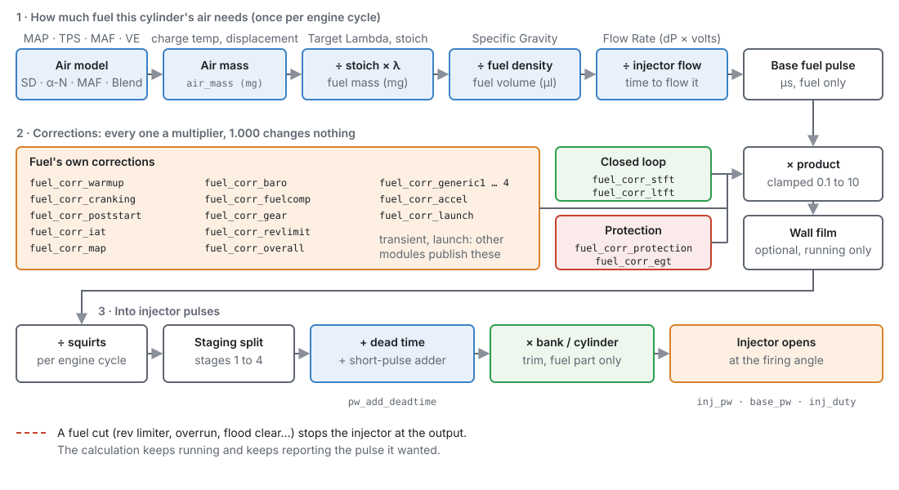
The calculation runs once per engine cycle, or every 50 ms while the engine is stopped.
1 · The air model¶
Air Model fuel_calculator.fuel_model chooses how the air entering each cylinder is estimated.
The model also decides Fuel Load, the channel that the VE and Target Lambda tables use as their
vertical axis:
| Air Model | Fuel Load is | Air density from | Needs |
|---|---|---|---|
| Speed-Density (default) | manifold pressure (kPa) | manifold pressure | MAP, CLT, IAT |
| Alpha-N | throttle position (%) | barometric pressure | TPS, CLT, IAT |
| MAF | manifold pressure (kPa) | (the MAF measures the air directly) | MAF, MAP, CLT, IAT |
| Blend | manifold pressure (kPa) | throttle below the crossover, MAP above (see below) | MAP, TPS, CLT, IAT |
- Speed-Density suits most engines with a plenum and one throttle.
- Alpha-N suits engines where manifold pressure says little about load, such as individual throttle bodies with an aggressive cam. It assumes the air in the port is at atmospheric pressure.
-
MAF divides the measured airflow (g/s) by the number of intake strokes per second. The VE table is not used for air mass in this mode. If the MAF signal fails, the ECU falls back to Speed-Density, sets P1704, and shows MAF Failed - Using MAP
maf_failover. -
Blend is for individual throttle bodies that also have a usable MAP signal. It uses two maps. Below Blend Start RPM (default 2000) the Alpha-N VE Table (speed × throttle, its air at atmospheric pressure) carries the charge, like Alpha-N. Above Blend End RPM (default 4000) the VE table on measured MAP carries it, like Speed-Density. In between, the ECU fades from one to the other by mixing the air masses the two maps give, never their VE numbers. Each range has its own cells, so tuning the low range never moves the cells the upper range uses. Alpha-N VE (Blend)
ve_alphashows the low map's VE, and Blend: Alpha-N Shareblend_alpha_shareshows how much of the charge it is still carrying (0 % above the crossover).
For every model except MAF, the air mass trapped in one cylinder is:
air mass = cylinder volume × VE × air density
where cylinder volume is displacement ÷ cylinders (per rotor on a rotary), and air density comes
from the pressure in the table above and the charge temperature. Charge temperature is a blend of
intake air temperature and coolant temperature, set by Charge Temp IAT Weight (default 100 %,
meaning intake air temperature only). A lower weight lets the coolant temperature pull it up, for a
hot cylinder head that warms the air on its way in. The result is Charge Air Mass air_mass
in milligrams.
VE comes from the VE Table, speed × Fuel Load. A cell of 100 % means the cylinder fills its whole swept volume. The table can have a third axis for ethanol content on a flex-fuel engine.
Charge Load charge_load is the air in the cylinder as a percentage of a full charge: 100 % VE at
barometric pressure and the charge temperature. Every air model publishes it in the same terms, and
it is smooth through Blend's crossover, so it is the load to put Target Lambda and the ignition map on
for Blend and MAF. When you change Air Model, the studio offers to point those two maps at the load
that model suits, converting their load breakpoints (kPa to % of a full charge, and back). Their cells
are kept, so check them afterwards. Keep as they are changes nothing.
2 · From air to fuel¶
- Target Lambda comes from its own table, on the same speed × Fuel Load axes as the VE table. The
ECU limits it to 0.5–1.5. The result is
lambda_target. - Stoich AFR (default 14.7) is the air–fuel ratio at which a fuel burns completely.
- fuel mass = air mass ÷ (stoich × target lambda).
- Fuel Specific Gravity turns fuel mass into fuel volume.
- Injector flow turns volume into time. The Flow Rate table (cc/min) is read against the pressure across the injector and battery voltage.
The result is the base fuel pulse: the time the injector must flow, before any correction and before the time it takes to open.
The fuel is per injection stage. A second stage is often a second fuel as well as a second set of injectors (port petrol with a secondary on E85 or methanol), so each stage has its own page, Fuel Tuning ▸ Stage N ▸ Fuel, with:
- Flex Fuel and Ethanol Source: the stage's ethanol content is fixed (Ethanol %, 0 for
petrol, 85 for E85) or measured by a flex sensor. Several stages that share one fuel system point at
the same sensor. With Flex Fuel on, the ECU uses the sensor while it reads, the last good reading if
it drops out, and Ethanol % until it has read once since power-up. The stage's value is
Ethanol Content (Stage N)
stageN_ethanol. - Stoich AFR and Stoich AFR (Ethanol) (default 14.7 and 9.0): the stage's stoich, blended between the two by its ethanol content. Methanol is its Stoich AFR at 0 %.
- Specific Gravity (default 0.740, one cell), which can be expanded to fuel temperature × ethanol. Fuel Temp Source says where this stage's fuel temperature comes from.
- Fuel Comp Correction (ethanol × load): a trim on this stage's fuel while Flex Fuel is on.
When stages share the fuel, the split between them works in air: each stage's share is sized by
its flow × density × stoich ÷ its trim, so stages on different fuels together burn exactly the air the
charge needs. With one stage this is the ordinary calculation. Charge Ethanol flex_ethanol is the
blend the cylinders actually get, weighted by the fuel mass each stage delivered on the last cycle.
Barometric pressure comes from Barometric Source while it reads, or Assumed Barometric Pressure (default 101.3 kPa) when there is no sensor. A missing MAP reading is treated as atmospheric pressure, never as zero (see A failed MAP, section 6).
3 · The pressure across the injector¶
An injector's flow depends on the difference between rail pressure and manifold pressure. The ECU
works this out per injection stage and publishes it as Injector Pressure Diff inj_press_diff
(inj_press_diff_2 to _4 for further stages). It is used only as an axis for the Flow Rate and
Dead Time tables. Stage 1 Fuel Pressure has three modes:
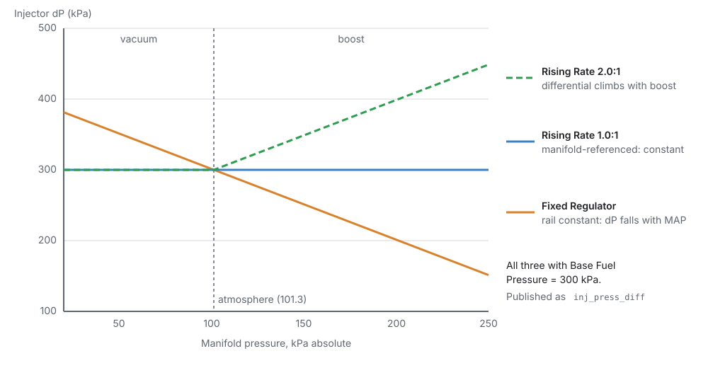
- Sensor: a rail pressure sensor (Stage 1 Fuel Pressure Source) is read, and manifold pressure is subtracted.
- Fixed Regulator (default): the rail is held at Base Fuel Pressure above atmosphere, so the difference falls as manifold pressure rises. Typical of a returnless system with the regulator in the tank.
- Rising Rate: the regulator is referenced to the manifold. At a Rising Rate Ratio of 1.0:1 the rail follows the manifold exactly and the difference never changes. That is a normal vacuum-referenced regulator on a return-style rail, and it needs no pressure sensor. Above 1.0:1 the difference rises with boost, as an aftermarket rising-rate regulator does. Under vacuum the ratio is ignored and it behaves as 1.0:1.
Base Fuel Pressure (default 300 kPa) is the number on the regulator: gauge pressure at atmosphere.
4 · Corrections¶
Every correction is a multiplier. 1.000 changes nothing, 1.100 is 10 % more fuel. Each one has its own Enabled switch. A switched-off correction is not calculated at all and reads exactly 1.000.
| Correction | Channel | What it does | Limits |
|---|---|---|---|
| Coolant Temp (warm-up) | fuel_corr_warmup |
adds the CLT Enrichment table's % (coolant, optionally × MAP) | 0.2–5 |
| Cranking | fuel_corr_cranking |
only while cranking: the Cranking Enrichment table as an absolute % (100 % = no change) | 0–6 |
| Post Start | fuel_corr_poststart |
only after the engine catches: adds the Post-Start table's % (coolant × run time) | 0.2–5 |
| Air Temp | fuel_corr_iat |
adds the Air Temp Correction % (air temperature, optionally × MAP) | 0.2–5 |
| Barometric | fuel_corr_baro |
adds the Barometric Correction % | 0.2–5 |
| Gear | fuel_corr_gear |
adds the Fuel Gear Correction % | 0.2–5 |
| RPM Limiter | fuel_corr_revlimit |
adds the % from the table of speed below the cut × MAP | 0.2–5 |
| Generic 1–4 | fuel_corr_generic1 … 4 |
four tables whose axes you choose | 0.2–5 |
| Overall | fuel_corr_overall |
one fixed % for the whole engine (Overall Fuel Correction) | 0.2–5 |
The fuel composition correction is not in this list: it is per stage, on each stage's share of the
fuel (Stage N ▸ Fuel, section 2), and Fuel Corr: Fuel Comp fuel_corr_fuelcomp shows stage 1's.
The Corrections page links to it.
Other modules add their own corrections to the same product: transient fuel (fuel_corr_accel,
below), closed-loop lambda (fuel_corr_stft, fuel_corr_ltft, chapter 23), engine protection
(fuel_corr_protection, chapter 29), exhaust-temperature protection (fuel_corr_egt, enrich only)
and launch control (fuel_corr_launch, chapter 26). The whole product is limited to 0.1–10.
The warm-up, air temperature, barometric, gear, generic and per-stage fuel composition corrections change slowly, so the ECU refreshes them in turn, one table per millisecond, rather than every cycle.
5 · Starting the engine¶
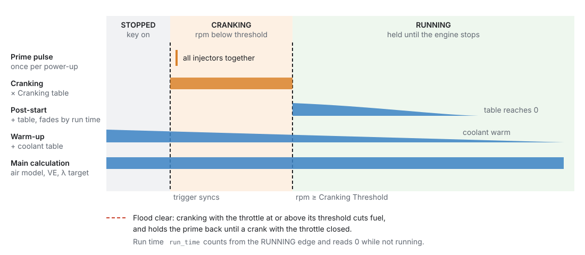
The engine is cranking while it turns below Cranking Threshold engine.cranking_rpm (default
400 rpm), and running once it passes it. It stays running through any dip in speed until it
actually stops.
-
Prime pulse: one squirt from every injector at once, the first time the trigger syncs while cranking after power-up. It is not fired at key-on. With Prime Mode = Injection Time (ms) the table cell is the pulse length in ms. With VE (%) the cell is a percentage of the fuel a cylinder would need at 100 % VE and atmospheric pressure, and the injector dead time is added.
-
Cranking enrichment: while cranking, the Cranking Enrichment table (coolant, optionally × ethanol) multiplies the fuel. It is an absolute percentage: 100 % is no change, 200 % is double. The ECU limits it to 600 %.
-
Post-start enrichment: once the engine catches, the Post-Start table (coolant × Engine Run Time
run_time) adds fuel. Run time counts from the moment the engine caught and reads 0 while it is not running. The enrichment ends when the table reaches 0. -
Warm-up: the CLT Enrichment table adds fuel until the coolant is warm. It applies while cranking too.
Flood clear. If a cylinder is flooded, crank with the throttle held wide open: with Flood Clear
Enabled, the fuel stops while the engine is cranking and the throttle is at or above Flood Clear
Above TPS (default 90 %). It needs a valid throttle reading, so a failed throttle sensor can never
stop an engine starting. The prime pulse is held back too, and fires on a later crank with the
throttle closed. Flood Clear Active flood_clear shows it.
6 · Throttle movement: transient fuel¶
The steady-state tables assume the load is not changing. When the throttle snaps open, the manifold fills, fuel wets the port walls, and the engine goes lean for a moment. Transient fuel covers that. There are two ways to do it. Use one, not both.
Transient Throttle (on by default) is the rate-based method:
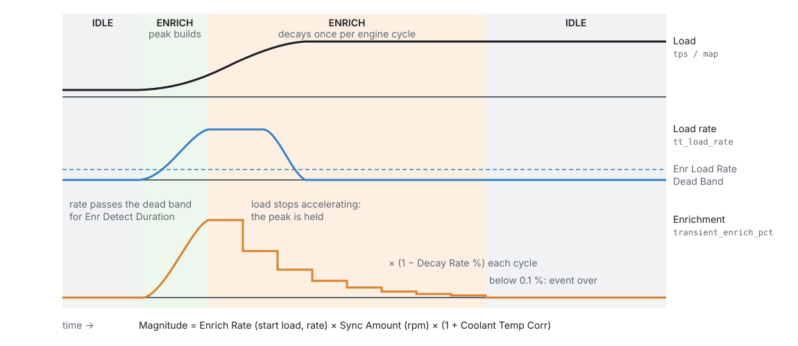
- The load is throttle position or instantaneous MAP (Load Type). The ECU measures how fast
it is changing, Transient Load Rate
tt_load_rate, over a short window. - When the rate stays above Enr Load Rate Dead Band (default 25 /s) for Enr Detect Duration (default 1 ms), an enrichment event starts. The load at that moment is latched as the start load.
- The size of the enrichment is:
Enrich Rate (start load × load rate) × Enrich Amount (engine speed; 100 % is full) ×
(1 + Coolant Temp Corr) × the optional Overall Correction. The result is Transient
Enrich %
transient_enrich_pct. - While the load is still accelerating faster than Enr Load Accel Dead Band (default 120 /s²), the peak is held.
- After that, with Enable Decay on, the enrichment shrinks by the Enrich Decay % once per engine cycle. Below 0.1 % the event ends. With decay off, the enrichment simply follows the Enrich Rate table.
- Disenrichment (off by default) is the same in reverse when the load falls, using the Disenrich tables and dead bands. A strong movement in the opposite direction switches an event from one to the other.
- Async (off by default): at the start of an enrichment event, the ECU can also fire up to Max Async Injector Pulses extra squirts from every injector, sized by the Async Amount table, each with its own dead time. Async Holdoff Time is the minimum time between bursts.
- Ignition Correction adds timing (degrees, by load × speed) while enriching, and after the event it fades away over Ign Corr Decay Time (default 500 ms).
The enrichment is limited to −100 % … +300 %.
MAP Prediction & Fuel Film is the model-based method. It models what happens instead of adding fuel by feel: prediction fixes the measurement (MAP read late), and the film fixes the fuel (fuel stuck to the port walls). It has its own page, Fuel Tuning ▸ MAP Prediction & Fuel Film, and one button there, Use MAP Prediction + Fuel Film, switches both halves on and Transient Throttle off. The two halves can still be switched separately: an Alpha-N or ITB engine may want only the film, a direct-injected one only prediction. Transient Throttle has the matching Use Classic Transient Fuel button, and both pages warn while both methods are on.
MAP Prediction map_predict_enabled. A MAP reading is averaged over at least one cylinder period,
because the manifold pulses with every intake stroke, so it is always a little late. Snap the throttle
open and the plenum fills in milliseconds while the reading still says vacuum. While the throttle is
moving fast, the ECU uses the Predicted MAP table (speed × throttle: what the manifold settles to
at that point) instead:
- How fast counts is set by the Transient TPS Scaling table, a throttle rate in %/s against
speed (optionally × throttle). The throttle rate is Throttle Rate
tps_rate: the change in the Throttle Source channel over the time since the last calculation, lightly smoothed. - At or above the table's rate, the estimate is the full predicted value. Below it, the rate as a fraction of the table's rate decides how far the estimate moves from measured towards predicted: half the rate, half way. Under a tenth of the table's rate counts as noise and is ignored.
- The default rises with speed, from 150 %/s at 500 rpm through 300 at 2000 to 700 at 6000, because the sensor lags less at speed: one cylinder period is about 30 ms at 1000 rpm on a four and 5 ms at
- Set it about ten times the rate the throttle channel wanders at with your foot still.
- It takes the higher of measured and predicted, so it can only add fuel. With Predict Tip-Out on (off by default) a fast lift is predicted too, and then the estimate moves down towards the table, the lower of the two. Turn that on only once the table is right at part throttle: an untuned table predicting down makes a lean spike on every lift.
- After a movement, prediction holds for Predicted MAP Time (default 200 ms). A stronger movement during the hold restarts it.
- Manifold Pressure (est)
map_estis the value used, and MAP Sourcemap_sourcesays where it came from: Measured, Predicted (transient), or Failed (baro). - Closed-loop lambda holds its trim while prediction is active: the short-term trim is frozen, not
reset, and Closed-Loop Hold
lambda_cl_holdreads Transient. The same channel names every other reason the trim is held: fuel cut, after a cut, settling, cold, off range.
Fuel Film wallfilm_enabled (port wetting). Part of every squirt lands on the port wall and reaches
the cylinder over the following cycles. The ECU tracks the film all the time and corrects each squirt
for it: at a steady load the film gives back what it takes and the correction is ×1.000; when the load
rises it injects more to build the film, and when it falls, less, because the film gives fuel back.
During a fuel cut the film only evaporates.
- Film Pooling Percentage (coolant × MAP, 0–90 %): how much of each squirt stays on the wall. About 5–10 % warm with a well-matched injector and port, 25–30 % for sharp inlet turns, around 50 % cold.
- Film Evaporation Time Constant (speed × coolant, 1–1000 ms): how fast the film comes off. About 98 % of it has gone in four times this value. Around 200 ms warm and at speed, up to 400 ms cold or at low speed.
- The film is worked out per injection stage, after the fuel is split between stages. Each stage has a Port Film switch on its Fuel page: turn it off for a direct-injected stage, which has no port wall to wet.
- Fuel Corr: Fuel Film
fuel_corr_filmshows the effect: the fuel injected over the fuel wanted. - Set the injection timing first. A lean spike caused by squirting against a closed valve is not a pooling problem.
A failed MAP. If the MAP sensor stops reading on a model that needs it, the ECU reads atmospheric pressure in its place, sets P1700, and MAP Source reads Failed (baro). That is rich at idle, which is the safe side. It does not fall back to the Predicted MAP table: that table is for transients only, used only with prediction on.
7 · From fuel to injector pulses¶
-
Split per squirt. The fuel above is for one cylinder for one cycle. It is divided by the number of times the injector fires per cycle, which depends on the stage's Injection Mode (chapter 15). A sequential engine that only has crank sync fires twice per cycle, so each squirt gets half.
-
Staging (engines with more than one injection stage). Stage 1 carries the fuel up to its Staging Duty Cycle (default 50 %). The next stage then takes what is left, up to its own staging duty, and so on. Once every stage is at its staging duty, they all rise together towards 100 %. Past 100 % on every stage the injectors are too small, and the rest is put on the last stage so no fuel is silently lost.
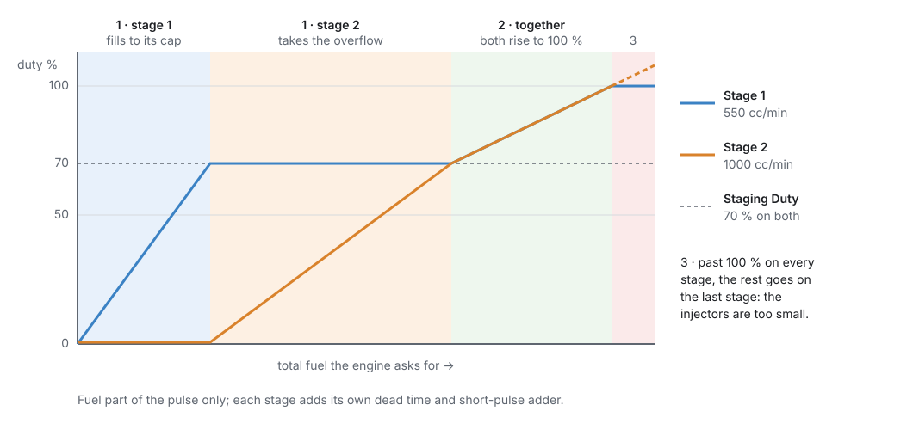
Figure 19.5 — Two stages, both with a Staging Duty of 70 %. -
Dead time and the short-pulse adder. Each opening of an injector costs its Dead Time, the time it takes to open, from a table of pressure difference × battery voltage. At very short pulses an injector is no longer linear, and the Short Pulse Width Adder corrects for that, read against the fuel pulse in ms. Both are added per squirt, after the split.
-
Bank and cylinder trims. Closed-loop lambda's per-bank offsets and your Cylinder N Correction tables scale the fuel part of the pulse only, never the dead time. A per-bank offset needs a mode that can address banks (anything except Multi-Point). A per-cylinder table needs Sequential.
-
Timing. The Firing Angle BTDC table (speed × load) says where the squirt happens. Whether that angle is the start or the end of the squirt is set by Injector Timing Method (chapter 15). Each further stage has its own angle table.
Fuel cuts (rev limiter, overrun, flood clear, protection) stop the injectors at the output. The
calculation keeps running, and Base Fuel PW base_pw keeps showing the pulse the engine would
have had. So a cut never looks like a fuel model that has collapsed to zero.
Before you start¶
Basic
- Engine basics (chapter 15): cylinders, displacement, firing order, and the injection stages with their mode and outputs.
- A working trigger (chapter 16). Without sync nothing is injected.
- Sensors (chapter 17): MAP (for every model except Alpha-N), coolant and intake air temperature (always), TPS (Alpha-N, Blend, and transient fuel), and a wideband lambda sensor for tuning (chapter 23).
- Injector data: flow rate at a known pressure, and ideally dead time against voltage and pressure, from the injector's data sheet or a flow bench.
- The fuel system: which kind of pressure regulator the rail has, and its pressure.
Setting it up¶
Basic → Intermediate
This walk-through uses Example 1 below: a naturally aspirated 2.0 L four-cylinder, Speed-Density, sequential, with a vacuum-referenced 300 kPa regulator on a return-style rail.
Step 1 — Fuel Setup¶
Open Configuration ▸ Engine Configuration ▸ Fuel System ▸ Fuel Setup.
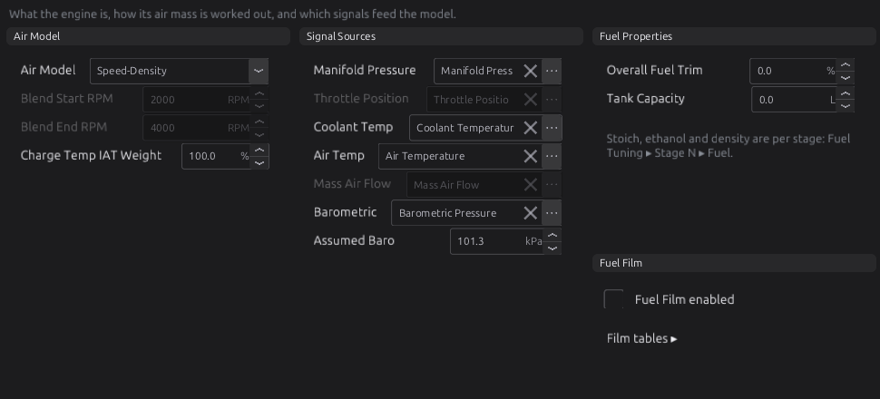
- Air Model: Speed-Density for the example. The two Blend speeds are used only by Blend.
- Charge Temp IAT Weight: leave at 100 % to start.
- Signal Sources: the channel each input comes from. The defaults are the usual sensors. Change one only if yours reads on a different channel. Assumed Baro is used when there is no barometric sensor: set it to your local pressure if you live high up.
-
Fuel Properties: Overall Fuel Trim is the Overall correction. Tank Capacity (litres) only turns the fuel-level sender's percentage into litres. 0 means unknown. Stoich, ethanol and density are set per stage (Step 3).
-
Fuel Film: leave off unless you use MAP Prediction & Fuel Film (section 6). Film tables ▸ opens that page.
Step 2 — Injector stage 1¶
Open Fuel Tuning ▸ Stage 1 ▸ Setup.
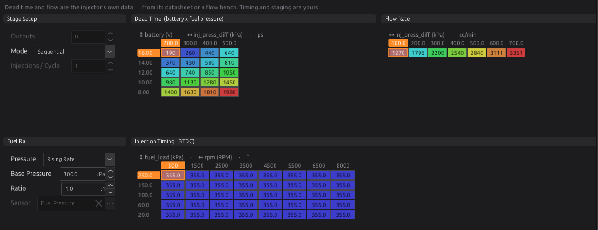
- Stage Setup ▸ Mode: the stage's injection mode (set in chapter 15; shown here for reference).
- Flow Rate (cc/min), against pressure difference and battery voltage. Enter the injector's flow at the pressures it was measured at. If you only have one figure, put it in every cell.
- Dead Time (µs), against battery voltage and pressure difference. Copy it from the data sheet. Dead time rises steeply as voltage falls, so the low-voltage rows matter for cranking.
- Fuel Rail ▸ Pressure: Rising Rate for the example, with Base Pressure 300 kPa and Ratio 1.0. For a returnless rail with the regulator in the tank, use Fixed Regulator. With a rail pressure sensor, use Sensor and pick it in Sensor.
- Injection Timing (BTDC): where each squirt is placed. The default is 355° for every cell.
- Fuel Tuning ▸ Stage 1 ▸ Short Pulse Width Adder: the small-pulse correction from the injector data. Leave the defaults if you have no data.
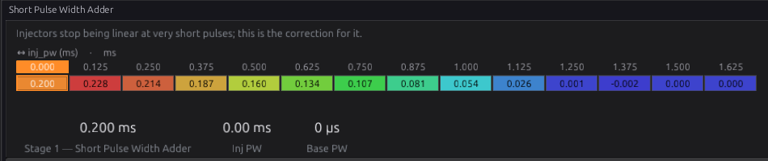
Step 3 — The fuel¶
Open Fuel Tuning ▸ Stage 1 ▸ Fuel. Each stage has one.
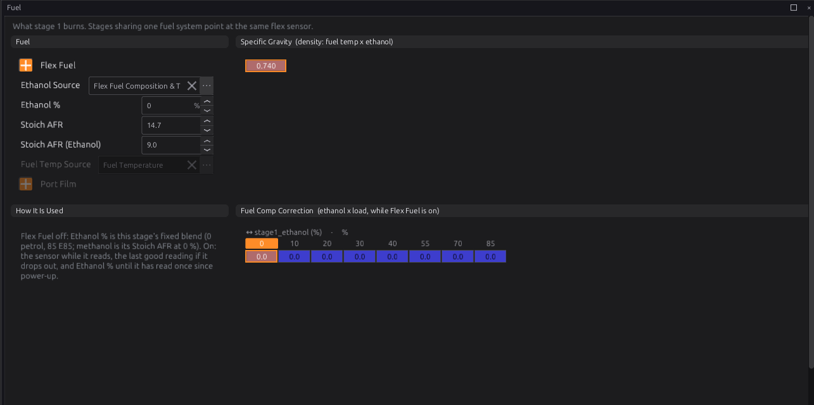
- Flex Fuel: off for a fixed fuel. Then Ethanol % is the blend: 0 for petrol, 85 for E85. On, pick the flex sensor in Ethanol Source, and Ethanol % is used only until the sensor has read once since power-up.
- Stoich AFR 14.7 for petrol. Stoich AFR (Ethanol) 9.0 is pure ethanol's; the ECU blends between the two by the ethanol content, so an E85 stage needs no other change. Methanol is its Stoich AFR (about 6.4) at 0 % ethanol.
- Specific Gravity: one number by default, 0.740. Change it for your fuel, or expand it to fuel temperature × ethanol for a flex-fuel stage.
- Fuel Comp Correction: a trim against ethanol × load, used only while Flex Fuel is on. Leave it at 0 to start.
- Port Film matters only with the fuel film on (section 6): off for a direct-injected stage.
Step 4 — VE and Target Lambda¶
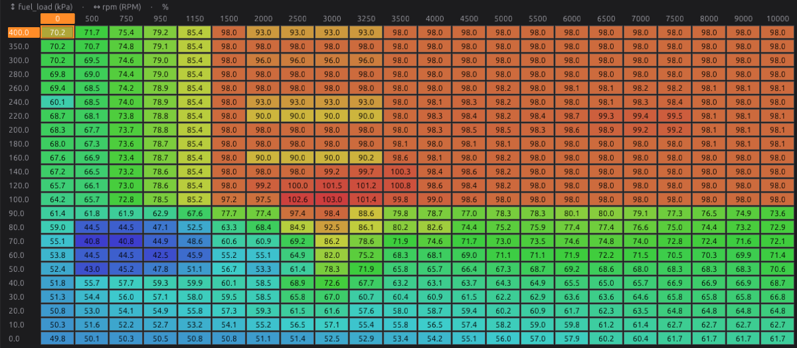
The VE Table is where most tuning happens (chapter 38). A new tune's table is a reasonable starting shape for a naturally aspirated engine. Before the first start, check that the cells around idle (low speed, 30–50 kPa) are neither very high nor very low.
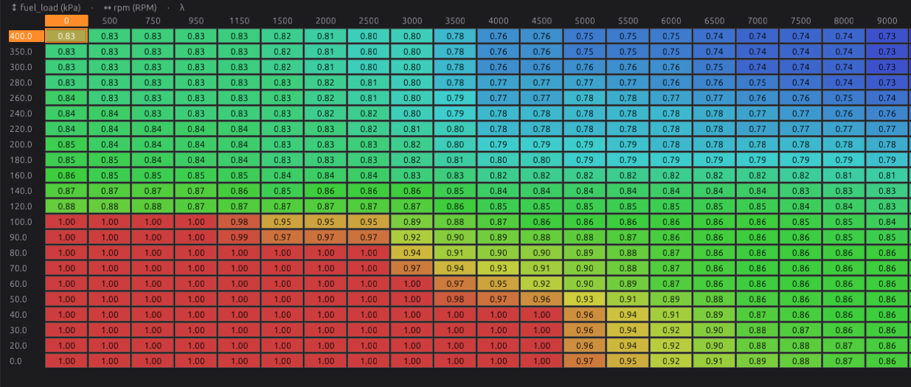
Target Lambda is what you want the mixture to be at each speed and load: about 1.00 at idle and cruise, richer at full load, and richer again under boost. The default table follows that shape.
Step 5 — Starting and warm-up¶
Open Fuel Tuning ▸ Start & Warmup. The page lays out everything between key-on and a warm idle.
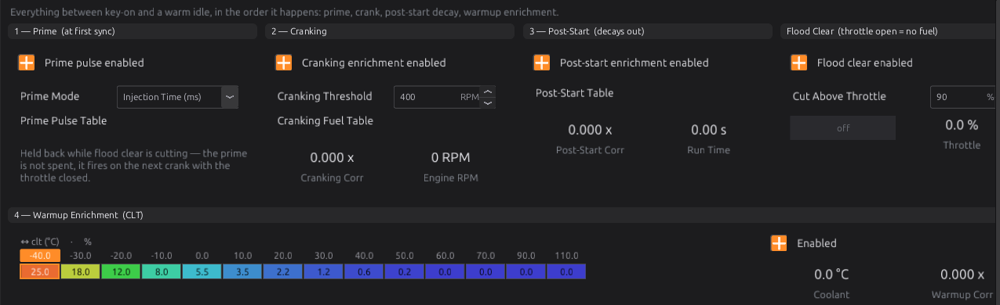
- Prime: tick Prime pulse enabled if the engine starts better with a squirt of fuel first, choose Prime Mode, and fill the Fuel Prime Pulse table (coolant).
- Cranking: Cranking enrichment enabled, the Cranking Threshold, and the Cranking Fuel Table.
- Post-Start: Post-start enrichment enabled and its table.
- Flood Clear: Flood clear enabled and Cut Above Throttle.
- Warmup Enrichment: the CLT table. The default adds 25 % at −40 °C, falling to 0 by 60 °C.
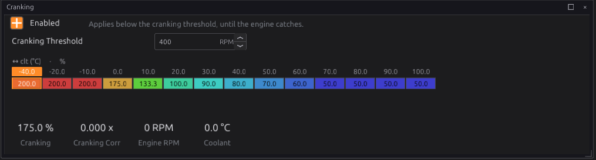
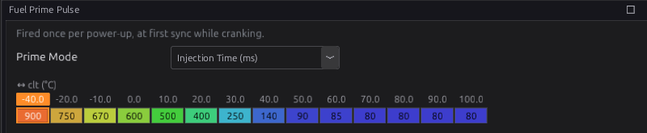
The prime fires at sync, not at key-on
The prime fires the first time the trigger syncs while cranking after power-up, so turning the key on and off while you work does not fill the ports with fuel.
Step 6 — Corrections¶
Fuel Tuning ▸ Corrections lists every correction with its switch, its live value and its channel.
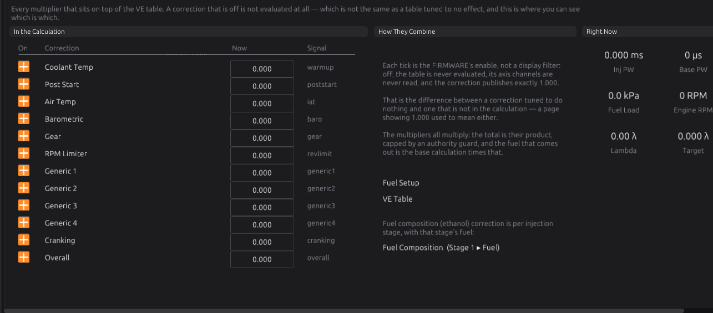
Each correction's own page appears in the navigation under Corrections only while it is switched on. The fuel composition correction is per stage, and the page links to it (Fuel Composition (Stage 1 ▸ Fuel)). Leave them all on with their default tables to start. The warm-up, cranking and post-start tables matter from the first start, and the rest can wait until the engine runs.
Step 7 — Transient fuel¶
Open Fuel Tuning ▸ Transient Throttle.
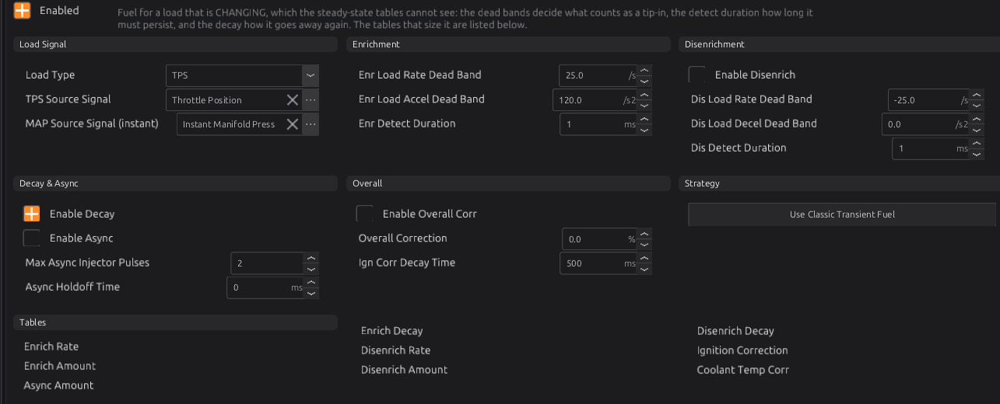
- Load Type: TPS for most engines. MAP uses the instantaneous (not averaged) MAP channel set in MAP Source Signal (instant).
- Leave the dead bands at their defaults to start.
- Enrich Rate is the main table: start load × load rate.
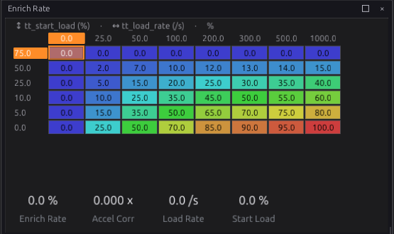
If you prefer the model-based method, open Fuel Tuning ▸ MAP Prediction & Fuel Film and press Use MAP Prediction + Fuel Film. That switches both halves on and Transient Throttle off.
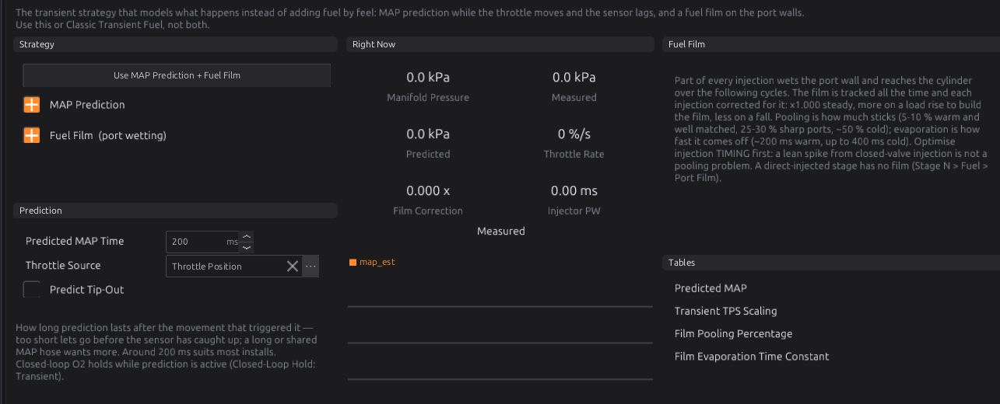
-
Predicted MAP: what the manifold settles to at each speed and throttle. Log
mapat steady points and fill it in, or let Auto Tune learn it (chapter 40): choose Tune ▸ Predicted MAP, press Start, and hold steady throttle and speed points. It learns only from settled readings, with speed, throttle and MAP all steady, never from the transient itself.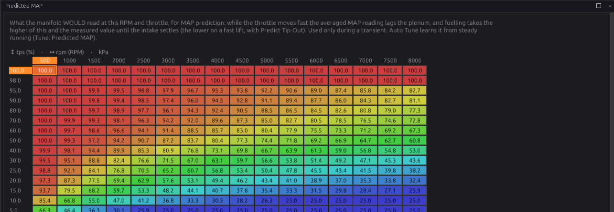
Figure 19.19 — Predicted MAP. -
Transient TPS Scaling: leave the default curve to start. If prediction switches on with your foot still, raise it; watch Throttle Rate at a steady pedal.
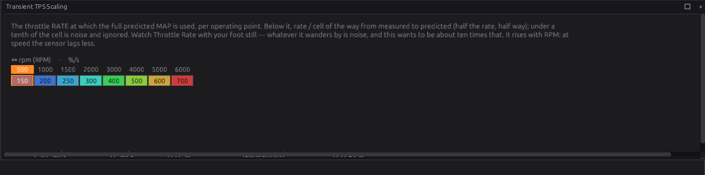
Figure 19.20 — Transient TPS Scaling. About ten times the throttle rate you see with your foot held still. -
Film Pooling Percentage and Film Evaporation Time Constant: the defaults suit a typical port-injected engine. Get the injection timing right before you change them.
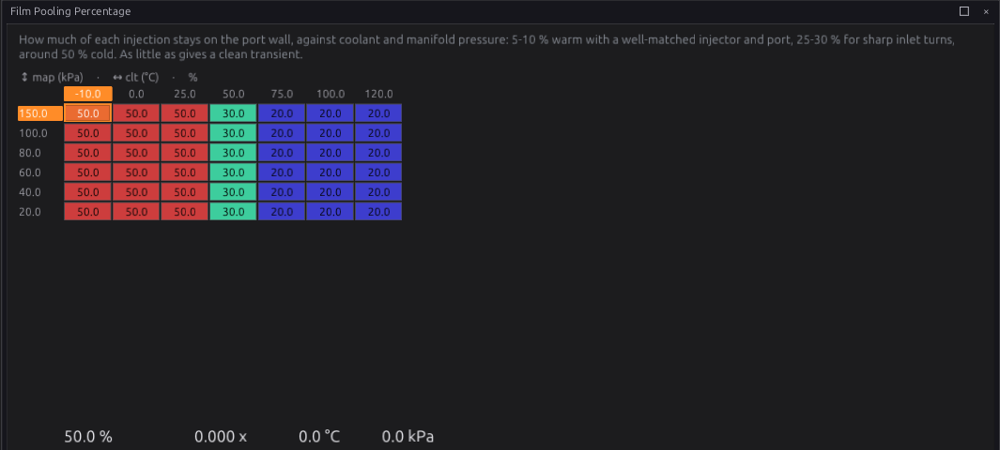
Figure 19.21 — Film Pooling Percentage.
Step 8 — Check with Fuel Breakdown¶
Fuel Tuning ▸ Fuel Breakdown shows the whole calculation live: the charge, every correction, closed loop, dead time, and the commanded pulse. It is the first page to open when the fuelling does something you do not expect.

The Fuel Tuning page itself (Figure 19.23) is a summary: which fuel functions are switched on, and the whole correction chain live.
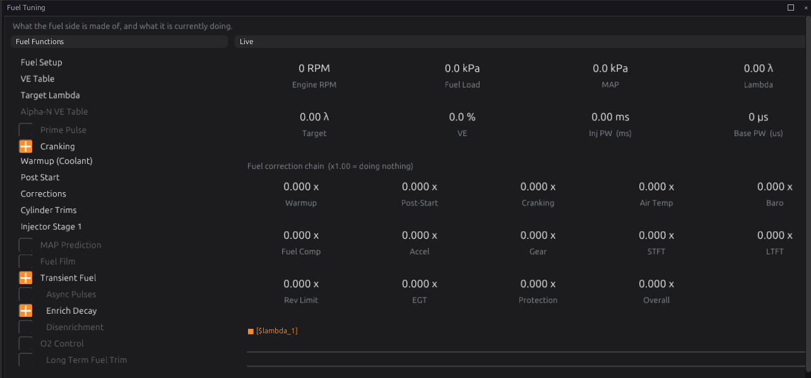
Worked examples¶
Intermediate
Example 1 — naturally aspirated 2.0 L four, Speed-Density, sequential
| Setting | Value | Why |
|---|---|---|
| Cylinders / Displacement (chapter 15) | 4 / 2000 cc | 500 cc per cylinder |
| Air Model | Speed-Density | one throttle and a plenum |
| Stage 1 Mode | Sequential | cam sensor fitted (chapter 16) |
| Stage 1 Fuel Pressure | Rising Rate, 300 kPa, 1.0:1 | vacuum-referenced regulator on a return rail: the difference is always 300 kPa |
| Flow Rate | the injector's rating at 300 kPa, in every cell | one figure from the data sheet |
| Transient Throttle | on, Load Type TPS | the usual method |
With a manifold-referenced regulator no fuel pressure sensor is needed: the pressure difference is known to be 300 kPa at every load.
Example 2 — turbocharged six, returnless rail
A turbocharged engine with the regulator in the tank, holding the rail at 400 kPa.
| Setting | Value | Why |
|---|---|---|
| Air Model | Speed-Density | MAP measures boost directly |
| Stage 1 Fuel Pressure | Fixed Regulator, 400 kPa | the rail does not follow boost |
| Flow Rate table | flow at several pressure differences | at 200 kPa manifold pressure (about 1 bar of boost) the difference falls to about 300 kPa, and the flow with it |
| Target Lambda | richer above 100 kPa | boost wants a richer mixture (chapter 37) |
With a Fixed Regulator, the difference is Base Pressure + barometric pressure − MAP, so the Flow Rate and Dead Time tables need cells at the lower differences seen under boost.
Example 3 — individual throttle bodies, Blend
Four throttle bodies with a balance tube that gives a usable but weak MAP signal.
| Setting | Value | Why |
|---|---|---|
| Air Model | Blend | throttle-based at low speed, MAP-based at high speed |
| Blend Start / End RPM | 2500 / 4500 | the range where MAP becomes trustworthy on this engine |
| Alpha-N VE Table | VE against speed × throttle | the low-speed map; only appears in the navigation with Blend selected |
| Target Lambda and ignition load | Charge Load | continuous through the crossover; the studio offers it when you choose Blend |
Tune the Alpha-N VE Table below the crossover and the VE table above it. Between the two, watch Blend: Alpha-N Share: the VE autotune leaves the VE table alone wherever the Alpha-N map carries any of the charge.
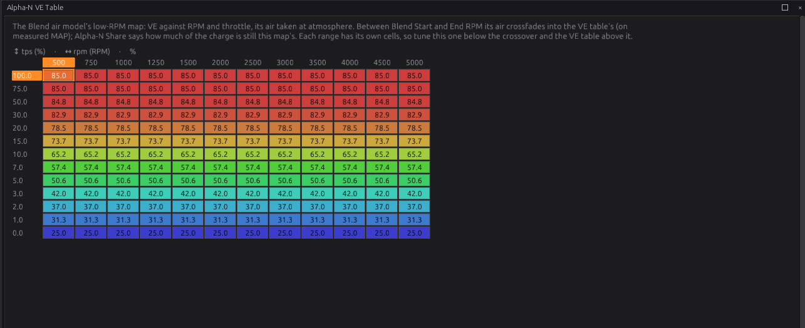
Example 4 — two injector stages
A second set of larger injectors that only work at high load: Number of Injection Stages 2 (chapter 15), each stage with its own Flow Rate, Dead Time, Short Pulse Width Adder, Firing Angle and Fuel Pressure.
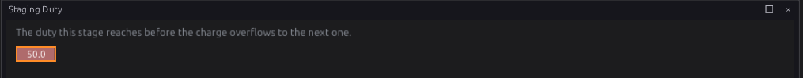
With Stage 1 Staging Duty at 70 %, stage 1 carries everything up to 70 % duty. Stage 2 then takes the rest up to its own staging duty, and after that both rise together (Figure 19.5). The Staging Duty table can be expanded to speed × MAP.
Tuning it¶
Intermediate → Advanced
Chapter 38 is the full procedure. The short version:
- Get the injector data right first. Flow rate, dead time and the pressure mode. A wrong dead time shows as a mixture that is right at load but wrong at idle, and it changes with battery voltage.
- Tune VE with a warm engine and the corrections at their defaults, from idle outwards. Log
lambda,lambda_target,ve,fuel_loadandrpm. The Auto Tune tool (chapter 40) does this from logged data. - Tune starting next: cranking and prime on a cold engine, post-start, then warm-up as it warms.
- Transient fuel last, with the steady state right. Watch
lambdaon quick throttle movements. With Transient Throttle, a lean spike on tip-in wants more Enrich Rate; a rich one wants less. With MAP Prediction & Fuel Film, get Predicted MAP right first (Auto Tune can learn it), then raise Film Pooling where a tip-in still goes lean and lower it where it goes rich. - Do not correct a VE error with a correction table. The corrections are for real effects (temperature, pressure, gear). A table used to hide a VE error will be wrong somewhere else.
Channels worth logging: base_pw, inj_pw, inj_duty, ve, air_mass, fuel_load,
lambda_target, charge_temp, inj_press_diff, pw_add_deadtime, the fuel_corr_* family,
transient_enrich_pct, tt_load_rate, map_est, map_source, tps_rate, fuel_corr_film,
lambda_cl_hold, charge_load, blend_alpha_share.
Injector duty
Injector Duty Cycle inj_duty is the commanded pulse, dead time included, over the time one
squirt has available. Near 100 % the injector cannot open any longer and the engine will go lean.
Keep it below about 85 % at full load, or add a stage.
Diagnostics¶
Intermediate
| Code | Meaning | What sets it | What to check |
|---|---|---|---|
| P1700 | Fuel: MAP signal missing | Speed-Density, MAF or Blend with no valid MAP. Severity 2. Fuelling reads atmospheric pressure in its place; MAP Source reads Failed (baro). | MAP sensor and its source (chapter 17) |
| P1701 | Fuel: TPS signal missing | Alpha-N or Blend with no valid TPS. Severity 2. | TPS (chapter 17) |
| P1702 | Fuel: coolant-temp signal missing | Severity 2. | Coolant sensor |
| P1703 | Fuel: intake-air-temp signal missing | Severity 1. | Air temperature sensor |
| P1704 | Fuel: MAF signal missing | MAF model with no valid MAF. Severity 2. Fuelling falls back to Speed-Density. | MAF sensor |
| P1720 | Transient Throttle: load-source signal missing | The TPS or MAP it uses is not valid. Severity 1. | The Load Type's sensor |
A source that is not assigned at all raises its code at severity 1 even with the key off, so the bench shows which inputs still need a signal. A source that is assigned but not reading raises it at the severity above, and only with the key on.
Troubleshooting¶
Basic → Advanced
| Symptom | Likely causes | Check |
|---|---|---|
| No injection at all | No sync; injector outputs not assigned; a fuel cut active; stages not set up | Sync level (chapter 16); injection stage outputs (chapter 15); base_pw is not 0 but the injector is silent means a cut is active |
| Rich or lean everywhere by the same proportion | Stoich AFR, specific gravity, displacement or injector flow wrong | Stage N ▸ Fuel, chapter 15, Flow Rate |
| Right at load, wrong at idle | Dead time wrong | Dead Time table; the effect changes with battery voltage |
| Lean under boost only | Fixed Regulator selected on a referenced rail, or the reverse; flow table missing low pressure-difference cells | Stage 1 Fuel Pressure mode; inj_press_diff under boost |
| Floods on a cold start | Too much cranking enrichment or prime | Cranking table; Prime table; clear with flood clear |
| Starts, then dies after a few seconds | Post-start enrichment too little or too much | Post-Start table; log lambda and run_time |
| Lean stumble on tip-in | Transient enrichment too small, or the detect dead band too high | Enrich Rate; Enr Load Rate Dead Band; transient_enrich_pct |
| Rich bog on tip-in | Transient enrichment too big | Enrich Rate; Enrich Decay |
| Fuelling jumps with no throttle movement | Transient Throttle and MAP Prediction both on; noise on TPS | Use one method (the pages warn); Transient TPS Scaling; tps_rate at a steady pedal |
| Lean spike on every throttle lift | Predict Tip-Out on with an untuned Predicted MAP table | Turn Predict Tip-Out off, or tune Predicted MAP (Auto Tune) |
| A flex-fuel engine runs lean as petrol | Ethanol sensor never read, so the stage uses its Ethanol % | stage1_ethanol, flex_ethanol; the stage's Ethanol % |
| Closed-loop trim does nothing for a while after throttle movements | It holds during MAP prediction, by design | lambda_cl_hold reads Transient; a long Predicted MAP Time holds it longer |
inj_duty near 100 % |
Injectors too small | Bigger injectors, higher pressure, or a second stage |
Settings reference¶
Every Fuel setting, generated from the definition the studio loads:
| Setting | What it does |
|---|---|
Fuel Tank Capacityfuel_calculator.tank_capacity_lRange: 0.0 to 500.0 Default: 0.0 Units: L |
How much the tank holds when full, in litres. The level sender reads a percentage of its own travel; only this turns that into a quantity. Leave it at 0 if you do not know it — the litres reading then stays absent, which is honest, rather than reading zero on a full tank. |
MAP Source Signalfuel_calculator.map_srcRange: -1 to 32767 Default: 273 |
Which signal is read as manifold pressure. It is the load axis for speed-density and the density term in the air-mass calculation, so this is the single most consequential source selection in the module. |
TPS Source Signalfuel_calculator.tps_srcRange: -1 to 32767 Default: 337 |
Which signal is read as throttle position — the load axis for alpha-N and the Blend model's low-RPM map, and what MAP prediction watches for a transient. |
CLT Source Signalfuel_calculator.clt_srcRange: -1 to 32767 Default: 61 |
Which signal is read as coolant temperature, used for warm-up enrichment and as part of the charge temperature estimate. |
IAT Source Signalfuel_calculator.iat_srcRange: -1 to 32767 Default: 134 |
Which signal is read as intake air temperature. It sets charge density directly: cold air is denser and needs more fuel, and this is where that enters the calculation. |
Charge Temp IAT Weightfuel_calculator.charge_temp_iat_pctRange: 0.0 to 100.0 Default: 100.0 Units: % |
How much of the charge temperature estimate comes from INTAKE AIR rather than coolant, in percent. It is a physical statement about the engine's ports: 100% assumes the charge arrives at the temperature the intake sensor reads, while lower values acknowledge that a hot cylinder head warms the charge on its way in. Port-injected engines with hot heads usually want less than 100%. |
Stage 1 Fuel Pressurefuel_calculator.stage1_fuel_press_modeRange: one of: Sensor, Fixed Regulator, Rising Rate Default: Fixed Regulator |
How stage 1's rail pressure is known. A sensor measures it; a fixed regulator holds it at a set pressure so the differential falls as boost rises; a 1:1 rising-rate regulator references the manifold and holds the differential constant, which is the only one of the three needing no MAP sensor at all. |
Stage 1 Base Fuel Pressurefuel_calculator.stage1_fuel_press_base_kpaRange: 0.0 to 1000.0 Default: 300.0 Units: kPa |
The pressure stage 1's regulator is set to, as gauge pressure at atmosphere — the number written on it (300 kPa = 3 bar = 43.5 psi). Used by the Fixed and Rising Rate modes; a Sensor install ignores it. It is NOT the differential except by coincidence: on a fixed regulator the differential is this minus whatever the manifold is doing. |
Stage 1 Rising Rate Ratiofuel_calculator.stage1_fuel_press_ratioRange: 1.0 to 20.0 Default: 1.0 Units: :1 |
How much stage 1's rail pressure climbs per unit of boost, for a Rising Rate regulator. 1.0:1 is a manifold-REFERENCED regulator: the rail follows the manifold exactly, so the differential never moves and the injectors flow the same at 2 bar of boost as at idle — that is what a stock returnless system does. Above 1.0 the rail climbs FASTER than the manifold and the differential rises with boost, which is what an aftermarket rising-rate regulator is for: 6.0:1 adds five units of differential per unit of boost. The rail tracks the manifold BOTH ways — put vacuum on the hose and the rail pressure drops, boost and it rises — which is the same thing as saying the differential holds: the rail is the differential plus the manifold. Under vacuum the ratio stops amplifying and the regulator behaves as 1.0:1, because multiplying vacuum by the ratio would drive the differential below zero and no regulator flows fuel backwards. |
Stage 1 Fuel Pressure Sourcefuel_calculator.stage1_fuel_press_srcRange: -1 to 32767 Default: 126 |
Which signal reports stage 1's rail pressure, when its mode is Sensor. A stage on its own rail with its own transducer names that sensor here — any channel will do, so a generic or auxiliary input wired to a pressure sender is a valid answer. Ignored in the other two modes. |
Stage 2 Fuel Pressurefuel_calculator.stage2_fuel_press_modeRange: one of: Sensor, Fixed Regulator, Rising Rate Default: Fixed Regulator |
How stage 2's rail pressure is known. A sensor measures it; a fixed regulator holds it at a set pressure so the differential falls as boost rises; a 1:1 rising-rate regulator references the manifold and holds the differential constant, which is the only one of the three needing no MAP sensor at all. |
Stage 2 Base Fuel Pressurefuel_calculator.stage2_fuel_press_base_kpaRange: 0.0 to 1000.0 Default: 300.0 Units: kPa |
The pressure stage 2's regulator is set to, as gauge pressure at atmosphere — the number written on it (300 kPa = 3 bar = 43.5 psi). Used by the Fixed and Rising Rate modes; a Sensor install ignores it. It is NOT the differential except by coincidence: on a fixed regulator the differential is this minus whatever the manifold is doing. |
Stage 2 Rising Rate Ratiofuel_calculator.stage2_fuel_press_ratioRange: 1.0 to 20.0 Default: 1.0 Units: :1 |
How much stage 2's rail pressure climbs per unit of boost, for a Rising Rate regulator. 1.0:1 is a manifold-REFERENCED regulator: the rail follows the manifold exactly, so the differential never moves and the injectors flow the same at 2 bar of boost as at idle — that is what a stock returnless system does. Above 1.0 the rail climbs FASTER than the manifold and the differential rises with boost, which is what an aftermarket rising-rate regulator is for: 6.0:1 adds five units of differential per unit of boost. The rail tracks the manifold BOTH ways — put vacuum on the hose and the rail pressure drops, boost and it rises — which is the same thing as saying the differential holds: the rail is the differential plus the manifold. Under vacuum the ratio stops amplifying and the regulator behaves as 1.0:1, because multiplying vacuum by the ratio would drive the differential below zero and no regulator flows fuel backwards. |
Stage 2 Fuel Pressure Sourcefuel_calculator.stage2_fuel_press_srcRange: -1 to 32767 Default: 0 |
Which signal reports stage 2's rail pressure, when its mode is Sensor. A stage on its own rail with its own transducer names that sensor here — any channel will do, so a generic or auxiliary input wired to a pressure sender is a valid answer. Ignored in the other two modes. |
Stage 3 Fuel Pressurefuel_calculator.stage3_fuel_press_modeRange: one of: Sensor, Fixed Regulator, Rising Rate Default: Fixed Regulator |
How stage 3's rail pressure is known. A sensor measures it; a fixed regulator holds it at a set pressure so the differential falls as boost rises; a 1:1 rising-rate regulator references the manifold and holds the differential constant, which is the only one of the three needing no MAP sensor at all. |
Stage 3 Base Fuel Pressurefuel_calculator.stage3_fuel_press_base_kpaRange: 0.0 to 1000.0 Default: 300.0 Units: kPa |
The pressure stage 3's regulator is set to, as gauge pressure at atmosphere — the number written on it (300 kPa = 3 bar = 43.5 psi). Used by the Fixed and Rising Rate modes; a Sensor install ignores it. It is NOT the differential except by coincidence: on a fixed regulator the differential is this minus whatever the manifold is doing. |
Stage 3 Rising Rate Ratiofuel_calculator.stage3_fuel_press_ratioRange: 1.0 to 20.0 Default: 1.0 Units: :1 |
How much stage 3's rail pressure climbs per unit of boost, for a Rising Rate regulator. 1.0:1 is a manifold-REFERENCED regulator: the rail follows the manifold exactly, so the differential never moves and the injectors flow the same at 2 bar of boost as at idle — that is what a stock returnless system does. Above 1.0 the rail climbs FASTER than the manifold and the differential rises with boost, which is what an aftermarket rising-rate regulator is for: 6.0:1 adds five units of differential per unit of boost. The rail tracks the manifold BOTH ways — put vacuum on the hose and the rail pressure drops, boost and it rises — which is the same thing as saying the differential holds: the rail is the differential plus the manifold. Under vacuum the ratio stops amplifying and the regulator behaves as 1.0:1, because multiplying vacuum by the ratio would drive the differential below zero and no regulator flows fuel backwards. |
Stage 3 Fuel Pressure Sourcefuel_calculator.stage3_fuel_press_srcRange: -1 to 32767 Default: 0 |
Which signal reports stage 3's rail pressure, when its mode is Sensor. A stage on its own rail with its own transducer names that sensor here — any channel will do, so a generic or auxiliary input wired to a pressure sender is a valid answer. Ignored in the other two modes. |
Stage 4 Fuel Pressurefuel_calculator.stage4_fuel_press_modeRange: one of: Sensor, Fixed Regulator, Rising Rate Default: Fixed Regulator |
How stage 4's rail pressure is known. A sensor measures it; a fixed regulator holds it at a set pressure so the differential falls as boost rises; a 1:1 rising-rate regulator references the manifold and holds the differential constant, which is the only one of the three needing no MAP sensor at all. |
Stage 4 Base Fuel Pressurefuel_calculator.stage4_fuel_press_base_kpaRange: 0.0 to 1000.0 Default: 300.0 Units: kPa |
The pressure stage 4's regulator is set to, as gauge pressure at atmosphere — the number written on it (300 kPa = 3 bar = 43.5 psi). Used by the Fixed and Rising Rate modes; a Sensor install ignores it. It is NOT the differential except by coincidence: on a fixed regulator the differential is this minus whatever the manifold is doing. |
Stage 4 Rising Rate Ratiofuel_calculator.stage4_fuel_press_ratioRange: 1.0 to 20.0 Default: 1.0 Units: :1 |
How much stage 4's rail pressure climbs per unit of boost, for a Rising Rate regulator. 1.0:1 is a manifold-REFERENCED regulator: the rail follows the manifold exactly, so the differential never moves and the injectors flow the same at 2 bar of boost as at idle — that is what a stock returnless system does. Above 1.0 the rail climbs FASTER than the manifold and the differential rises with boost, which is what an aftermarket rising-rate regulator is for: 6.0:1 adds five units of differential per unit of boost. The rail tracks the manifold BOTH ways — put vacuum on the hose and the rail pressure drops, boost and it rises — which is the same thing as saying the differential holds: the rail is the differential plus the manifold. Under vacuum the ratio stops amplifying and the regulator behaves as 1.0:1, because multiplying vacuum by the ratio would drive the differential below zero and no regulator flows fuel backwards. |
Stage 4 Fuel Pressure Sourcefuel_calculator.stage4_fuel_press_srcRange: -1 to 32767 Default: 0 |
Which signal reports stage 4's rail pressure, when its mode is Sensor. A stage on its own rail with its own transducer names that sensor here — any channel will do, so a generic or auxiliary input wired to a pressure sender is a valid answer. Ignored in the other two modes. |
Stage 1 Flex Fuelfuel_calculator.stage1_flex_enabledRange: Off or On Default: On |
Stage 1's ethanol content is MEASURED by a flex sensor (its Ethanol Source). Off, the stage runs a fixed blend: its Ethanol % is used as-is, and its fuel-composition correction is not applied. Stages sharing one fuel system can point at the same sensor. |
Stage 1 Ethanol Sourcefuel_calculator.stage1_ethanol_srcRange: -1 to 32767 Default: 94 |
Which signal reports stage 1's ethanol content, when Flex Fuel is on. Several stages may use the same sensor. |
Stage 1 Ethanol %fuel_calculator.stage1_ethanol_pctRange: 0 to 100 Default: 0 Units: % |
Flex Fuel OFF: the ethanol content of stage 1's fuel, used all the time (0 petrol, 85 E85). Flex Fuel ON: what to fuel for until the sensor has given one good reading since power-up — after that a dropout holds the LAST GOOD reading, because the tank does not change mid-drive. Set it to what the car normally runs: a dead sensor read as 0 % fuels an ethanol engine as petrol, about a third lean. |
Stage 1 Stoich AFRfuel_calculator.stage1_stoich_x10Range: 1.0 to 30.0 Default: 14.7 |
The stoichiometric ratio of stage 1's BASE fuel — the fuel at 0 % ethanol. 14.7 for petrol; 6.4 for methanol, which is set here with Ethanol % at 0. |
Stage 1 Stoich AFR (Ethanol)fuel_calculator.stage1_stoich_ethanol_x10Range: 1.0 to 30.0 Default: 9.0 |
The stoichiometric ratio of pure ethanol, around 9.0. Stage 1's working ratio is blended between its base fuel and this by its ethanol content. |
Stage 1 Port Filmfuel_calculator.stage1_film_enabledRange: Off or On Default: On |
Stage 1's fuel wets the intake port, so the fuel film model tracks a film for it (when Fuel Film is on). Turn it off for a DIRECT-injected stage: its fuel goes straight into the cylinder and never touches a port wall. |
Stage 2 Flex Fuelfuel_calculator.stage2_flex_enabledRange: Off or On Default: Off |
Stage 2's ethanol content is MEASURED by a flex sensor (its Ethanol Source). Off, the stage runs a fixed blend: its Ethanol % is used as-is, and its fuel-composition correction is not applied. Stages sharing one fuel system can point at the same sensor. |
Stage 2 Ethanol Sourcefuel_calculator.stage2_ethanol_srcRange: -1 to 32767 Default: 94 |
Which signal reports stage 2's ethanol content, when Flex Fuel is on. Several stages may use the same sensor. |
Stage 2 Ethanol %fuel_calculator.stage2_ethanol_pctRange: 0 to 100 Default: 0 Units: % |
Flex Fuel OFF: the ethanol content of stage 2's fuel, used all the time (0 petrol, 85 E85). Flex Fuel ON: what to fuel for until the sensor has given one good reading since power-up — after that a dropout holds the LAST GOOD reading, because the tank does not change mid-drive. Set it to what the car normally runs: a dead sensor read as 0 % fuels an ethanol engine as petrol, about a third lean. |
Stage 2 Stoich AFRfuel_calculator.stage2_stoich_x10Range: 1.0 to 30.0 Default: 14.7 |
The stoichiometric ratio of stage 2's BASE fuel — the fuel at 0 % ethanol. 14.7 for petrol; 6.4 for methanol, which is set here with Ethanol % at 0. |
Stage 2 Stoich AFR (Ethanol)fuel_calculator.stage2_stoich_ethanol_x10Range: 1.0 to 30.0 Default: 9.0 |
The stoichiometric ratio of pure ethanol, around 9.0. Stage 2's working ratio is blended between its base fuel and this by its ethanol content. |
Stage 2 Port Filmfuel_calculator.stage2_film_enabledRange: Off or On Default: On |
Stage 2's fuel wets the intake port, so the fuel film model tracks a film for it (when Fuel Film is on). Turn it off for a DIRECT-injected stage: its fuel goes straight into the cylinder and never touches a port wall. |
Stage 3 Flex Fuelfuel_calculator.stage3_flex_enabledRange: Off or On Default: Off |
Stage 3's ethanol content is MEASURED by a flex sensor (its Ethanol Source). Off, the stage runs a fixed blend: its Ethanol % is used as-is, and its fuel-composition correction is not applied. Stages sharing one fuel system can point at the same sensor. |
Stage 3 Ethanol Sourcefuel_calculator.stage3_ethanol_srcRange: -1 to 32767 Default: 94 |
Which signal reports stage 3's ethanol content, when Flex Fuel is on. Several stages may use the same sensor. |
Stage 3 Ethanol %fuel_calculator.stage3_ethanol_pctRange: 0 to 100 Default: 0 Units: % |
Flex Fuel OFF: the ethanol content of stage 3's fuel, used all the time (0 petrol, 85 E85). Flex Fuel ON: what to fuel for until the sensor has given one good reading since power-up — after that a dropout holds the LAST GOOD reading, because the tank does not change mid-drive. Set it to what the car normally runs: a dead sensor read as 0 % fuels an ethanol engine as petrol, about a third lean. |
Stage 3 Stoich AFRfuel_calculator.stage3_stoich_x10Range: 1.0 to 30.0 Default: 14.7 |
The stoichiometric ratio of stage 3's BASE fuel — the fuel at 0 % ethanol. 14.7 for petrol; 6.4 for methanol, which is set here with Ethanol % at 0. |
Stage 3 Stoich AFR (Ethanol)fuel_calculator.stage3_stoich_ethanol_x10Range: 1.0 to 30.0 Default: 9.0 |
The stoichiometric ratio of pure ethanol, around 9.0. Stage 3's working ratio is blended between its base fuel and this by its ethanol content. |
Stage 3 Port Filmfuel_calculator.stage3_film_enabledRange: Off or On Default: On |
Stage 3's fuel wets the intake port, so the fuel film model tracks a film for it (when Fuel Film is on). Turn it off for a DIRECT-injected stage: its fuel goes straight into the cylinder and never touches a port wall. |
Stage 4 Flex Fuelfuel_calculator.stage4_flex_enabledRange: Off or On Default: Off |
Stage 4's ethanol content is MEASURED by a flex sensor (its Ethanol Source). Off, the stage runs a fixed blend: its Ethanol % is used as-is, and its fuel-composition correction is not applied. Stages sharing one fuel system can point at the same sensor. |
Stage 4 Ethanol Sourcefuel_calculator.stage4_ethanol_srcRange: -1 to 32767 Default: 94 |
Which signal reports stage 4's ethanol content, when Flex Fuel is on. Several stages may use the same sensor. |
Stage 4 Ethanol %fuel_calculator.stage4_ethanol_pctRange: 0 to 100 Default: 0 Units: % |
Flex Fuel OFF: the ethanol content of stage 4's fuel, used all the time (0 petrol, 85 E85). Flex Fuel ON: what to fuel for until the sensor has given one good reading since power-up — after that a dropout holds the LAST GOOD reading, because the tank does not change mid-drive. Set it to what the car normally runs: a dead sensor read as 0 % fuels an ethanol engine as petrol, about a third lean. |
Stage 4 Stoich AFRfuel_calculator.stage4_stoich_x10Range: 1.0 to 30.0 Default: 14.7 |
The stoichiometric ratio of stage 4's BASE fuel — the fuel at 0 % ethanol. 14.7 for petrol; 6.4 for methanol, which is set here with Ethanol % at 0. |
Stage 4 Stoich AFR (Ethanol)fuel_calculator.stage4_stoich_ethanol_x10Range: 1.0 to 30.0 Default: 9.0 |
The stoichiometric ratio of pure ethanol, around 9.0. Stage 4's working ratio is blended between its base fuel and this by its ethanol content. |
Stage 4 Port Filmfuel_calculator.stage4_film_enabledRange: Off or On Default: On |
Stage 4's fuel wets the intake port, so the fuel film model tracks a film for it (when Fuel Film is on). Turn it off for a DIRECT-injected stage: its fuel goes straight into the cylinder and never touches a port wall. |
Barometric Sourcefuel_calculator.baro_srcRange: -1 to 32767 Default: 49 |
Which signal reports barometric pressure. Leave it set even if no sensor is fitted — when the channel is not being published the Assumed Barometric Pressure below stands in, and the fuelling is identical to what it was before either existed. |
Assumed Barometric Pressurefuel_calculator.baro_assumed_kpaRange: 50.0 to 110.0 Default: 101.3 Units: kPa |
What to assume atmosphere is when no barometric sensor is publishing. 101.3 kPa is sea level. An engine that lives at altitude and has no baro sensor should say so here rather than be fuelled for a coast it is not on. |
Air Modelfuel_calculator.fuel_modelRange: one of: Speed-Density, Alpha-N, MAF, Blend Default: Speed-Density |
How the air entering each cylinder is estimated, which is the foundation everything else corrects. SPEED-DENSITY computes it from MAP, temperature and the VE table — accurate, and it needs a good VE map. ALPHA-N uses throttle position instead, for engines whose manifold signal is too noisy to use (individual throttle bodies, big cams). MAF measures airflow directly. BLEND is the individual-throttle answer: two maps — the Alpha-N VE table (RPM x throttle) down low and the VE table on measured MAP up top — with their air masses crossfaded between Blend Start and End RPM, so each range is tuned on its own cells. Point Target Lambda and the Ignition map at Charge Load for Blend (the studio offers to). |
MAF Source Signalfuel_calculator.maf_srcRange: -1 to 32767 Default: 272 |
Which signal reports mass airflow, used only by the MAF model. |
Blend Crossover Start RPMfuel_calculator.blend_rpm_loRange: 0 to 20000 Default: 2000 Units: RPM |
Where the Blend model starts crossfading from the Alpha-N VE map toward the VE map on measured MAP. Below it the charge comes entirely from throttle — the alpha-N region, where an ITB manifold signal is unusable. |
Blend Crossover End RPMfuel_calculator.blend_rpm_hiRange: 0 to 20000 Default: 4000 Units: RPM |
Where the crossfade completes and the charge comes entirely from the VE map on measured MAP. Above it the engine is pure speed-density. The gap between this and the start RPM is the blend region, and it wants to span the range where the manifold signal becomes trustworthy rather than being a sharp switch. |
MAP Prediction Enabledfuel_calculator.map_predict_enabledRange: Off or On Default: Off |
While the throttle is moving fast, take manifold pressure from the predicted table rather than the sensor, which is necessarily averaged over a cylinder period and therefore late. Meant to be used WITH the wall-film model and INSTEAD of transient throttle: this one fixes the measurement, the film model fixes the fuel. |
Predicted MAP Timefuel_calculator.map_predict_hold_msRange: 0 to 2000 Default: 200 Units: ms |
How long prediction stays in effect after the throttle movement that triggered it. Too short and it lets go before the real sensor has caught up, which is the lean hole it exists to fill; a long or shared MAP hose wants more. 200 ms suits a typical install. |
Predict Tip-Outfuel_calculator.map_predict_tipoutRange: Off or On Default: Off |
Also predict when the throttle CLOSES quickly: the estimate moves down towards Predicted MAP, taking the LOWER of the two, the same way a tip-in takes the higher. Off, a lift is left to the sensor. Opt in once the Predicted MAP table is tuned at part throttle — an untuned table predicting down makes a lean spike on every lift. |
Fuel Film Enabledfuel_calculator.wallfilm_enabledRange: Off or On Default: Off |
Model the fuel film on the port walls explicitly, rather than correcting for it with transient tables. A fraction of every injection wets the wall and evaporates later, so the fuel delivered and the fuel that arrives are different during any change — this computes the difference from first principles and injects what is actually needed. At steady state it corrects nothing; on a tip-in it over-injects to fill the film, on a tip-out it under-injects because the film gives fuel back. It is only modelled while RUNNING: during cranking the port is dominated by priming rather than these dynamics. |
Flood Clear Enabledfuel_calculator.flood_clear_enabledRange: Off or On Default: Off |
Cut fuel while cranking with the throttle held open, to clear a flooded engine. Spark is left alone: the engine turns over and pumps the excess fuel out of the cylinders. It only acts while CRANKING and only above the throttle threshold below, so it cannot cut a running engine, and it needs a valid throttle reading — an absent or failed TPS never triggers it. |
Flood Clear Above TPSfuel_calculator.flood_clear_tps_pctRange: 0 to 100 Default: 90 Units: % |
How far the throttle must be open, while cranking, before fuel is cut. High enough that it cannot be reached by accident: at 90% only a deliberately floored pedal gets there, and a fast-idle or sticking throttle does not. |
Prime Pulse Enabledfuel_calculator.prime_enableRange: Off or On Default: Off |
Inject once, on every injector together, on the FIRST CRANK — the moment the trigger syncs — to wet the ports of a cold engine. Not at key-on: a prime at key-on is wasted on an engine that is not then cranked, and floods one that is keyed on and off. Once per power-up. It is the difference between an engine that catches on the first compression stroke and one that spins for a couple of seconds. |
Prime Modefuel_calculator.prime_modeRange: one of: Injection Time (ms), VE (%) Default: Injection Time (ms) |
How to read the prime table's cells. INJECTION TIME is a literal pulse width in milliseconds — direct and injector-specific. VE PERCENT expresses it as a fraction of a full-VE charge instead, so the prime scales with the engine and injectors rather than needing retuning when either changes. |
Overall Fuel Correctionfuel_calculator.overall_corr_pctRange: -100.0 to 300.0 Default: 0.0 Units: % |
A single global multiplier on all delivered fuel, in percent. The right tool for a whole-map offset — a fuel that differs from what was tuned, or injectors that flow slightly off their rating — and the wrong tool for anything that varies with operating point. Because it applies everywhere, it also hides map errors rather than fixing them. |
Warmup (Coolant) Correction Enabledfuel_calculator.enable_warmupRange: Off or On Default: On |
The warmup enrichment table (coolant, and optionally load) is evaluated and applied. Off, the correction is a flat 1.000 and its table is not read at all — which is the difference between "tuned to do nothing" and "not in the calculation": a neutral table still costs an evaluation, and still hides a mis-set axis behind a zero. |
Cranking Correction Enabledfuel_calculator.enable_crankingRange: Off or On Default: On |
The cranking enrichment table is evaluated while the engine is cranking. Off, cranking gets the base fuel calculation with no enrichment at all, which almost no engine starts on — this is here to be turned off deliberately while chasing a flooding problem, not as a tuning step. |
Post-Start Correction Enabledfuel_calculator.enable_poststartRange: Off or On Default: On |
The post-start enrichment table (coolant x run time) is applied for the seconds after the engine catches. Off, fuelling steps straight from cranking to the running calculation. |
Air Temp Correction Enabledfuel_calculator.enable_iatRange: Off or On Default: On |
The intake-air-temperature correction table is evaluated and applied. Note this is a TRIM on top of the charge-temperature model, which already accounts for air density — turning it off does not make the ECU ignore air temperature. |
Rev Limiter Correction Enabledfuel_calculator.enable_revlimitRange: Off or On Default: On |
The enrichment that comes in as the rev limiter is approached is evaluated and applied. It softens the cut and cools the chambers; off, the limiter cuts against the plain fuel calculation. |
Barometric Correction Enabledfuel_calculator.enable_baroRange: Off or On Default: On |
The barometric correction table is evaluated and applied. Only meaningful with a baro source assigned. |
Gear Correction Enabledfuel_calculator.enable_gearRange: Off or On Default: On |
The per-gear fuelling table is evaluated and applied. Only meaningful with gear detection running. |
Generic 1 Correction Enabledfuel_calculator.enable_generic1Range: Off or On Default: On |
The first spare correction table is evaluated and applied. A spare does nothing until its axes are pointed at channels that matter, so leaving it on with a neutral table costs an evaluation and nothing else. |
Generic 2 Correction Enabledfuel_calculator.enable_generic2Range: Off or On Default: On |
The second spare correction table is evaluated and applied. |
Generic 3 Correction Enabledfuel_calculator.enable_generic3Range: Off or On Default: On |
The third spare correction table is evaluated and applied. |
Generic 4 Correction Enabledfuel_calculator.enable_generic4Range: Off or On Default: On |
The fourth spare correction table is evaluated and applied. |
Overall Correction Enabledfuel_calculator.enable_overallRange: Off or On Default: On |
The single global fuel multiplier above is applied. Off, it is ignored entirely rather than set to zero — so a global offset can be taken out and put back without losing the number that was in it. |
Stage 1 Fuel Specific Gravity X Channelfuel_calculator.stage1_specific_gravity_table_x_srcRange: -1 to 32767 Default: 129 |
WHICH SIGNAL the X axis of 'Stage 1 Fuel Specific Gravity' is looked up on. The axis holds the breakpoints; this says what is compared against them, so changing it re-points the table at a different quantity without moving a single cell — and the breakpoints, chosen for the old signal's range and units, will almost certainly need redrawing. |
Stage 1 Fuel Specific Gravity X Axis Enabledfuel_calculator.stage1_specific_gravity_table_x_enRange: Off or On Default: Off |
Use the X axis of 'Stage 1 Fuel Specific Gravity' as a real dimension. Off, the table collapses to a curve on its remaining axes and this one is ignored entirely — the right default for most optional axes, since a dimension nobody calibrates is a set of duplicate rows that still has to be kept in step. |
Stage 1 Fuel Specific Gravity Y Channelfuel_calculator.stage1_specific_gravity_table_y_srcRange: -1 to 32767 Default: 500 |
WHICH SIGNAL the Y axis of 'Stage 1 Fuel Specific Gravity' is looked up on. The axis holds the breakpoints; this says what is compared against them, so changing it re-points the table at a different quantity without moving a single cell — and the breakpoints, chosen for the old signal's range and units, will almost certainly need redrawing. |
Stage 1 Fuel Specific Gravity Y Axis Enabledfuel_calculator.stage1_specific_gravity_table_y_enRange: Off or On Default: Off |
Use the Y axis of 'Stage 1 Fuel Specific Gravity' as a real dimension. Off, the table collapses to a curve on its remaining axes and this one is ignored entirely — the right default for most optional axes, since a dimension nobody calibrates is a set of duplicate rows that still has to be kept in step. |
Stage 2 Fuel Specific Gravity X Channelfuel_calculator.stage2_specific_gravity_table_x_srcRange: -1 to 32767 Default: 129 |
WHICH SIGNAL the X axis of 'Stage 2 Fuel Specific Gravity' is looked up on. The axis holds the breakpoints; this says what is compared against them, so changing it re-points the table at a different quantity without moving a single cell — and the breakpoints, chosen for the old signal's range and units, will almost certainly need redrawing. |
Stage 2 Fuel Specific Gravity X Axis Enabledfuel_calculator.stage2_specific_gravity_table_x_enRange: Off or On Default: Off |
Use the X axis of 'Stage 2 Fuel Specific Gravity' as a real dimension. Off, the table collapses to a curve on its remaining axes and this one is ignored entirely — the right default for most optional axes, since a dimension nobody calibrates is a set of duplicate rows that still has to be kept in step. |
Stage 2 Fuel Specific Gravity Y Channelfuel_calculator.stage2_specific_gravity_table_y_srcRange: -1 to 32767 Default: 501 |
WHICH SIGNAL the Y axis of 'Stage 2 Fuel Specific Gravity' is looked up on. The axis holds the breakpoints; this says what is compared against them, so changing it re-points the table at a different quantity without moving a single cell — and the breakpoints, chosen for the old signal's range and units, will almost certainly need redrawing. |
Stage 2 Fuel Specific Gravity Y Axis Enabledfuel_calculator.stage2_specific_gravity_table_y_enRange: Off or On Default: Off |
Use the Y axis of 'Stage 2 Fuel Specific Gravity' as a real dimension. Off, the table collapses to a curve on its remaining axes and this one is ignored entirely — the right default for most optional axes, since a dimension nobody calibrates is a set of duplicate rows that still has to be kept in step. |
Stage 3 Fuel Specific Gravity X Channelfuel_calculator.stage3_specific_gravity_table_x_srcRange: -1 to 32767 Default: 129 |
WHICH SIGNAL the X axis of 'Stage 3 Fuel Specific Gravity' is looked up on. The axis holds the breakpoints; this says what is compared against them, so changing it re-points the table at a different quantity without moving a single cell — and the breakpoints, chosen for the old signal's range and units, will almost certainly need redrawing. |
Stage 3 Fuel Specific Gravity X Axis Enabledfuel_calculator.stage3_specific_gravity_table_x_enRange: Off or On Default: Off |
Use the X axis of 'Stage 3 Fuel Specific Gravity' as a real dimension. Off, the table collapses to a curve on its remaining axes and this one is ignored entirely — the right default for most optional axes, since a dimension nobody calibrates is a set of duplicate rows that still has to be kept in step. |
Stage 3 Fuel Specific Gravity Y Channelfuel_calculator.stage3_specific_gravity_table_y_srcRange: -1 to 32767 Default: 502 |
WHICH SIGNAL the Y axis of 'Stage 3 Fuel Specific Gravity' is looked up on. The axis holds the breakpoints; this says what is compared against them, so changing it re-points the table at a different quantity without moving a single cell — and the breakpoints, chosen for the old signal's range and units, will almost certainly need redrawing. |
Stage 3 Fuel Specific Gravity Y Axis Enabledfuel_calculator.stage3_specific_gravity_table_y_enRange: Off or On Default: Off |
Use the Y axis of 'Stage 3 Fuel Specific Gravity' as a real dimension. Off, the table collapses to a curve on its remaining axes and this one is ignored entirely — the right default for most optional axes, since a dimension nobody calibrates is a set of duplicate rows that still has to be kept in step. |
Stage 4 Fuel Specific Gravity X Channelfuel_calculator.stage4_specific_gravity_table_x_srcRange: -1 to 32767 Default: 129 |
WHICH SIGNAL the X axis of 'Stage 4 Fuel Specific Gravity' is looked up on. The axis holds the breakpoints; this says what is compared against them, so changing it re-points the table at a different quantity without moving a single cell — and the breakpoints, chosen for the old signal's range and units, will almost certainly need redrawing. |
Stage 4 Fuel Specific Gravity X Axis Enabledfuel_calculator.stage4_specific_gravity_table_x_enRange: Off or On Default: Off |
Use the X axis of 'Stage 4 Fuel Specific Gravity' as a real dimension. Off, the table collapses to a curve on its remaining axes and this one is ignored entirely — the right default for most optional axes, since a dimension nobody calibrates is a set of duplicate rows that still has to be kept in step. |
Stage 4 Fuel Specific Gravity Y Channelfuel_calculator.stage4_specific_gravity_table_y_srcRange: -1 to 32767 Default: 503 |
WHICH SIGNAL the Y axis of 'Stage 4 Fuel Specific Gravity' is looked up on. The axis holds the breakpoints; this says what is compared against them, so changing it re-points the table at a different quantity without moving a single cell — and the breakpoints, chosen for the old signal's range and units, will almost certainly need redrawing. |
Stage 4 Fuel Specific Gravity Y Axis Enabledfuel_calculator.stage4_specific_gravity_table_y_enRange: Off or On Default: Off |
Use the Y axis of 'Stage 4 Fuel Specific Gravity' as a real dimension. Off, the table collapses to a curve on its remaining axes and this one is ignored entirely — the right default for most optional axes, since a dimension nobody calibrates is a set of duplicate rows that still has to be kept in step. |
VE Table X Channelfuel_calculator.ve_table_x_srcRange: -1 to 32767 Default: 319 |
WHICH SIGNAL the X axis of 'VE Table' is looked up on. The axis holds the breakpoints; this says what is compared against them, so changing it re-points the table at a different quantity without moving a single cell — and the breakpoints, chosen for the old signal's range and units, will almost certainly need redrawing. |
VE Table Y Channelfuel_calculator.ve_table_y_srcRange: -1 to 32767 Default: 125 |
WHICH SIGNAL the Y axis of 'VE Table' is looked up on. The axis holds the breakpoints; this says what is compared against them, so changing it re-points the table at a different quantity without moving a single cell — and the breakpoints, chosen for the old signal's range and units, will almost certainly need redrawing. |
VE Table Z Channelfuel_calculator.ve_table_z_srcRange: -1 to 32767 Default: 496 |
WHICH SIGNAL the Z axis of 'VE Table' is looked up on. The axis holds the breakpoints; this says what is compared against them, so changing it re-points the table at a different quantity without moving a single cell — and the breakpoints, chosen for the old signal's range and units, will almost certainly need redrawing. |
VE Table Z Axis Enabledfuel_calculator.ve_table_z_enRange: Off or On Default: Off |
Use the Z axis of 'VE Table' as a real dimension. Off, the table collapses to a curve on its remaining axes and this one is ignored entirely — the right default for most optional axes, since a dimension nobody calibrates is a set of duplicate rows that still has to be kept in step. |
Alpha-N VE Table X Channelfuel_calculator.alpha_ve_table_x_srcRange: -1 to 32767 Default: 319 |
WHICH SIGNAL the X axis of 'Alpha-N VE Table' is looked up on. The axis holds the breakpoints; this says what is compared against them, so changing it re-points the table at a different quantity without moving a single cell — and the breakpoints, chosen for the old signal's range and units, will almost certainly need redrawing. |
Alpha-N VE Table Y Channelfuel_calculator.alpha_ve_table_y_srcRange: -1 to 32767 Default: 337 |
WHICH SIGNAL the Y axis of 'Alpha-N VE Table' is looked up on. The axis holds the breakpoints; this says what is compared against them, so changing it re-points the table at a different quantity without moving a single cell — and the breakpoints, chosen for the old signal's range and units, will almost certainly need redrawing. |
Target Lambda X Channelfuel_calculator.target_lambda_table_x_srcRange: -1 to 32767 Default: 319 |
WHICH SIGNAL the X axis of 'Target Lambda' is looked up on. The axis holds the breakpoints; this says what is compared against them, so changing it re-points the table at a different quantity without moving a single cell — and the breakpoints, chosen for the old signal's range and units, will almost certainly need redrawing. |
Target Lambda Y Channelfuel_calculator.target_lambda_table_y_srcRange: -1 to 32767 Default: 125 |
WHICH SIGNAL the Y axis of 'Target Lambda' is looked up on. The axis holds the breakpoints; this says what is compared against them, so changing it re-points the table at a different quantity without moving a single cell — and the breakpoints, chosen for the old signal's range and units, will almost certainly need redrawing. |
Target Lambda Z Channelfuel_calculator.target_lambda_table_z_srcRange: -1 to 32767 Default: 496 |
WHICH SIGNAL the Z axis of 'Target Lambda' is looked up on. The axis holds the breakpoints; this says what is compared against them, so changing it re-points the table at a different quantity without moving a single cell — and the breakpoints, chosen for the old signal's range and units, will almost certainly need redrawing. |
Target Lambda Z Axis Enabledfuel_calculator.target_lambda_table_z_enRange: Off or On Default: Off |
Use the Z axis of 'Target Lambda' as a real dimension. Off, the table collapses to a curve on its remaining axes and this one is ignored entirely — the right default for most optional axes, since a dimension nobody calibrates is a set of duplicate rows that still has to be kept in step. |
Transient TPS Scaling X Channelfuel_calculator.map_predict_scale_table_x_srcRange: -1 to 32767 Default: 319 |
WHICH SIGNAL the X axis of 'Transient TPS Scaling' is looked up on. The axis holds the breakpoints; this says what is compared against them, so changing it re-points the table at a different quantity without moving a single cell — and the breakpoints, chosen for the old signal's range and units, will almost certainly need redrawing. |
Transient TPS Scaling Y Channelfuel_calculator.map_predict_scale_table_y_srcRange: -1 to 32767 Default: 337 |
WHICH SIGNAL the Y axis of 'Transient TPS Scaling' is looked up on. The axis holds the breakpoints; this says what is compared against them, so changing it re-points the table at a different quantity without moving a single cell — and the breakpoints, chosen for the old signal's range and units, will almost certainly need redrawing. |
Transient TPS Scaling Y Axis Enabledfuel_calculator.map_predict_scale_table_y_enRange: Off or On Default: Off |
Use the Y axis of 'Transient TPS Scaling' as a real dimension. Off, the table collapses to a curve on its remaining axes and this one is ignored entirely — the right default for most optional axes, since a dimension nobody calibrates is a set of duplicate rows that still has to be kept in step. |
Predicted MAP (rpm x TPS) X Channelfuel_calculator.predicted_map_table_x_srcRange: -1 to 32767 Default: 319 |
WHICH SIGNAL the X axis of 'Predicted MAP (rpm x TPS)' is looked up on. The axis holds the breakpoints; this says what is compared against them, so changing it re-points the table at a different quantity without moving a single cell — and the breakpoints, chosen for the old signal's range and units, will almost certainly need redrawing. |
Predicted MAP (rpm x TPS) Y Channelfuel_calculator.predicted_map_table_y_srcRange: -1 to 32767 Default: 337 |
WHICH SIGNAL the Y axis of 'Predicted MAP (rpm x TPS)' is looked up on. The axis holds the breakpoints; this says what is compared against them, so changing it re-points the table at a different quantity without moving a single cell — and the breakpoints, chosen for the old signal's range and units, will almost certainly need redrawing. |
Film Pooling Percentage X Channelfuel_calculator.film_pool_table_x_srcRange: -1 to 32767 Default: 61 |
WHICH SIGNAL the X axis of 'Film Pooling Percentage' is looked up on. The axis holds the breakpoints; this says what is compared against them, so changing it re-points the table at a different quantity without moving a single cell — and the breakpoints, chosen for the old signal's range and units, will almost certainly need redrawing. |
Film Pooling Percentage Y Channelfuel_calculator.film_pool_table_y_srcRange: -1 to 32767 Default: 273 |
WHICH SIGNAL the Y axis of 'Film Pooling Percentage' is looked up on. The axis holds the breakpoints; this says what is compared against them, so changing it re-points the table at a different quantity without moving a single cell — and the breakpoints, chosen for the old signal's range and units, will almost certainly need redrawing. |
Film Evaporation Time Constant X Channelfuel_calculator.film_evap_table_x_srcRange: -1 to 32767 Default: 319 |
WHICH SIGNAL the X axis of 'Film Evaporation Time Constant' is looked up on. The axis holds the breakpoints; this says what is compared against them, so changing it re-points the table at a different quantity without moving a single cell — and the breakpoints, chosen for the old signal's range and units, will almost certainly need redrawing. |
Film Evaporation Time Constant Y Channelfuel_calculator.film_evap_table_y_srcRange: -1 to 32767 Default: 61 |
WHICH SIGNAL the Y axis of 'Film Evaporation Time Constant' is looked up on. The axis holds the breakpoints; this says what is compared against them, so changing it re-points the table at a different quantity without moving a single cell — and the breakpoints, chosen for the old signal's range and units, will almost certainly need redrawing. |
Stage1 Injector Dead Time X Channelfuel_calculator.stage1_dead_time_table_x_srcRange: -1 to 32767 Default: 232 |
WHICH SIGNAL the X axis of 'Stage1 Injector Dead Time' is looked up on. The axis holds the breakpoints; this says what is compared against them, so changing it re-points the table at a different quantity without moving a single cell — and the breakpoints, chosen for the old signal's range and units, will almost certainly need redrawing. |
Stage1 Injector Dead Time Y Channelfuel_calculator.stage1_dead_time_table_y_srcRange: -1 to 32767 Default: 51 |
WHICH SIGNAL the Y axis of 'Stage1 Injector Dead Time' is looked up on. The axis holds the breakpoints; this says what is compared against them, so changing it re-points the table at a different quantity without moving a single cell — and the breakpoints, chosen for the old signal's range and units, will almost certainly need redrawing. |
Stage1 Injector Flow Rate X Channelfuel_calculator.stage1_inj_flow_table_x_srcRange: -1 to 32767 Default: 232 |
WHICH SIGNAL the X axis of 'Stage1 Injector Flow Rate' is looked up on. The axis holds the breakpoints; this says what is compared against them, so changing it re-points the table at a different quantity without moving a single cell — and the breakpoints, chosen for the old signal's range and units, will almost certainly need redrawing. |
Stage1 Injector Flow Rate Y Channelfuel_calculator.stage1_inj_flow_table_y_srcRange: -1 to 32767 Default: 51 |
WHICH SIGNAL the Y axis of 'Stage1 Injector Flow Rate' is looked up on. The axis holds the breakpoints; this says what is compared against them, so changing it re-points the table at a different quantity without moving a single cell — and the breakpoints, chosen for the old signal's range and units, will almost certainly need redrawing. |
Stage1 Injector Flow Rate Y Axis Enabledfuel_calculator.stage1_inj_flow_table_y_enRange: Off or On Default: Off |
Use the Y axis of 'Stage1 Injector Flow Rate' as a real dimension. Off, the table collapses to a curve on its remaining axes and this one is ignored entirely — the right default for most optional axes, since a dimension nobody calibrates is a set of duplicate rows that still has to be kept in step. |
Stage1 Short Pulse Width Adder X Channelfuel_calculator.stage1_short_pw_adder_table_x_srcRange: -1 to 32767 Default: 236 |
WHICH SIGNAL the X axis of 'Stage1 Short Pulse Width Adder' is looked up on. The axis holds the breakpoints; this says what is compared against them, so changing it re-points the table at a different quantity without moving a single cell — and the breakpoints, chosen for the old signal's range and units, will almost certainly need redrawing. |
Stage1 Injection Firing Angle BTDC X Channelfuel_calculator.stage1_inj_angle_table_x_srcRange: -1 to 32767 Default: 319 |
WHICH SIGNAL the X axis of 'Stage1 Injection Firing Angle BTDC' is looked up on. The axis holds the breakpoints; this says what is compared against them, so changing it re-points the table at a different quantity without moving a single cell — and the breakpoints, chosen for the old signal's range and units, will almost certainly need redrawing. |
Stage1 Injection Firing Angle BTDC Y Channelfuel_calculator.stage1_inj_angle_table_y_srcRange: -1 to 32767 Default: 125 |
WHICH SIGNAL the Y axis of 'Stage1 Injection Firing Angle BTDC' is looked up on. The axis holds the breakpoints; this says what is compared against them, so changing it re-points the table at a different quantity without moving a single cell — and the breakpoints, chosen for the old signal's range and units, will almost certainly need redrawing. |
Stage2 Injector Dead Time X Channelfuel_calculator.stage2_dead_time_table_x_srcRange: -1 to 32767 Default: 233 |
WHICH SIGNAL the X axis of 'Stage2 Injector Dead Time' is looked up on. The axis holds the breakpoints; this says what is compared against them, so changing it re-points the table at a different quantity without moving a single cell — and the breakpoints, chosen for the old signal's range and units, will almost certainly need redrawing. |
Stage2 Injector Dead Time Y Channelfuel_calculator.stage2_dead_time_table_y_srcRange: -1 to 32767 Default: 51 |
WHICH SIGNAL the Y axis of 'Stage2 Injector Dead Time' is looked up on. The axis holds the breakpoints; this says what is compared against them, so changing it re-points the table at a different quantity without moving a single cell — and the breakpoints, chosen for the old signal's range and units, will almost certainly need redrawing. |
Stage2 Injector Flow Rate X Channelfuel_calculator.stage2_inj_flow_table_x_srcRange: -1 to 32767 Default: 233 |
WHICH SIGNAL the X axis of 'Stage2 Injector Flow Rate' is looked up on. The axis holds the breakpoints; this says what is compared against them, so changing it re-points the table at a different quantity without moving a single cell — and the breakpoints, chosen for the old signal's range and units, will almost certainly need redrawing. |
Stage2 Injector Flow Rate Y Channelfuel_calculator.stage2_inj_flow_table_y_srcRange: -1 to 32767 Default: 51 |
WHICH SIGNAL the Y axis of 'Stage2 Injector Flow Rate' is looked up on. The axis holds the breakpoints; this says what is compared against them, so changing it re-points the table at a different quantity without moving a single cell — and the breakpoints, chosen for the old signal's range and units, will almost certainly need redrawing. |
Stage2 Injector Flow Rate Y Axis Enabledfuel_calculator.stage2_inj_flow_table_y_enRange: Off or On Default: Off |
Use the Y axis of 'Stage2 Injector Flow Rate' as a real dimension. Off, the table collapses to a curve on its remaining axes and this one is ignored entirely — the right default for most optional axes, since a dimension nobody calibrates is a set of duplicate rows that still has to be kept in step. |
Stage2 Short Pulse Width Adder X Channelfuel_calculator.stage2_short_pw_adder_table_x_srcRange: -1 to 32767 Default: 236 |
WHICH SIGNAL the X axis of 'Stage2 Short Pulse Width Adder' is looked up on. The axis holds the breakpoints; this says what is compared against them, so changing it re-points the table at a different quantity without moving a single cell — and the breakpoints, chosen for the old signal's range and units, will almost certainly need redrawing. |
Stage2 Injection Firing Angle BTDC X Channelfuel_calculator.stage2_inj_angle_table_x_srcRange: -1 to 32767 Default: 319 |
WHICH SIGNAL the X axis of 'Stage2 Injection Firing Angle BTDC' is looked up on. The axis holds the breakpoints; this says what is compared against them, so changing it re-points the table at a different quantity without moving a single cell — and the breakpoints, chosen for the old signal's range and units, will almost certainly need redrawing. |
Stage2 Injection Firing Angle BTDC Y Channelfuel_calculator.stage2_inj_angle_table_y_srcRange: -1 to 32767 Default: 125 |
WHICH SIGNAL the Y axis of 'Stage2 Injection Firing Angle BTDC' is looked up on. The axis holds the breakpoints; this says what is compared against them, so changing it re-points the table at a different quantity without moving a single cell — and the breakpoints, chosen for the old signal's range and units, will almost certainly need redrawing. |
Stage3 Injector Dead Time X Channelfuel_calculator.stage3_dead_time_table_x_srcRange: -1 to 32767 Default: 234 |
WHICH SIGNAL the X axis of 'Stage3 Injector Dead Time' is looked up on. The axis holds the breakpoints; this says what is compared against them, so changing it re-points the table at a different quantity without moving a single cell — and the breakpoints, chosen for the old signal's range and units, will almost certainly need redrawing. |
Stage3 Injector Dead Time Y Channelfuel_calculator.stage3_dead_time_table_y_srcRange: -1 to 32767 Default: 51 |
WHICH SIGNAL the Y axis of 'Stage3 Injector Dead Time' is looked up on. The axis holds the breakpoints; this says what is compared against them, so changing it re-points the table at a different quantity without moving a single cell — and the breakpoints, chosen for the old signal's range and units, will almost certainly need redrawing. |
Stage3 Injector Flow Rate X Channelfuel_calculator.stage3_inj_flow_table_x_srcRange: -1 to 32767 Default: 234 |
WHICH SIGNAL the X axis of 'Stage3 Injector Flow Rate' is looked up on. The axis holds the breakpoints; this says what is compared against them, so changing it re-points the table at a different quantity without moving a single cell — and the breakpoints, chosen for the old signal's range and units, will almost certainly need redrawing. |
Stage3 Injector Flow Rate Y Channelfuel_calculator.stage3_inj_flow_table_y_srcRange: -1 to 32767 Default: 51 |
WHICH SIGNAL the Y axis of 'Stage3 Injector Flow Rate' is looked up on. The axis holds the breakpoints; this says what is compared against them, so changing it re-points the table at a different quantity without moving a single cell — and the breakpoints, chosen for the old signal's range and units, will almost certainly need redrawing. |
Stage3 Injector Flow Rate Y Axis Enabledfuel_calculator.stage3_inj_flow_table_y_enRange: Off or On Default: Off |
Use the Y axis of 'Stage3 Injector Flow Rate' as a real dimension. Off, the table collapses to a curve on its remaining axes and this one is ignored entirely — the right default for most optional axes, since a dimension nobody calibrates is a set of duplicate rows that still has to be kept in step. |
Stage3 Short Pulse Width Adder X Channelfuel_calculator.stage3_short_pw_adder_table_x_srcRange: -1 to 32767 Default: 236 |
WHICH SIGNAL the X axis of 'Stage3 Short Pulse Width Adder' is looked up on. The axis holds the breakpoints; this says what is compared against them, so changing it re-points the table at a different quantity without moving a single cell — and the breakpoints, chosen for the old signal's range and units, will almost certainly need redrawing. |
Stage3 Injection Firing Angle BTDC X Channelfuel_calculator.stage3_inj_angle_table_x_srcRange: -1 to 32767 Default: 319 |
WHICH SIGNAL the X axis of 'Stage3 Injection Firing Angle BTDC' is looked up on. The axis holds the breakpoints; this says what is compared against them, so changing it re-points the table at a different quantity without moving a single cell — and the breakpoints, chosen for the old signal's range and units, will almost certainly need redrawing. |
Stage3 Injection Firing Angle BTDC Y Channelfuel_calculator.stage3_inj_angle_table_y_srcRange: -1 to 32767 Default: 125 |
WHICH SIGNAL the Y axis of 'Stage3 Injection Firing Angle BTDC' is looked up on. The axis holds the breakpoints; this says what is compared against them, so changing it re-points the table at a different quantity without moving a single cell — and the breakpoints, chosen for the old signal's range and units, will almost certainly need redrawing. |
Stage4 Injector Dead Time X Channelfuel_calculator.stage4_dead_time_table_x_srcRange: -1 to 32767 Default: 235 |
WHICH SIGNAL the X axis of 'Stage4 Injector Dead Time' is looked up on. The axis holds the breakpoints; this says what is compared against them, so changing it re-points the table at a different quantity without moving a single cell — and the breakpoints, chosen for the old signal's range and units, will almost certainly need redrawing. |
Stage4 Injector Dead Time Y Channelfuel_calculator.stage4_dead_time_table_y_srcRange: -1 to 32767 Default: 51 |
WHICH SIGNAL the Y axis of 'Stage4 Injector Dead Time' is looked up on. The axis holds the breakpoints; this says what is compared against them, so changing it re-points the table at a different quantity without moving a single cell — and the breakpoints, chosen for the old signal's range and units, will almost certainly need redrawing. |
Stage4 Injector Flow Rate X Channelfuel_calculator.stage4_inj_flow_table_x_srcRange: -1 to 32767 Default: 235 |
WHICH SIGNAL the X axis of 'Stage4 Injector Flow Rate' is looked up on. The axis holds the breakpoints; this says what is compared against them, so changing it re-points the table at a different quantity without moving a single cell — and the breakpoints, chosen for the old signal's range and units, will almost certainly need redrawing. |
Stage4 Injector Flow Rate Y Channelfuel_calculator.stage4_inj_flow_table_y_srcRange: -1 to 32767 Default: 51 |
WHICH SIGNAL the Y axis of 'Stage4 Injector Flow Rate' is looked up on. The axis holds the breakpoints; this says what is compared against them, so changing it re-points the table at a different quantity without moving a single cell — and the breakpoints, chosen for the old signal's range and units, will almost certainly need redrawing. |
Stage4 Injector Flow Rate Y Axis Enabledfuel_calculator.stage4_inj_flow_table_y_enRange: Off or On Default: Off |
Use the Y axis of 'Stage4 Injector Flow Rate' as a real dimension. Off, the table collapses to a curve on its remaining axes and this one is ignored entirely — the right default for most optional axes, since a dimension nobody calibrates is a set of duplicate rows that still has to be kept in step. |
Stage4 Short Pulse Width Adder X Channelfuel_calculator.stage4_short_pw_adder_table_x_srcRange: -1 to 32767 Default: 236 |
WHICH SIGNAL the X axis of 'Stage4 Short Pulse Width Adder' is looked up on. The axis holds the breakpoints; this says what is compared against them, so changing it re-points the table at a different quantity without moving a single cell — and the breakpoints, chosen for the old signal's range and units, will almost certainly need redrawing. |
Stage4 Injection Firing Angle BTDC X Channelfuel_calculator.stage4_inj_angle_table_x_srcRange: -1 to 32767 Default: 319 |
WHICH SIGNAL the X axis of 'Stage4 Injection Firing Angle BTDC' is looked up on. The axis holds the breakpoints; this says what is compared against them, so changing it re-points the table at a different quantity without moving a single cell — and the breakpoints, chosen for the old signal's range and units, will almost certainly need redrawing. |
Stage4 Injection Firing Angle BTDC Y Channelfuel_calculator.stage4_inj_angle_table_y_srcRange: -1 to 32767 Default: 125 |
WHICH SIGNAL the Y axis of 'Stage4 Injection Firing Angle BTDC' is looked up on. The axis holds the breakpoints; this says what is compared against them, so changing it re-points the table at a different quantity without moving a single cell — and the breakpoints, chosen for the old signal's range and units, will almost certainly need redrawing. |
Stage1 Staging Duty Cycle X Channelfuel_calculator.stage1_staging_duty_table_x_srcRange: -1 to 32767 Default: 319 |
WHICH SIGNAL the X axis of 'Stage1 Staging Duty Cycle' is looked up on. The axis holds the breakpoints; this says what is compared against them, so changing it re-points the table at a different quantity without moving a single cell — and the breakpoints, chosen for the old signal's range and units, will almost certainly need redrawing. |
Stage1 Staging Duty Cycle X Axis Enabledfuel_calculator.stage1_staging_duty_table_x_enRange: Off or On Default: Off |
Use the X axis of 'Stage1 Staging Duty Cycle' as a real dimension. Off, the table collapses to a curve on its remaining axes and this one is ignored entirely — the right default for most optional axes, since a dimension nobody calibrates is a set of duplicate rows that still has to be kept in step. |
Stage1 Staging Duty Cycle Y Channelfuel_calculator.stage1_staging_duty_table_y_srcRange: -1 to 32767 Default: 273 |
WHICH SIGNAL the Y axis of 'Stage1 Staging Duty Cycle' is looked up on. The axis holds the breakpoints; this says what is compared against them, so changing it re-points the table at a different quantity without moving a single cell — and the breakpoints, chosen for the old signal's range and units, will almost certainly need redrawing. |
Stage1 Staging Duty Cycle Y Axis Enabledfuel_calculator.stage1_staging_duty_table_y_enRange: Off or On Default: Off |
Use the Y axis of 'Stage1 Staging Duty Cycle' as a real dimension. Off, the table collapses to a curve on its remaining axes and this one is ignored entirely — the right default for most optional axes, since a dimension nobody calibrates is a set of duplicate rows that still has to be kept in step. |
Stage2 Staging Duty Cycle X Channelfuel_calculator.stage2_staging_duty_table_x_srcRange: -1 to 32767 Default: 319 |
WHICH SIGNAL the X axis of 'Stage2 Staging Duty Cycle' is looked up on. The axis holds the breakpoints; this says what is compared against them, so changing it re-points the table at a different quantity without moving a single cell — and the breakpoints, chosen for the old signal's range and units, will almost certainly need redrawing. |
Stage2 Staging Duty Cycle X Axis Enabledfuel_calculator.stage2_staging_duty_table_x_enRange: Off or On Default: Off |
Use the X axis of 'Stage2 Staging Duty Cycle' as a real dimension. Off, the table collapses to a curve on its remaining axes and this one is ignored entirely — the right default for most optional axes, since a dimension nobody calibrates is a set of duplicate rows that still has to be kept in step. |
Stage2 Staging Duty Cycle Y Channelfuel_calculator.stage2_staging_duty_table_y_srcRange: -1 to 32767 Default: 273 |
WHICH SIGNAL the Y axis of 'Stage2 Staging Duty Cycle' is looked up on. The axis holds the breakpoints; this says what is compared against them, so changing it re-points the table at a different quantity without moving a single cell — and the breakpoints, chosen for the old signal's range and units, will almost certainly need redrawing. |
Stage2 Staging Duty Cycle Y Axis Enabledfuel_calculator.stage2_staging_duty_table_y_enRange: Off or On Default: Off |
Use the Y axis of 'Stage2 Staging Duty Cycle' as a real dimension. Off, the table collapses to a curve on its remaining axes and this one is ignored entirely — the right default for most optional axes, since a dimension nobody calibrates is a set of duplicate rows that still has to be kept in step. |
Stage3 Staging Duty Cycle X Channelfuel_calculator.stage3_staging_duty_table_x_srcRange: -1 to 32767 Default: 319 |
WHICH SIGNAL the X axis of 'Stage3 Staging Duty Cycle' is looked up on. The axis holds the breakpoints; this says what is compared against them, so changing it re-points the table at a different quantity without moving a single cell — and the breakpoints, chosen for the old signal's range and units, will almost certainly need redrawing. |
Stage3 Staging Duty Cycle X Axis Enabledfuel_calculator.stage3_staging_duty_table_x_enRange: Off or On Default: Off |
Use the X axis of 'Stage3 Staging Duty Cycle' as a real dimension. Off, the table collapses to a curve on its remaining axes and this one is ignored entirely — the right default for most optional axes, since a dimension nobody calibrates is a set of duplicate rows that still has to be kept in step. |
Stage3 Staging Duty Cycle Y Channelfuel_calculator.stage3_staging_duty_table_y_srcRange: -1 to 32767 Default: 273 |
WHICH SIGNAL the Y axis of 'Stage3 Staging Duty Cycle' is looked up on. The axis holds the breakpoints; this says what is compared against them, so changing it re-points the table at a different quantity without moving a single cell — and the breakpoints, chosen for the old signal's range and units, will almost certainly need redrawing. |
Stage3 Staging Duty Cycle Y Axis Enabledfuel_calculator.stage3_staging_duty_table_y_enRange: Off or On Default: Off |
Use the Y axis of 'Stage3 Staging Duty Cycle' as a real dimension. Off, the table collapses to a curve on its remaining axes and this one is ignored entirely — the right default for most optional axes, since a dimension nobody calibrates is a set of duplicate rows that still has to be kept in step. |
Stage4 Staging Duty Cycle X Channelfuel_calculator.stage4_staging_duty_table_x_srcRange: -1 to 32767 Default: 319 |
WHICH SIGNAL the X axis of 'Stage4 Staging Duty Cycle' is looked up on. The axis holds the breakpoints; this says what is compared against them, so changing it re-points the table at a different quantity without moving a single cell — and the breakpoints, chosen for the old signal's range and units, will almost certainly need redrawing. |
Stage4 Staging Duty Cycle X Axis Enabledfuel_calculator.stage4_staging_duty_table_x_enRange: Off or On Default: Off |
Use the X axis of 'Stage4 Staging Duty Cycle' as a real dimension. Off, the table collapses to a curve on its remaining axes and this one is ignored entirely — the right default for most optional axes, since a dimension nobody calibrates is a set of duplicate rows that still has to be kept in step. |
Stage4 Staging Duty Cycle Y Channelfuel_calculator.stage4_staging_duty_table_y_srcRange: -1 to 32767 Default: 273 |
WHICH SIGNAL the Y axis of 'Stage4 Staging Duty Cycle' is looked up on. The axis holds the breakpoints; this says what is compared against them, so changing it re-points the table at a different quantity without moving a single cell — and the breakpoints, chosen for the old signal's range and units, will almost certainly need redrawing. |
Stage4 Staging Duty Cycle Y Axis Enabledfuel_calculator.stage4_staging_duty_table_y_enRange: Off or On Default: Off |
Use the Y axis of 'Stage4 Staging Duty Cycle' as a real dimension. Off, the table collapses to a curve on its remaining axes and this one is ignored entirely — the right default for most optional axes, since a dimension nobody calibrates is a set of duplicate rows that still has to be kept in step. |
CLT Enrichment X Channelfuel_calculator.clt_corr_table_x_srcRange: -1 to 32767 Default: 61 |
WHICH SIGNAL the X axis of 'CLT Enrichment' is looked up on. The axis holds the breakpoints; this says what is compared against them, so changing it re-points the table at a different quantity without moving a single cell — and the breakpoints, chosen for the old signal's range and units, will almost certainly need redrawing. |
CLT Enrichment Y Channelfuel_calculator.clt_corr_table_y_srcRange: -1 to 32767 Default: 273 |
WHICH SIGNAL the Y axis of 'CLT Enrichment' is looked up on. The axis holds the breakpoints; this says what is compared against them, so changing it re-points the table at a different quantity without moving a single cell — and the breakpoints, chosen for the old signal's range and units, will almost certainly need redrawing. |
CLT Enrichment Y Axis Enabledfuel_calculator.clt_corr_table_y_enRange: Off or On Default: Off |
Use the Y axis of 'CLT Enrichment' as a real dimension. Off, the table collapses to a curve on its remaining axes and this one is ignored entirely — the right default for most optional axes, since a dimension nobody calibrates is a set of duplicate rows that still has to be kept in step. |
Cranking Enrichment X Channelfuel_calculator.cranking_fuel_table_x_srcRange: -1 to 32767 Default: 61 |
WHICH SIGNAL the X axis of 'Cranking Enrichment' is looked up on. The axis holds the breakpoints; this says what is compared against them, so changing it re-points the table at a different quantity without moving a single cell — and the breakpoints, chosen for the old signal's range and units, will almost certainly need redrawing. |
Cranking Enrichment Y Channelfuel_calculator.cranking_fuel_table_y_srcRange: -1 to 32767 Default: 496 |
WHICH SIGNAL the Y axis of 'Cranking Enrichment' is looked up on. The axis holds the breakpoints; this says what is compared against them, so changing it re-points the table at a different quantity without moving a single cell — and the breakpoints, chosen for the old signal's range and units, will almost certainly need redrawing. |
Cranking Enrichment Y Axis Enabledfuel_calculator.cranking_fuel_table_y_enRange: Off or On Default: Off |
Use the Y axis of 'Cranking Enrichment' as a real dimension. Off, the table collapses to a curve on its remaining axes and this one is ignored entirely — the right default for most optional axes, since a dimension nobody calibrates is a set of duplicate rows that still has to be kept in step. |
Fuel Prime Pulse X Channelfuel_calculator.prime_fuel_table_x_srcRange: -1 to 32767 Default: 61 |
WHICH SIGNAL the X axis of 'Fuel Prime Pulse' is looked up on. The axis holds the breakpoints; this says what is compared against them, so changing it re-points the table at a different quantity without moving a single cell — and the breakpoints, chosen for the old signal's range and units, will almost certainly need redrawing. |
Fuel Prime Pulse Y Channelfuel_calculator.prime_fuel_table_y_srcRange: -1 to 32767 Default: 321 |
WHICH SIGNAL the Y axis of 'Fuel Prime Pulse' is looked up on. The axis holds the breakpoints; this says what is compared against them, so changing it re-points the table at a different quantity without moving a single cell — and the breakpoints, chosen for the old signal's range and units, will almost certainly need redrawing. |
Fuel Prime Pulse Y Axis Enabledfuel_calculator.prime_fuel_table_y_enRange: Off or On Default: Off |
Use the Y axis of 'Fuel Prime Pulse' as a real dimension. Off, the table collapses to a curve on its remaining axes and this one is ignored entirely — the right default for most optional axes, since a dimension nobody calibrates is a set of duplicate rows that still has to be kept in step. |
Post-Start Enrichment X Channelfuel_calculator.post_start_table_x_srcRange: -1 to 32767 Default: 61 |
WHICH SIGNAL the X axis of 'Post-Start Enrichment' is looked up on. The axis holds the breakpoints; this says what is compared against them, so changing it re-points the table at a different quantity without moving a single cell — and the breakpoints, chosen for the old signal's range and units, will almost certainly need redrawing. |
Post-Start Enrichment Y Channelfuel_calculator.post_start_table_y_srcRange: -1 to 32767 Default: 321 |
WHICH SIGNAL the Y axis of 'Post-Start Enrichment' is looked up on. The axis holds the breakpoints; this says what is compared against them, so changing it re-points the table at a different quantity without moving a single cell — and the breakpoints, chosen for the old signal's range and units, will almost certainly need redrawing. |
Air Temp Correction X Channelfuel_calculator.iat_corr_table_x_srcRange: -1 to 32767 Default: 134 |
WHICH SIGNAL the X axis of 'Air Temp Correction' is looked up on. The axis holds the breakpoints; this says what is compared against them, so changing it re-points the table at a different quantity without moving a single cell — and the breakpoints, chosen for the old signal's range and units, will almost certainly need redrawing. |
Air Temp Correction Y Channelfuel_calculator.iat_corr_table_y_srcRange: -1 to 32767 Default: 273 |
WHICH SIGNAL the Y axis of 'Air Temp Correction' is looked up on. The axis holds the breakpoints; this says what is compared against them, so changing it re-points the table at a different quantity without moving a single cell — and the breakpoints, chosen for the old signal's range and units, will almost certainly need redrawing. |
RPM Limiter Fuel Correction X Channelfuel_calculator.rev_limit_fuel_corr_table_x_srcRange: -1 to 32767 Default: 320 |
WHICH SIGNAL the X axis of 'RPM Limiter Fuel Correction' is looked up on. The axis holds the breakpoints; this says what is compared against them, so changing it re-points the table at a different quantity without moving a single cell — and the breakpoints, chosen for the old signal's range and units, will almost certainly need redrawing. |
RPM Limiter Fuel Correction Y Channelfuel_calculator.rev_limit_fuel_corr_table_y_srcRange: -1 to 32767 Default: 273 |
WHICH SIGNAL the Y axis of 'RPM Limiter Fuel Correction' is looked up on. The axis holds the breakpoints; this says what is compared against them, so changing it re-points the table at a different quantity without moving a single cell — and the breakpoints, chosen for the old signal's range and units, will almost certainly need redrawing. |
RPM Limiter Fuel Correction Y Axis Enabledfuel_calculator.rev_limit_fuel_corr_table_y_enRange: Off or On Default: Off |
Use the Y axis of 'RPM Limiter Fuel Correction' as a real dimension. Off, the table collapses to a curve on its remaining axes and this one is ignored entirely — the right default for most optional axes, since a dimension nobody calibrates is a set of duplicate rows that still has to be kept in step. |
Generic 1 Correction X Channelfuel_calculator.generic1_corr_table_x_srcRange: -1 to 32767 Default: 319 |
WHICH SIGNAL the X axis of 'Generic 1 Correction' is looked up on. The axis holds the breakpoints; this says what is compared against them, so changing it re-points the table at a different quantity without moving a single cell — and the breakpoints, chosen for the old signal's range and units, will almost certainly need redrawing. |
Generic 1 Correction Y Channelfuel_calculator.generic1_corr_table_y_srcRange: -1 to 32767 Default: 273 |
WHICH SIGNAL the Y axis of 'Generic 1 Correction' is looked up on. The axis holds the breakpoints; this says what is compared against them, so changing it re-points the table at a different quantity without moving a single cell — and the breakpoints, chosen for the old signal's range and units, will almost certainly need redrawing. |
Generic 1 Correction Y Axis Enabledfuel_calculator.generic1_corr_table_y_enRange: Off or On Default: Off |
Use the Y axis of 'Generic 1 Correction' as a real dimension. Off, the table collapses to a curve on its remaining axes and this one is ignored entirely — the right default for most optional axes, since a dimension nobody calibrates is a set of duplicate rows that still has to be kept in step. |
Generic 2 Correction X Channelfuel_calculator.generic2_corr_table_x_srcRange: -1 to 32767 Default: 319 |
WHICH SIGNAL the X axis of 'Generic 2 Correction' is looked up on. The axis holds the breakpoints; this says what is compared against them, so changing it re-points the table at a different quantity without moving a single cell — and the breakpoints, chosen for the old signal's range and units, will almost certainly need redrawing. |
Generic 2 Correction Y Channelfuel_calculator.generic2_corr_table_y_srcRange: -1 to 32767 Default: 273 |
WHICH SIGNAL the Y axis of 'Generic 2 Correction' is looked up on. The axis holds the breakpoints; this says what is compared against them, so changing it re-points the table at a different quantity without moving a single cell — and the breakpoints, chosen for the old signal's range and units, will almost certainly need redrawing. |
Generic 2 Correction Y Axis Enabledfuel_calculator.generic2_corr_table_y_enRange: Off or On Default: Off |
Use the Y axis of 'Generic 2 Correction' as a real dimension. Off, the table collapses to a curve on its remaining axes and this one is ignored entirely — the right default for most optional axes, since a dimension nobody calibrates is a set of duplicate rows that still has to be kept in step. |
Generic 3 Correction X Channelfuel_calculator.generic3_corr_table_x_srcRange: -1 to 32767 Default: 319 |
WHICH SIGNAL the X axis of 'Generic 3 Correction' is looked up on. The axis holds the breakpoints; this says what is compared against them, so changing it re-points the table at a different quantity without moving a single cell — and the breakpoints, chosen for the old signal's range and units, will almost certainly need redrawing. |
Generic 3 Correction Y Channelfuel_calculator.generic3_corr_table_y_srcRange: -1 to 32767 Default: 273 |
WHICH SIGNAL the Y axis of 'Generic 3 Correction' is looked up on. The axis holds the breakpoints; this says what is compared against them, so changing it re-points the table at a different quantity without moving a single cell — and the breakpoints, chosen for the old signal's range and units, will almost certainly need redrawing. |
Generic 3 Correction Y Axis Enabledfuel_calculator.generic3_corr_table_y_enRange: Off or On Default: Off |
Use the Y axis of 'Generic 3 Correction' as a real dimension. Off, the table collapses to a curve on its remaining axes and this one is ignored entirely — the right default for most optional axes, since a dimension nobody calibrates is a set of duplicate rows that still has to be kept in step. |
Generic 4 Correction X Channelfuel_calculator.generic4_corr_table_x_srcRange: -1 to 32767 Default: 319 |
WHICH SIGNAL the X axis of 'Generic 4 Correction' is looked up on. The axis holds the breakpoints; this says what is compared against them, so changing it re-points the table at a different quantity without moving a single cell — and the breakpoints, chosen for the old signal's range and units, will almost certainly need redrawing. |
Generic 4 Correction Y Channelfuel_calculator.generic4_corr_table_y_srcRange: -1 to 32767 Default: 273 |
WHICH SIGNAL the Y axis of 'Generic 4 Correction' is looked up on. The axis holds the breakpoints; this says what is compared against them, so changing it re-points the table at a different quantity without moving a single cell — and the breakpoints, chosen for the old signal's range and units, will almost certainly need redrawing. |
Generic 4 Correction Y Axis Enabledfuel_calculator.generic4_corr_table_y_enRange: Off or On Default: Off |
Use the Y axis of 'Generic 4 Correction' as a real dimension. Off, the table collapses to a curve on its remaining axes and this one is ignored entirely — the right default for most optional axes, since a dimension nobody calibrates is a set of duplicate rows that still has to be kept in step. |
Stage 1 Fuel Comp Correction X Channelfuel_calculator.stage1_fuel_comp_corr_table_x_srcRange: -1 to 32767 Default: 500 |
WHICH SIGNAL the X axis of 'Stage 1 Fuel Comp Correction' is looked up on. The axis holds the breakpoints; this says what is compared against them, so changing it re-points the table at a different quantity without moving a single cell — and the breakpoints, chosen for the old signal's range and units, will almost certainly need redrawing. |
Stage 1 Fuel Comp Correction Y Channelfuel_calculator.stage1_fuel_comp_corr_table_y_srcRange: -1 to 32767 Default: 273 |
WHICH SIGNAL the Y axis of 'Stage 1 Fuel Comp Correction' is looked up on. The axis holds the breakpoints; this says what is compared against them, so changing it re-points the table at a different quantity without moving a single cell — and the breakpoints, chosen for the old signal's range and units, will almost certainly need redrawing. |
Stage 1 Fuel Comp Correction Y Axis Enabledfuel_calculator.stage1_fuel_comp_corr_table_y_enRange: Off or On Default: Off |
Use the Y axis of 'Stage 1 Fuel Comp Correction' as a real dimension. Off, the table collapses to a curve on its remaining axes and this one is ignored entirely — the right default for most optional axes, since a dimension nobody calibrates is a set of duplicate rows that still has to be kept in step. |
Stage 2 Fuel Comp Correction X Channelfuel_calculator.stage2_fuel_comp_corr_table_x_srcRange: -1 to 32767 Default: 501 |
WHICH SIGNAL the X axis of 'Stage 2 Fuel Comp Correction' is looked up on. The axis holds the breakpoints; this says what is compared against them, so changing it re-points the table at a different quantity without moving a single cell — and the breakpoints, chosen for the old signal's range and units, will almost certainly need redrawing. |
Stage 2 Fuel Comp Correction Y Channelfuel_calculator.stage2_fuel_comp_corr_table_y_srcRange: -1 to 32767 Default: 273 |
WHICH SIGNAL the Y axis of 'Stage 2 Fuel Comp Correction' is looked up on. The axis holds the breakpoints; this says what is compared against them, so changing it re-points the table at a different quantity without moving a single cell — and the breakpoints, chosen for the old signal's range and units, will almost certainly need redrawing. |
Stage 2 Fuel Comp Correction Y Axis Enabledfuel_calculator.stage2_fuel_comp_corr_table_y_enRange: Off or On Default: Off |
Use the Y axis of 'Stage 2 Fuel Comp Correction' as a real dimension. Off, the table collapses to a curve on its remaining axes and this one is ignored entirely — the right default for most optional axes, since a dimension nobody calibrates is a set of duplicate rows that still has to be kept in step. |
Stage 3 Fuel Comp Correction X Channelfuel_calculator.stage3_fuel_comp_corr_table_x_srcRange: -1 to 32767 Default: 502 |
WHICH SIGNAL the X axis of 'Stage 3 Fuel Comp Correction' is looked up on. The axis holds the breakpoints; this says what is compared against them, so changing it re-points the table at a different quantity without moving a single cell — and the breakpoints, chosen for the old signal's range and units, will almost certainly need redrawing. |
Stage 3 Fuel Comp Correction Y Channelfuel_calculator.stage3_fuel_comp_corr_table_y_srcRange: -1 to 32767 Default: 273 |
WHICH SIGNAL the Y axis of 'Stage 3 Fuel Comp Correction' is looked up on. The axis holds the breakpoints; this says what is compared against them, so changing it re-points the table at a different quantity without moving a single cell — and the breakpoints, chosen for the old signal's range and units, will almost certainly need redrawing. |
Stage 3 Fuel Comp Correction Y Axis Enabledfuel_calculator.stage3_fuel_comp_corr_table_y_enRange: Off or On Default: Off |
Use the Y axis of 'Stage 3 Fuel Comp Correction' as a real dimension. Off, the table collapses to a curve on its remaining axes and this one is ignored entirely — the right default for most optional axes, since a dimension nobody calibrates is a set of duplicate rows that still has to be kept in step. |
Stage 4 Fuel Comp Correction X Channelfuel_calculator.stage4_fuel_comp_corr_table_x_srcRange: -1 to 32767 Default: 503 |
WHICH SIGNAL the X axis of 'Stage 4 Fuel Comp Correction' is looked up on. The axis holds the breakpoints; this says what is compared against them, so changing it re-points the table at a different quantity without moving a single cell — and the breakpoints, chosen for the old signal's range and units, will almost certainly need redrawing. |
Stage 4 Fuel Comp Correction Y Channelfuel_calculator.stage4_fuel_comp_corr_table_y_srcRange: -1 to 32767 Default: 273 |
WHICH SIGNAL the Y axis of 'Stage 4 Fuel Comp Correction' is looked up on. The axis holds the breakpoints; this says what is compared against them, so changing it re-points the table at a different quantity without moving a single cell — and the breakpoints, chosen for the old signal's range and units, will almost certainly need redrawing. |
Stage 4 Fuel Comp Correction Y Axis Enabledfuel_calculator.stage4_fuel_comp_corr_table_y_enRange: Off or On Default: Off |
Use the Y axis of 'Stage 4 Fuel Comp Correction' as a real dimension. Off, the table collapses to a curve on its remaining axes and this one is ignored entirely — the right default for most optional axes, since a dimension nobody calibrates is a set of duplicate rows that still has to be kept in step. |
Barometric Correction X Channelfuel_calculator.baro_corr_table_x_srcRange: -1 to 32767 Default: 49 |
WHICH SIGNAL the X axis of 'Barometric Correction' is looked up on. The axis holds the breakpoints; this says what is compared against them, so changing it re-points the table at a different quantity without moving a single cell — and the breakpoints, chosen for the old signal's range and units, will almost certainly need redrawing. |
Barometric Correction Y Channelfuel_calculator.baro_corr_table_y_srcRange: -1 to 32767 Default: 319 |
WHICH SIGNAL the Y axis of 'Barometric Correction' is looked up on. The axis holds the breakpoints; this says what is compared against them, so changing it re-points the table at a different quantity without moving a single cell — and the breakpoints, chosen for the old signal's range and units, will almost certainly need redrawing. |
Barometric Correction Y Axis Enabledfuel_calculator.baro_corr_table_y_enRange: Off or On Default: Off |
Use the Y axis of 'Barometric Correction' as a real dimension. Off, the table collapses to a curve on its remaining axes and this one is ignored entirely — the right default for most optional axes, since a dimension nobody calibrates is a set of duplicate rows that still has to be kept in step. |
Fuel Gear Correction X Channelfuel_calculator.fuel_gear_table_x_srcRange: -1 to 32767 Default: 125 |
WHICH SIGNAL the X axis of 'Fuel Gear Correction' is looked up on. The axis holds the breakpoints; this says what is compared against them, so changing it re-points the table at a different quantity without moving a single cell — and the breakpoints, chosen for the old signal's range and units, will almost certainly need redrawing. |
Fuel Gear Correction Y Channelfuel_calculator.fuel_gear_table_y_srcRange: -1 to 32767 Default: 319 |
WHICH SIGNAL the Y axis of 'Fuel Gear Correction' is looked up on. The axis holds the breakpoints; this says what is compared against them, so changing it re-points the table at a different quantity without moving a single cell — and the breakpoints, chosen for the old signal's range and units, will almost certainly need redrawing. |
Fuel Gear Correction Z Channelfuel_calculator.fuel_gear_table_z_srcRange: -1 to 32767 Default: 131 |
WHICH SIGNAL the Z axis of 'Fuel Gear Correction' is looked up on. The axis holds the breakpoints; this says what is compared against them, so changing it re-points the table at a different quantity without moving a single cell — and the breakpoints, chosen for the old signal's range and units, will almost certainly need redrawing. |
Fuel Gear Correction Z Axis Enabledfuel_calculator.fuel_gear_table_z_enRange: Off or On Default: Off |
Use the Z axis of 'Fuel Gear Correction' as a real dimension. Off, the table collapses to a curve on its remaining axes and this one is ignored entirely — the right default for most optional axes, since a dimension nobody calibrates is a set of duplicate rows that still has to be kept in step. |
Cylinder 1 Correction X Channelfuel_calculator.cyl1_fuel_corr_table_x_srcRange: -1 to 32767 Default: 125 |
WHICH SIGNAL the X axis of 'Cylinder 1 Correction' is looked up on. The axis holds the breakpoints; this says what is compared against them, so changing it re-points the table at a different quantity without moving a single cell — and the breakpoints, chosen for the old signal's range and units, will almost certainly need redrawing. |
Cylinder 1 Correction Y Channelfuel_calculator.cyl1_fuel_corr_table_y_srcRange: -1 to 32767 Default: 319 |
WHICH SIGNAL the Y axis of 'Cylinder 1 Correction' is looked up on. The axis holds the breakpoints; this says what is compared against them, so changing it re-points the table at a different quantity without moving a single cell — and the breakpoints, chosen for the old signal's range and units, will almost certainly need redrawing. |
Cylinder 2 Correction X Channelfuel_calculator.cyl2_fuel_corr_table_x_srcRange: -1 to 32767 Default: 125 |
WHICH SIGNAL the X axis of 'Cylinder 2 Correction' is looked up on. The axis holds the breakpoints; this says what is compared against them, so changing it re-points the table at a different quantity without moving a single cell — and the breakpoints, chosen for the old signal's range and units, will almost certainly need redrawing. |
Cylinder 2 Correction Y Channelfuel_calculator.cyl2_fuel_corr_table_y_srcRange: -1 to 32767 Default: 319 |
WHICH SIGNAL the Y axis of 'Cylinder 2 Correction' is looked up on. The axis holds the breakpoints; this says what is compared against them, so changing it re-points the table at a different quantity without moving a single cell — and the breakpoints, chosen for the old signal's range and units, will almost certainly need redrawing. |
Cylinder 3 Correction X Channelfuel_calculator.cyl3_fuel_corr_table_x_srcRange: -1 to 32767 Default: 125 |
WHICH SIGNAL the X axis of 'Cylinder 3 Correction' is looked up on. The axis holds the breakpoints; this says what is compared against them, so changing it re-points the table at a different quantity without moving a single cell — and the breakpoints, chosen for the old signal's range and units, will almost certainly need redrawing. |
Cylinder 3 Correction Y Channelfuel_calculator.cyl3_fuel_corr_table_y_srcRange: -1 to 32767 Default: 319 |
WHICH SIGNAL the Y axis of 'Cylinder 3 Correction' is looked up on. The axis holds the breakpoints; this says what is compared against them, so changing it re-points the table at a different quantity without moving a single cell — and the breakpoints, chosen for the old signal's range and units, will almost certainly need redrawing. |
Cylinder 4 Correction X Channelfuel_calculator.cyl4_fuel_corr_table_x_srcRange: -1 to 32767 Default: 125 |
WHICH SIGNAL the X axis of 'Cylinder 4 Correction' is looked up on. The axis holds the breakpoints; this says what is compared against them, so changing it re-points the table at a different quantity without moving a single cell — and the breakpoints, chosen for the old signal's range and units, will almost certainly need redrawing. |
Cylinder 4 Correction Y Channelfuel_calculator.cyl4_fuel_corr_table_y_srcRange: -1 to 32767 Default: 319 |
WHICH SIGNAL the Y axis of 'Cylinder 4 Correction' is looked up on. The axis holds the breakpoints; this says what is compared against them, so changing it re-points the table at a different quantity without moving a single cell — and the breakpoints, chosen for the old signal's range and units, will almost certainly need redrawing. |
Cylinder 5 Correction X Channelfuel_calculator.cyl5_fuel_corr_table_x_srcRange: -1 to 32767 Default: 125 |
WHICH SIGNAL the X axis of 'Cylinder 5 Correction' is looked up on. The axis holds the breakpoints; this says what is compared against them, so changing it re-points the table at a different quantity without moving a single cell — and the breakpoints, chosen for the old signal's range and units, will almost certainly need redrawing. |
Cylinder 5 Correction Y Channelfuel_calculator.cyl5_fuel_corr_table_y_srcRange: -1 to 32767 Default: 319 |
WHICH SIGNAL the Y axis of 'Cylinder 5 Correction' is looked up on. The axis holds the breakpoints; this says what is compared against them, so changing it re-points the table at a different quantity without moving a single cell — and the breakpoints, chosen for the old signal's range and units, will almost certainly need redrawing. |
Cylinder 6 Correction X Channelfuel_calculator.cyl6_fuel_corr_table_x_srcRange: -1 to 32767 Default: 125 |
WHICH SIGNAL the X axis of 'Cylinder 6 Correction' is looked up on. The axis holds the breakpoints; this says what is compared against them, so changing it re-points the table at a different quantity without moving a single cell — and the breakpoints, chosen for the old signal's range and units, will almost certainly need redrawing. |
Cylinder 6 Correction Y Channelfuel_calculator.cyl6_fuel_corr_table_y_srcRange: -1 to 32767 Default: 319 |
WHICH SIGNAL the Y axis of 'Cylinder 6 Correction' is looked up on. The axis holds the breakpoints; this says what is compared against them, so changing it re-points the table at a different quantity without moving a single cell — and the breakpoints, chosen for the old signal's range and units, will almost certainly need redrawing. |
Cylinder 7 Correction X Channelfuel_calculator.cyl7_fuel_corr_table_x_srcRange: -1 to 32767 Default: 125 |
WHICH SIGNAL the X axis of 'Cylinder 7 Correction' is looked up on. The axis holds the breakpoints; this says what is compared against them, so changing it re-points the table at a different quantity without moving a single cell — and the breakpoints, chosen for the old signal's range and units, will almost certainly need redrawing. |
Cylinder 7 Correction Y Channelfuel_calculator.cyl7_fuel_corr_table_y_srcRange: -1 to 32767 Default: 319 |
WHICH SIGNAL the Y axis of 'Cylinder 7 Correction' is looked up on. The axis holds the breakpoints; this says what is compared against them, so changing it re-points the table at a different quantity without moving a single cell — and the breakpoints, chosen for the old signal's range and units, will almost certainly need redrawing. |
Cylinder 8 Correction X Channelfuel_calculator.cyl8_fuel_corr_table_x_srcRange: -1 to 32767 Default: 125 |
WHICH SIGNAL the X axis of 'Cylinder 8 Correction' is looked up on. The axis holds the breakpoints; this says what is compared against them, so changing it re-points the table at a different quantity without moving a single cell — and the breakpoints, chosen for the old signal's range and units, will almost certainly need redrawing. |
Cylinder 8 Correction Y Channelfuel_calculator.cyl8_fuel_corr_table_y_srcRange: -1 to 32767 Default: 319 |
WHICH SIGNAL the Y axis of 'Cylinder 8 Correction' is looked up on. The axis holds the breakpoints; this says what is compared against them, so changing it re-points the table at a different quantity without moving a single cell — and the breakpoints, chosen for the old signal's range and units, will almost certainly need redrawing. |
Cylinder 9 Correction X Channelfuel_calculator.cyl9_fuel_corr_table_x_srcRange: -1 to 32767 Default: 125 |
WHICH SIGNAL the X axis of 'Cylinder 9 Correction' is looked up on. The axis holds the breakpoints; this says what is compared against them, so changing it re-points the table at a different quantity without moving a single cell — and the breakpoints, chosen for the old signal's range and units, will almost certainly need redrawing. |
Cylinder 9 Correction Y Channelfuel_calculator.cyl9_fuel_corr_table_y_srcRange: -1 to 32767 Default: 319 |
WHICH SIGNAL the Y axis of 'Cylinder 9 Correction' is looked up on. The axis holds the breakpoints; this says what is compared against them, so changing it re-points the table at a different quantity without moving a single cell — and the breakpoints, chosen for the old signal's range and units, will almost certainly need redrawing. |
Cylinder 10 Correction X Channelfuel_calculator.cyl10_fuel_corr_table_x_srcRange: -1 to 32767 Default: 125 |
WHICH SIGNAL the X axis of 'Cylinder 10 Correction' is looked up on. The axis holds the breakpoints; this says what is compared against them, so changing it re-points the table at a different quantity without moving a single cell — and the breakpoints, chosen for the old signal's range and units, will almost certainly need redrawing. |
Cylinder 10 Correction Y Channelfuel_calculator.cyl10_fuel_corr_table_y_srcRange: -1 to 32767 Default: 319 |
WHICH SIGNAL the Y axis of 'Cylinder 10 Correction' is looked up on. The axis holds the breakpoints; this says what is compared against them, so changing it re-points the table at a different quantity without moving a single cell — and the breakpoints, chosen for the old signal's range and units, will almost certainly need redrawing. |
Cylinder 11 Correction X Channelfuel_calculator.cyl11_fuel_corr_table_x_srcRange: -1 to 32767 Default: 125 |
WHICH SIGNAL the X axis of 'Cylinder 11 Correction' is looked up on. The axis holds the breakpoints; this says what is compared against them, so changing it re-points the table at a different quantity without moving a single cell — and the breakpoints, chosen for the old signal's range and units, will almost certainly need redrawing. |
Cylinder 11 Correction Y Channelfuel_calculator.cyl11_fuel_corr_table_y_srcRange: -1 to 32767 Default: 319 |
WHICH SIGNAL the Y axis of 'Cylinder 11 Correction' is looked up on. The axis holds the breakpoints; this says what is compared against them, so changing it re-points the table at a different quantity without moving a single cell — and the breakpoints, chosen for the old signal's range and units, will almost certainly need redrawing. |
Cylinder 12 Correction X Channelfuel_calculator.cyl12_fuel_corr_table_x_srcRange: -1 to 32767 Default: 125 |
WHICH SIGNAL the X axis of 'Cylinder 12 Correction' is looked up on. The axis holds the breakpoints; this says what is compared against them, so changing it re-points the table at a different quantity without moving a single cell — and the breakpoints, chosen for the old signal's range and units, will almost certainly need redrawing. |
Cylinder 12 Correction Y Channelfuel_calculator.cyl12_fuel_corr_table_y_srcRange: -1 to 32767 Default: 319 |
WHICH SIGNAL the Y axis of 'Cylinder 12 Correction' is looked up on. The axis holds the breakpoints; this says what is compared against them, so changing it re-points the table at a different quantity without moving a single cell — and the breakpoints, chosen for the old signal's range and units, will almost certainly need redrawing. |
Long Term Fuel Trim X Channelfuel_calculator.lambda_ltft_x_srcRange: -1 to 32767 Default: 319 |
WHICH SIGNAL the X axis of 'Long Term Fuel Trim' is looked up on. The axis holds the breakpoints; this says what is compared against them, so changing it re-points the table at a different quantity without moving a single cell — and the breakpoints, chosen for the old signal's range and units, will almost certainly need redrawing. |
Long Term Fuel Trim Y Channelfuel_calculator.lambda_ltft_y_srcRange: -1 to 32767 Default: 125 |
WHICH SIGNAL the Y axis of 'Long Term Fuel Trim' is looked up on. The axis holds the breakpoints; this says what is compared against them, so changing it re-points the table at a different quantity without moving a single cell — and the breakpoints, chosen for the old signal's range and units, will almost certainly need redrawing. |
Long Term Fuel Trim Z Channelfuel_calculator.lambda_ltft_z_srcRange: -1 to 32767 Default: 496 |
WHICH SIGNAL the Z axis of 'Long Term Fuel Trim' is looked up on. The axis holds the breakpoints; this says what is compared against them, so changing it re-points the table at a different quantity without moving a single cell — and the breakpoints, chosen for the old signal's range and units, will almost certainly need redrawing. |
Stage 1 Fuel SG Temp Axis binsfuel_calculator.stage1_sg_temp_axis_nRange: 1 to 8 Default: 1 |
How many breakpoints of 'Stage 1 Fuel SG Temp Axis' are LIVE, out of 8 allocated. Shrinking the axis does not delete the values past the end — they stay in the tune and reappear if it is grown again. Every table sharing this axis is resized with it. Fewer, well-placed breakpoints beat many evenly-spaced ones: resolution is only worth spending where the surface actually bends. |
Stage 1 Fuel SG Ethanol Axis binsfuel_calculator.stage1_sg_eth_axis_nRange: 1 to 8 Default: 1 |
How many breakpoints of 'Stage 1 Fuel SG Ethanol Axis' are LIVE, out of 8 allocated. Shrinking the axis does not delete the values past the end — they stay in the tune and reappear if it is grown again. Every table sharing this axis is resized with it. Fewer, well-placed breakpoints beat many evenly-spaced ones: resolution is only worth spending where the surface actually bends. |
Stage 2 Fuel SG Temp Axis binsfuel_calculator.stage2_sg_temp_axis_nRange: 1 to 8 Default: 1 |
How many breakpoints of 'Stage 2 Fuel SG Temp Axis' are LIVE, out of 8 allocated. Shrinking the axis does not delete the values past the end — they stay in the tune and reappear if it is grown again. Every table sharing this axis is resized with it. Fewer, well-placed breakpoints beat many evenly-spaced ones: resolution is only worth spending where the surface actually bends. |
Stage 2 Fuel SG Ethanol Axis binsfuel_calculator.stage2_sg_eth_axis_nRange: 1 to 8 Default: 1 |
How many breakpoints of 'Stage 2 Fuel SG Ethanol Axis' are LIVE, out of 8 allocated. Shrinking the axis does not delete the values past the end — they stay in the tune and reappear if it is grown again. Every table sharing this axis is resized with it. Fewer, well-placed breakpoints beat many evenly-spaced ones: resolution is only worth spending where the surface actually bends. |
Stage 3 Fuel SG Temp Axis binsfuel_calculator.stage3_sg_temp_axis_nRange: 1 to 8 Default: 1 |
How many breakpoints of 'Stage 3 Fuel SG Temp Axis' are LIVE, out of 8 allocated. Shrinking the axis does not delete the values past the end — they stay in the tune and reappear if it is grown again. Every table sharing this axis is resized with it. Fewer, well-placed breakpoints beat many evenly-spaced ones: resolution is only worth spending where the surface actually bends. |
Stage 3 Fuel SG Ethanol Axis binsfuel_calculator.stage3_sg_eth_axis_nRange: 1 to 8 Default: 1 |
How many breakpoints of 'Stage 3 Fuel SG Ethanol Axis' are LIVE, out of 8 allocated. Shrinking the axis does not delete the values past the end — they stay in the tune and reappear if it is grown again. Every table sharing this axis is resized with it. Fewer, well-placed breakpoints beat many evenly-spaced ones: resolution is only worth spending where the surface actually bends. |
Stage 4 Fuel SG Temp Axis binsfuel_calculator.stage4_sg_temp_axis_nRange: 1 to 8 Default: 1 |
How many breakpoints of 'Stage 4 Fuel SG Temp Axis' are LIVE, out of 8 allocated. Shrinking the axis does not delete the values past the end — they stay in the tune and reappear if it is grown again. Every table sharing this axis is resized with it. Fewer, well-placed breakpoints beat many evenly-spaced ones: resolution is only worth spending where the surface actually bends. |
Stage 4 Fuel SG Ethanol Axis binsfuel_calculator.stage4_sg_eth_axis_nRange: 1 to 8 Default: 1 |
How many breakpoints of 'Stage 4 Fuel SG Ethanol Axis' are LIVE, out of 8 allocated. Shrinking the axis does not delete the values past the end — they stay in the tune and reappear if it is grown again. Every table sharing this axis is resized with it. Fewer, well-placed breakpoints beat many evenly-spaced ones: resolution is only worth spending where the surface actually bends. |
TPS Scaling RPM Axis binsfuel_calculator.mps_rpm_axis_nRange: 2 to 16 Default: 8 |
How many breakpoints of 'TPS Scaling RPM Axis' are LIVE, out of 16 allocated. Shrinking the axis does not delete the values past the end — they stay in the tune and reappear if it is grown again. Every table sharing this axis is resized with it. Fewer, well-placed breakpoints beat many evenly-spaced ones: resolution is only worth spending where the surface actually bends. |
TPS Scaling TPS Axis binsfuel_calculator.mps_tps_axis_nRange: 2 to 16 Default: 4 |
How many breakpoints of 'TPS Scaling TPS Axis' are LIVE, out of 16 allocated. Shrinking the axis does not delete the values past the end — they stay in the tune and reappear if it is grown again. Every table sharing this axis is resized with it. Fewer, well-placed breakpoints beat many evenly-spaced ones: resolution is only worth spending where the surface actually bends. |
Dead Time Pressure Diff Axis (kPa) binsfuel_calculator.dead_time_dp_axis_nRange: 2 to 16 Default: 4 |
How many breakpoints of 'Dead Time Pressure Diff Axis (kPa)' are LIVE, out of 16 allocated. Shrinking the axis does not delete the values past the end — they stay in the tune and reappear if it is grown again. Every table sharing this axis is resized with it. Fewer, well-placed breakpoints beat many evenly-spaced ones: resolution is only worth spending where the surface actually bends. |
Dead Time Voltage Axis (V) binsfuel_calculator.dead_time_volt_axis_nRange: 2 to 16 Default: 5 |
How many breakpoints of 'Dead Time Voltage Axis (V)' are LIVE, out of 16 allocated. Shrinking the axis does not delete the values past the end — they stay in the tune and reappear if it is grown again. Every table sharing this axis is resized with it. Fewer, well-placed breakpoints beat many evenly-spaced ones: resolution is only worth spending where the surface actually bends. |
Inj Flow Pressure Diff Axis (kPa) binsfuel_calculator.inj_flow_dp_axis_nRange: 2 to 16 Default: 7 |
How many breakpoints of 'Inj Flow Pressure Diff Axis (kPa)' are LIVE, out of 16 allocated. Shrinking the axis does not delete the values past the end — they stay in the tune and reappear if it is grown again. Every table sharing this axis is resized with it. Fewer, well-placed breakpoints beat many evenly-spaced ones: resolution is only worth spending where the surface actually bends. |
Inj Flow Voltage Axis (V) binsfuel_calculator.inj_flow_volt_axis_nRange: 2 to 16 Default: 4 |
How many breakpoints of 'Inj Flow Voltage Axis (V)' are LIVE, out of 16 allocated. Shrinking the axis does not delete the values past the end — they stay in the tune and reappear if it is grown again. Every table sharing this axis is resized with it. Fewer, well-placed breakpoints beat many evenly-spaced ones: resolution is only worth spending where the surface actually bends. |
Short PW Adder Input Axis (ms) binsfuel_calculator.inj_pw_axis_nRange: 2 to 32 Default: 14 |
How many breakpoints of 'Short PW Adder Input Axis (ms)' are LIVE, out of 32 allocated. Shrinking the axis does not delete the values past the end — they stay in the tune and reappear if it is grown again. Every table sharing this axis is resized with it. Fewer, well-placed breakpoints beat many evenly-spaced ones: resolution is only worth spending where the surface actually bends. |
Inj Angle RPM Axis binsfuel_calculator.inj_angle_rpm_axis_nRange: 2 to 16 Default: 8 |
How many breakpoints of 'Inj Angle RPM Axis' are LIVE, out of 16 allocated. Shrinking the axis does not delete the values past the end — they stay in the tune and reappear if it is grown again. Every table sharing this axis is resized with it. Fewer, well-placed breakpoints beat many evenly-spaced ones: resolution is only worth spending where the surface actually bends. |
Inj Angle Load Axis (kPa) binsfuel_calculator.inj_angle_load_axis_nRange: 2 to 16 Default: 5 |
How many breakpoints of 'Inj Angle Load Axis (kPa)' are LIVE, out of 16 allocated. Shrinking the axis does not delete the values past the end — they stay in the tune and reappear if it is grown again. Every table sharing this axis is resized with it. Fewer, well-placed breakpoints beat many evenly-spaced ones: resolution is only worth spending where the surface actually bends. |
Staging Duty RPM Axis binsfuel_calculator.staging_rpm_axis_nRange: 1 to 16 Default: 1 |
How many breakpoints of 'Staging Duty RPM Axis' are LIVE, out of 16 allocated. Shrinking the axis does not delete the values past the end — they stay in the tune and reappear if it is grown again. Every table sharing this axis is resized with it. Fewer, well-placed breakpoints beat many evenly-spaced ones: resolution is only worth spending where the surface actually bends. |
Staging Duty MAP Axis binsfuel_calculator.staging_map_axis_nRange: 1 to 16 Default: 1 |
How many breakpoints of 'Staging Duty MAP Axis' are LIVE, out of 16 allocated. Shrinking the axis does not delete the values past the end — they stay in the tune and reappear if it is grown again. Every table sharing this axis is resized with it. Fewer, well-placed breakpoints beat many evenly-spaced ones: resolution is only worth spending where the surface actually bends. |
CLT Axis (°C) binsfuel_calculator.clt_axis_nRange: 2 to 16 Default: 14 |
How many breakpoints of 'CLT Axis (°C)' are LIVE, out of 16 allocated. Shrinking the axis does not delete the values past the end — they stay in the tune and reappear if it is grown again. Every table sharing this axis is resized with it. Fewer, well-placed breakpoints beat many evenly-spaced ones: resolution is only worth spending where the surface actually bends. |
CLT Corr MAP Axis (kPa) binsfuel_calculator.clt_map_axis_nRange: 2 to 16 Default: 8 |
How many breakpoints of 'CLT Corr MAP Axis (kPa)' are LIVE, out of 16 allocated. Shrinking the axis does not delete the values past the end — they stay in the tune and reappear if it is grown again. Every table sharing this axis is resized with it. Fewer, well-placed breakpoints beat many evenly-spaced ones: resolution is only worth spending where the surface actually bends. |
Cranking X Axis (CLT °C default) binsfuel_calculator.cf_x_axis_nRange: 2 to 16 Default: 14 |
How many breakpoints of 'Cranking X Axis (CLT °C default)' are LIVE, out of 16 allocated. Shrinking the axis does not delete the values past the end — they stay in the tune and reappear if it is grown again. Every table sharing this axis is resized with it. Fewer, well-placed breakpoints beat many evenly-spaced ones: resolution is only worth spending where the surface actually bends. |
Cranking Y Axis (Composition % default) binsfuel_calculator.cf_y_axis_nRange: 2 to 2 Default: 2 |
How many breakpoints of 'Cranking Y Axis (Composition % default)' are LIVE, out of 2 allocated. Shrinking the axis does not delete the values past the end — they stay in the tune and reappear if it is grown again. Every table sharing this axis is resized with it. Fewer, well-placed breakpoints beat many evenly-spaced ones: resolution is only worth spending where the surface actually bends. |
Prime X Axis (CLT °C default) binsfuel_calculator.pp_x_axis_nRange: 2 to 16 Default: 14 |
How many breakpoints of 'Prime X Axis (CLT °C default)' are LIVE, out of 16 allocated. Shrinking the axis does not delete the values past the end — they stay in the tune and reappear if it is grown again. Every table sharing this axis is resized with it. Fewer, well-placed breakpoints beat many evenly-spaced ones: resolution is only worth spending where the surface actually bends. |
Prime Y Axis (Run-Time s default) binsfuel_calculator.pp_y_axis_nRange: 2 to 16 Default: 2 |
How many breakpoints of 'Prime Y Axis (Run-Time s default)' are LIVE, out of 16 allocated. Shrinking the axis does not delete the values past the end — they stay in the tune and reappear if it is grown again. Every table sharing this axis is resized with it. Fewer, well-placed breakpoints beat many evenly-spaced ones: resolution is only worth spending where the surface actually bends. |
Post-Start CLT Axis (°C) binsfuel_calculator.ps_clt_axis_nRange: 2 to 16 Default: 8 |
How many breakpoints of 'Post-Start CLT Axis (°C)' are LIVE, out of 16 allocated. Shrinking the axis does not delete the values past the end — they stay in the tune and reappear if it is grown again. Every table sharing this axis is resized with it. Fewer, well-placed breakpoints beat many evenly-spaced ones: resolution is only worth spending where the surface actually bends. |
Run Time Axis (s) binsfuel_calculator.run_time_axis_nRange: 2 to 16 Default: 8 |
How many breakpoints of 'Run Time Axis (s)' are LIVE, out of 16 allocated. Shrinking the axis does not delete the values past the end — they stay in the tune and reappear if it is grown again. Every table sharing this axis is resized with it. Fewer, well-placed breakpoints beat many evenly-spaced ones: resolution is only worth spending where the surface actually bends. |
IAT Axis (°C) binsfuel_calculator.iat_axis_nRange: 2 to 16 Default: 14 |
How many breakpoints of 'IAT Axis (°C)' are LIVE, out of 16 allocated. Shrinking the axis does not delete the values past the end — they stay in the tune and reappear if it is grown again. Every table sharing this axis is resized with it. Fewer, well-placed breakpoints beat many evenly-spaced ones: resolution is only worth spending where the surface actually bends. |
IAT Corr MAP Axis (kPa) binsfuel_calculator.iat_map_axis_nRange: 2 to 16 Default: 6 |
How many breakpoints of 'IAT Corr MAP Axis (kPa)' are LIVE, out of 16 allocated. Shrinking the axis does not delete the values past the end — they stay in the tune and reappear if it is grown again. Every table sharing this axis is resized with it. Fewer, well-placed breakpoints beat many evenly-spaced ones: resolution is only worth spending where the surface actually bends. |
RPM Before Cut Axis binsfuel_calculator.rl_headroom_axis_nRange: 2 to 8 Default: 6 |
How many breakpoints of 'RPM Before Cut Axis' are LIVE, out of 8 allocated. Shrinking the axis does not delete the values past the end — they stay in the tune and reappear if it is grown again. Every table sharing this axis is resized with it. Fewer, well-placed breakpoints beat many evenly-spaced ones: resolution is only worth spending where the surface actually bends. |
Rev Limit MAP Axis (kPa) binsfuel_calculator.rl_map_axis_nRange: 2 to 8 Default: 6 |
How many breakpoints of 'Rev Limit MAP Axis (kPa)' are LIVE, out of 8 allocated. Shrinking the axis does not delete the values past the end — they stay in the tune and reappear if it is grown again. Every table sharing this axis is resized with it. Fewer, well-placed breakpoints beat many evenly-spaced ones: resolution is only worth spending where the surface actually bends. |
Generic 1 X Axis binsfuel_calculator.gen1_x_axis_nRange: 2 to 16 Default: 8 |
How many breakpoints of 'Generic 1 X Axis' are LIVE, out of 16 allocated. Shrinking the axis does not delete the values past the end — they stay in the tune and reappear if it is grown again. Every table sharing this axis is resized with it. Fewer, well-placed breakpoints beat many evenly-spaced ones: resolution is only worth spending where the surface actually bends. |
Generic 1 Y Axis binsfuel_calculator.gen1_y_axis_nRange: 2 to 16 Default: 8 |
How many breakpoints of 'Generic 1 Y Axis' are LIVE, out of 16 allocated. Shrinking the axis does not delete the values past the end — they stay in the tune and reappear if it is grown again. Every table sharing this axis is resized with it. Fewer, well-placed breakpoints beat many evenly-spaced ones: resolution is only worth spending where the surface actually bends. |
Generic 2 X Axis binsfuel_calculator.gen2_x_axis_nRange: 2 to 16 Default: 8 |
How many breakpoints of 'Generic 2 X Axis' are LIVE, out of 16 allocated. Shrinking the axis does not delete the values past the end — they stay in the tune and reappear if it is grown again. Every table sharing this axis is resized with it. Fewer, well-placed breakpoints beat many evenly-spaced ones: resolution is only worth spending where the surface actually bends. |
Generic 2 Y Axis binsfuel_calculator.gen2_y_axis_nRange: 2 to 16 Default: 8 |
How many breakpoints of 'Generic 2 Y Axis' are LIVE, out of 16 allocated. Shrinking the axis does not delete the values past the end — they stay in the tune and reappear if it is grown again. Every table sharing this axis is resized with it. Fewer, well-placed breakpoints beat many evenly-spaced ones: resolution is only worth spending where the surface actually bends. |
Generic 3 X Axis binsfuel_calculator.gen3_x_axis_nRange: 2 to 16 Default: 8 |
How many breakpoints of 'Generic 3 X Axis' are LIVE, out of 16 allocated. Shrinking the axis does not delete the values past the end — they stay in the tune and reappear if it is grown again. Every table sharing this axis is resized with it. Fewer, well-placed breakpoints beat many evenly-spaced ones: resolution is only worth spending where the surface actually bends. |
Generic 3 Y Axis binsfuel_calculator.gen3_y_axis_nRange: 2 to 16 Default: 8 |
How many breakpoints of 'Generic 3 Y Axis' are LIVE, out of 16 allocated. Shrinking the axis does not delete the values past the end — they stay in the tune and reappear if it is grown again. Every table sharing this axis is resized with it. Fewer, well-placed breakpoints beat many evenly-spaced ones: resolution is only worth spending where the surface actually bends. |
Generic 4 X Axis binsfuel_calculator.gen4_x_axis_nRange: 2 to 16 Default: 8 |
How many breakpoints of 'Generic 4 X Axis' are LIVE, out of 16 allocated. Shrinking the axis does not delete the values past the end — they stay in the tune and reappear if it is grown again. Every table sharing this axis is resized with it. Fewer, well-placed breakpoints beat many evenly-spaced ones: resolution is only worth spending where the surface actually bends. |
Generic 4 Y Axis binsfuel_calculator.gen4_y_axis_nRange: 2 to 16 Default: 8 |
How many breakpoints of 'Generic 4 Y Axis' are LIVE, out of 16 allocated. Shrinking the axis does not delete the values past the end — they stay in the tune and reappear if it is grown again. Every table sharing this axis is resized with it. Fewer, well-placed breakpoints beat many evenly-spaced ones: resolution is only worth spending where the surface actually bends. |
Stage 1 Fuel Comp Axis (%) binsfuel_calculator.stage1_fuel_comp_axis_nRange: 2 to 16 Default: 8 |
How many breakpoints of 'Stage 1 Fuel Comp Axis (%)' are LIVE, out of 16 allocated. Shrinking the axis does not delete the values past the end — they stay in the tune and reappear if it is grown again. Every table sharing this axis is resized with it. Fewer, well-placed breakpoints beat many evenly-spaced ones: resolution is only worth spending where the surface actually bends. |
Stage 1 Fuel Comp Load Axis (kPa) binsfuel_calculator.stage1_fuel_comp_load_axis_nRange: 2 to 8 Default: 8 |
How many breakpoints of 'Stage 1 Fuel Comp Load Axis (kPa)' are LIVE, out of 8 allocated. Shrinking the axis does not delete the values past the end — they stay in the tune and reappear if it is grown again. Every table sharing this axis is resized with it. Fewer, well-placed breakpoints beat many evenly-spaced ones: resolution is only worth spending where the surface actually bends. |
Stage 2 Fuel Comp Axis (%) binsfuel_calculator.stage2_fuel_comp_axis_nRange: 2 to 16 Default: 8 |
How many breakpoints of 'Stage 2 Fuel Comp Axis (%)' are LIVE, out of 16 allocated. Shrinking the axis does not delete the values past the end — they stay in the tune and reappear if it is grown again. Every table sharing this axis is resized with it. Fewer, well-placed breakpoints beat many evenly-spaced ones: resolution is only worth spending where the surface actually bends. |
Stage 2 Fuel Comp Load Axis (kPa) binsfuel_calculator.stage2_fuel_comp_load_axis_nRange: 2 to 8 Default: 8 |
How many breakpoints of 'Stage 2 Fuel Comp Load Axis (kPa)' are LIVE, out of 8 allocated. Shrinking the axis does not delete the values past the end — they stay in the tune and reappear if it is grown again. Every table sharing this axis is resized with it. Fewer, well-placed breakpoints beat many evenly-spaced ones: resolution is only worth spending where the surface actually bends. |
Stage 3 Fuel Comp Axis (%) binsfuel_calculator.stage3_fuel_comp_axis_nRange: 2 to 16 Default: 8 |
How many breakpoints of 'Stage 3 Fuel Comp Axis (%)' are LIVE, out of 16 allocated. Shrinking the axis does not delete the values past the end — they stay in the tune and reappear if it is grown again. Every table sharing this axis is resized with it. Fewer, well-placed breakpoints beat many evenly-spaced ones: resolution is only worth spending where the surface actually bends. |
Stage 3 Fuel Comp Load Axis (kPa) binsfuel_calculator.stage3_fuel_comp_load_axis_nRange: 2 to 8 Default: 8 |
How many breakpoints of 'Stage 3 Fuel Comp Load Axis (kPa)' are LIVE, out of 8 allocated. Shrinking the axis does not delete the values past the end — they stay in the tune and reappear if it is grown again. Every table sharing this axis is resized with it. Fewer, well-placed breakpoints beat many evenly-spaced ones: resolution is only worth spending where the surface actually bends. |
Stage 4 Fuel Comp Axis (%) binsfuel_calculator.stage4_fuel_comp_axis_nRange: 2 to 16 Default: 8 |
How many breakpoints of 'Stage 4 Fuel Comp Axis (%)' are LIVE, out of 16 allocated. Shrinking the axis does not delete the values past the end — they stay in the tune and reappear if it is grown again. Every table sharing this axis is resized with it. Fewer, well-placed breakpoints beat many evenly-spaced ones: resolution is only worth spending where the surface actually bends. |
Stage 4 Fuel Comp Load Axis (kPa) binsfuel_calculator.stage4_fuel_comp_load_axis_nRange: 2 to 8 Default: 8 |
How many breakpoints of 'Stage 4 Fuel Comp Load Axis (kPa)' are LIVE, out of 8 allocated. Shrinking the axis does not delete the values past the end — they stay in the tune and reappear if it is grown again. Every table sharing this axis is resized with it. Fewer, well-placed breakpoints beat many evenly-spaced ones: resolution is only worth spending where the surface actually bends. |
Baro Corr Axis (kPa) binsfuel_calculator.baro_corr_axis_nRange: 2 to 16 Default: 8 |
How many breakpoints of 'Baro Corr Axis (kPa)' are LIVE, out of 16 allocated. Shrinking the axis does not delete the values past the end — they stay in the tune and reappear if it is grown again. Every table sharing this axis is resized with it. Fewer, well-placed breakpoints beat many evenly-spaced ones: resolution is only worth spending where the surface actually bends. |
Baro Corr RPM Axis binsfuel_calculator.baro_corr_rpm_axis_nRange: 2 to 16 Default: 8 |
How many breakpoints of 'Baro Corr RPM Axis' are LIVE, out of 16 allocated. Shrinking the axis does not delete the values past the end — they stay in the tune and reappear if it is grown again. Every table sharing this axis is resized with it. Fewer, well-placed breakpoints beat many evenly-spaced ones: resolution is only worth spending where the surface actually bends. |
Gear Corr Load Axis (kPa) binsfuel_calculator.gear_load_axis_nRange: 2 to 16 Default: 8 |
How many breakpoints of 'Gear Corr Load Axis (kPa)' are LIVE, out of 16 allocated. Shrinking the axis does not delete the values past the end — they stay in the tune and reappear if it is grown again. Every table sharing this axis is resized with it. Fewer, well-placed breakpoints beat many evenly-spaced ones: resolution is only worth spending where the surface actually bends. |
Gear Corr RPM Axis binsfuel_calculator.gear_rpm_axis_nRange: 2 to 16 Default: 8 |
How many breakpoints of 'Gear Corr RPM Axis' are LIVE, out of 16 allocated. Shrinking the axis does not delete the values past the end — they stay in the tune and reappear if it is grown again. Every table sharing this axis is resized with it. Fewer, well-placed breakpoints beat many evenly-spaced ones: resolution is only worth spending where the surface actually bends. |
Gear Axis binsfuel_calculator.gear_axis_nRange: 2 to 8 Default: 8 |
How many breakpoints of 'Gear Axis' are LIVE, out of 8 allocated. Shrinking the axis does not delete the values past the end — they stay in the tune and reappear if it is grown again. Every table sharing this axis is resized with it. Fewer, well-placed breakpoints beat many evenly-spaced ones: resolution is only worth spending where the surface actually bends. |
Cyl Corr Load Axis (kPa) binsfuel_calculator.cyl_load_axis_nRange: 2 to 16 Default: 8 |
How many breakpoints of 'Cyl Corr Load Axis (kPa)' are LIVE, out of 16 allocated. Shrinking the axis does not delete the values past the end — they stay in the tune and reappear if it is grown again. Every table sharing this axis is resized with it. Fewer, well-placed breakpoints beat many evenly-spaced ones: resolution is only worth spending where the surface actually bends. |
Cyl Corr RPM Axis binsfuel_calculator.cyl_rpm_axis_nRange: 2 to 16 Default: 8 |
How many breakpoints of 'Cyl Corr RPM Axis' are LIVE, out of 16 allocated. Shrinking the axis does not delete the values past the end — they stay in the tune and reappear if it is grown again. Every table sharing this axis is resized with it. Fewer, well-placed breakpoints beat many evenly-spaced ones: resolution is only worth spending where the surface actually bends. |
VE Table X Axis binsfuel_calculator.ve_table_x_axis_nRange: 2 to 32 Default: 22 |
How many breakpoints of 'VE Table X Axis' are LIVE, out of 32 allocated. Shrinking the axis does not delete the values past the end — they stay in the tune and reappear if it is grown again. Every table sharing this axis is resized with it. Fewer, well-placed breakpoints beat many evenly-spaced ones: resolution is only worth spending where the surface actually bends. |
VE Table Y Axis binsfuel_calculator.ve_table_y_axis_nRange: 2 to 32 Default: 23 |
How many breakpoints of 'VE Table Y Axis' are LIVE, out of 32 allocated. Shrinking the axis does not delete the values past the end — they stay in the tune and reappear if it is grown again. Every table sharing this axis is resized with it. Fewer, well-placed breakpoints beat many evenly-spaced ones: resolution is only worth spending where the surface actually bends. |
VE Table Z Axis binsfuel_calculator.ve_table_z_axis_nRange: 2 to 4 Default: 2 |
How many breakpoints of 'VE Table Z Axis' are LIVE, out of 4 allocated. Shrinking the axis does not delete the values past the end — they stay in the tune and reappear if it is grown again. Every table sharing this axis is resized with it. Fewer, well-placed breakpoints beat many evenly-spaced ones: resolution is only worth spending where the surface actually bends. |
Alpha-N VE Table X Axis binsfuel_calculator.alpha_ve_table_x_axis_nRange: 2 to 32 Default: 12 |
How many breakpoints of 'Alpha-N VE Table X Axis' are LIVE, out of 32 allocated. Shrinking the axis does not delete the values past the end — they stay in the tune and reappear if it is grown again. Every table sharing this axis is resized with it. Fewer, well-placed breakpoints beat many evenly-spaced ones: resolution is only worth spending where the surface actually bends. |
Alpha-N VE Table Y Axis binsfuel_calculator.alpha_ve_table_y_axis_nRange: 2 to 32 Default: 13 |
How many breakpoints of 'Alpha-N VE Table Y Axis' are LIVE, out of 32 allocated. Shrinking the axis does not delete the values past the end — they stay in the tune and reappear if it is grown again. Every table sharing this axis is resized with it. Fewer, well-placed breakpoints beat many evenly-spaced ones: resolution is only worth spending where the surface actually bends. |
Target Lambda X Axis binsfuel_calculator.target_lambda_table_x_axis_nRange: 2 to 32 Default: 21 |
How many breakpoints of 'Target Lambda X Axis' are LIVE, out of 32 allocated. Shrinking the axis does not delete the values past the end — they stay in the tune and reappear if it is grown again. Every table sharing this axis is resized with it. Fewer, well-placed breakpoints beat many evenly-spaced ones: resolution is only worth spending where the surface actually bends. |
Target Lambda Y Axis binsfuel_calculator.target_lambda_table_y_axis_nRange: 2 to 32 Default: 22 |
How many breakpoints of 'Target Lambda Y Axis' are LIVE, out of 32 allocated. Shrinking the axis does not delete the values past the end — they stay in the tune and reappear if it is grown again. Every table sharing this axis is resized with it. Fewer, well-placed breakpoints beat many evenly-spaced ones: resolution is only worth spending where the surface actually bends. |
Target Lambda Z Axis binsfuel_calculator.target_lambda_table_z_axis_nRange: 2 to 4 Default: 2 |
How many breakpoints of 'Target Lambda Z Axis' are LIVE, out of 4 allocated. Shrinking the axis does not delete the values past the end — they stay in the tune and reappear if it is grown again. Every table sharing this axis is resized with it. Fewer, well-placed breakpoints beat many evenly-spaced ones: resolution is only worth spending where the surface actually bends. |
Predicted MAP (rpm x TPS) X Axis binsfuel_calculator.predicted_map_table_x_axis_nRange: 2 to 32 Default: 16 |
How many breakpoints of 'Predicted MAP (rpm x TPS) X Axis' are LIVE, out of 32 allocated. Shrinking the axis does not delete the values past the end — they stay in the tune and reappear if it is grown again. Every table sharing this axis is resized with it. Fewer, well-placed breakpoints beat many evenly-spaced ones: resolution is only worth spending where the surface actually bends. |
Predicted MAP (rpm x TPS) Y Axis binsfuel_calculator.predicted_map_table_y_axis_nRange: 2 to 32 Default: 16 |
How many breakpoints of 'Predicted MAP (rpm x TPS) Y Axis' are LIVE, out of 32 allocated. Shrinking the axis does not delete the values past the end — they stay in the tune and reappear if it is grown again. Every table sharing this axis is resized with it. Fewer, well-placed breakpoints beat many evenly-spaced ones: resolution is only worth spending where the surface actually bends. |
Film Pooling Percentage X Axis binsfuel_calculator.film_pool_table_x_axis_nRange: 2 to 16 Default: 7 |
How many breakpoints of 'Film Pooling Percentage X Axis' are LIVE, out of 16 allocated. Shrinking the axis does not delete the values past the end — they stay in the tune and reappear if it is grown again. Every table sharing this axis is resized with it. Fewer, well-placed breakpoints beat many evenly-spaced ones: resolution is only worth spending where the surface actually bends. |
Film Pooling Percentage Y Axis binsfuel_calculator.film_pool_table_y_axis_nRange: 2 to 16 Default: 6 |
How many breakpoints of 'Film Pooling Percentage Y Axis' are LIVE, out of 16 allocated. Shrinking the axis does not delete the values past the end — they stay in the tune and reappear if it is grown again. Every table sharing this axis is resized with it. Fewer, well-placed breakpoints beat many evenly-spaced ones: resolution is only worth spending where the surface actually bends. |
Film Evaporation Time Constant X Axis binsfuel_calculator.film_evap_table_x_axis_nRange: 2 to 16 Default: 15 |
How many breakpoints of 'Film Evaporation Time Constant X Axis' are LIVE, out of 16 allocated. Shrinking the axis does not delete the values past the end — they stay in the tune and reappear if it is grown again. Every table sharing this axis is resized with it. Fewer, well-placed breakpoints beat many evenly-spaced ones: resolution is only worth spending where the surface actually bends. |
Film Evaporation Time Constant Y Axis binsfuel_calculator.film_evap_table_y_axis_nRange: 2 to 16 Default: 7 |
How many breakpoints of 'Film Evaporation Time Constant Y Axis' are LIVE, out of 16 allocated. Shrinking the axis does not delete the values past the end — they stay in the tune and reappear if it is grown again. Every table sharing this axis is resized with it. Fewer, well-placed breakpoints beat many evenly-spaced ones: resolution is only worth spending where the surface actually bends. |
Bank Trim X Axis binsfuel_calculator.lambda_bank_trim_x_axis_nRange: 2 to 2 Default: 2 |
How many breakpoints of 'Bank Trim X Axis' are LIVE, out of 2 allocated. Shrinking the axis does not delete the values past the end — they stay in the tune and reappear if it is grown again. Every table sharing this axis is resized with it. Fewer, well-placed breakpoints beat many evenly-spaced ones: resolution is only worth spending where the surface actually bends. |
Stage 1 Fuel Specific Gravityfuel_calculator.stage1_specific_gravity_tableRange: 0.500 to 2.000 Default: 1-point curve |
The density of stage 1's fuel against its temperature and ethanol content. Injector flow is quoted by VOLUME but the engine needs a MASS of fuel; this converts between them, so it keeps the fuelling right as the fuel warms in the rail or the blend changes. Point the X axis at the temperature of THIS stage's fuel. |
Stage 1 Fuel SG Temp Axisfuel_calculator.stage1_sg_temp_axisRange: 0 to 0 Default: 1-point curve Units: °C |
Fuel temperature breakpoints for stage 1's specific gravity table. |
Stage 1 Fuel SG Ethanol Axisfuel_calculator.stage1_sg_eth_axisRange: 0 to 0 Default: 1-point curve Units: % |
Ethanol content breakpoints for stage 1's specific gravity table. Ethanol is appreciably denser than petrol, so a flex stage needs this axis for the mass conversion to follow the blend. |
Stage 2 Fuel Specific Gravityfuel_calculator.stage2_specific_gravity_tableRange: 0.500 to 2.000 Default: 1-point curve |
The density of stage 2's fuel against its temperature and ethanol content. Injector flow is quoted by VOLUME but the engine needs a MASS of fuel; this converts between them, so it keeps the fuelling right as the fuel warms in the rail or the blend changes. Point the X axis at the temperature of THIS stage's fuel. |
Stage 2 Fuel SG Temp Axisfuel_calculator.stage2_sg_temp_axisRange: 0 to 0 Default: 1-point curve Units: °C |
Fuel temperature breakpoints for stage 2's specific gravity table. |
Stage 2 Fuel SG Ethanol Axisfuel_calculator.stage2_sg_eth_axisRange: 0 to 0 Default: 1-point curve Units: % |
Ethanol content breakpoints for stage 2's specific gravity table. Ethanol is appreciably denser than petrol, so a flex stage needs this axis for the mass conversion to follow the blend. |
Stage 3 Fuel Specific Gravityfuel_calculator.stage3_specific_gravity_tableRange: 0.500 to 2.000 Default: 1-point curve |
The density of stage 3's fuel against its temperature and ethanol content. Injector flow is quoted by VOLUME but the engine needs a MASS of fuel; this converts between them, so it keeps the fuelling right as the fuel warms in the rail or the blend changes. Point the X axis at the temperature of THIS stage's fuel. |
Stage 3 Fuel SG Temp Axisfuel_calculator.stage3_sg_temp_axisRange: 0 to 0 Default: 1-point curve Units: °C |
Fuel temperature breakpoints for stage 3's specific gravity table. |
Stage 3 Fuel SG Ethanol Axisfuel_calculator.stage3_sg_eth_axisRange: 0 to 0 Default: 1-point curve Units: % |
Ethanol content breakpoints for stage 3's specific gravity table. Ethanol is appreciably denser than petrol, so a flex stage needs this axis for the mass conversion to follow the blend. |
Stage 4 Fuel Specific Gravityfuel_calculator.stage4_specific_gravity_tableRange: 0.500 to 2.000 Default: 1-point curve |
The density of stage 4's fuel against its temperature and ethanol content. Injector flow is quoted by VOLUME but the engine needs a MASS of fuel; this converts between them, so it keeps the fuelling right as the fuel warms in the rail or the blend changes. Point the X axis at the temperature of THIS stage's fuel. |
Stage 4 Fuel SG Temp Axisfuel_calculator.stage4_sg_temp_axisRange: 0 to 0 Default: 1-point curve Units: °C |
Fuel temperature breakpoints for stage 4's specific gravity table. |
Stage 4 Fuel SG Ethanol Axisfuel_calculator.stage4_sg_eth_axisRange: 0 to 0 Default: 1-point curve Units: % |
Ethanol content breakpoints for stage 4's specific gravity table. Ethanol is appreciably denser than petrol, so a flex stage needs this axis for the mass conversion to follow the blend. |
VE Tablefuel_calculator.ve_tableRange: 0.0 to 200.0 Default: 23 × 22 table Units: % |
Volumetric efficiency: what fraction of its swept volume each cylinder actually ingests, against RPM and load. This IS the engine's breathing, and it is the main map of the speed-density model — 100% means the cylinder filled completely. Everything else in this module is a correction to what this predicts. |
Alpha-N VE Tablefuel_calculator.alpha_ve_tableRange: 0.0 to 200.0 Default: 13 × 12 table Units: % |
Volumetric efficiency against RPM and THROTTLE, for the Blend air model's low-RPM range (individual throttle bodies, where manifold pressure says little at low RPM). Its air mass is computed at atmosphere and crossfaded, by RPM, into the MAP-based air mass from the VE Table; the two maps never share a cell, so tuning one does not move the other. |
Target Lambdafuel_calculator.target_lambda_tableRange: 0.50 to 1.50 Default: 22 × 21 table Units: λ |
The mixture being aimed for at each operating point, as lambda. 1.0 is stoichiometric whatever the fuel, which is why it is expressed this way rather than as AFR — the map does not need redrawing when the fuel changes. Rich of 1.0 makes power and controls temperature; lean of it saves fuel and raises combustion temperature. |
Transient TPS Scalingfuel_calculator.map_predict_scale_tableRange: 0 to 20000 Default: 4 × 8 table Units: %/s |
The throttle rate (percent per second) at which the full predicted MAP is used. Below it, the throttle rate as a fraction of this value decides how far the estimate moves from measured MAP towards predicted: half this rate, half way. Under a tenth of it is treated as noise and ignored. A gentle squeeze is barely predicted and a stab is entirely. Set it about ten times the rate the throttle channel wanders at while your foot is still — otherwise noise triggers it at constant throttle. |
TPS Scaling RPM Axisfuel_calculator.mps_rpm_axisRange: 0 to 0 Default: 8-point curve Units: RPM |
RPM breakpoints for the throttle-rate threshold. A fast idle transient and a fast 6000 rpm transient are not the same event. |
TPS Scaling TPS Axisfuel_calculator.mps_tps_axisRange: 0 to 0 Default: 4-point curve Units: % |
Optional throttle-position breakpoints for the rate threshold, off by default. The first few degrees off the stop move the manifold far more than the last few do. |
Predicted MAP (rpm x TPS)fuel_calculator.predicted_map_tableRange: 0.0 to 1000.0 Default: 16 × 16 table Units: kPa |
What the manifold WOULD read at a given RPM and throttle, for MAP prediction: while the throttle is moving fast the averaged MAP reading lags the plenum, and fuelling takes the higher of this and the measured value until the intake settles. Read only during a transient with MAP Prediction switched on. |
Film Pooling Percentagefuel_calculator.film_pool_tableRange: 0.0 to 90.0 Default: 6 × 7 table Units: % |
The percentage of each injection that stays on the port wall instead of entering the cylinder, against coolant temperature and manifold pressure. As low as 5-10 % for a warm engine with a well-matched injector and port; 25-30 % for sharp inlet turns or a spray that hits the port divider; around 50 % or more cold, when less evaporates. Use as little as gives a clean transient: pooling is not a fix for late injection timing. |
Film Evaporation Time Constantfuel_calculator.film_evap_tableRange: 1 to 1000 Default: 7 × 15 table Units: ms |
How quickly the port film evaporates into the cylinder, as a time constant: about 98 % of what has pooled has gone in four times this. Around 200 ms warm and at speed, as high as 400 ms cold or at low RPM. It sets how long the extra fuel of a tip-in keeps being added. |
Stage1 Injector Dead Timefuel_calculator.stage1_dead_time_tableRange: 0 to 20000 Default: 5 × 4 table Units: us |
How long an injector takes to open and close before it flows anything, against supply voltage and pressure differential. It is added to every pulse and it dominates at small pulse widths — an idle pulse can be mostly dead time — so an error here shows up as an idle that will not lean out no matter what the VE table says. |
Dead Time Pressure Diff Axis (kPa)fuel_calculator.dead_time_dp_axisRange: 0 to 0 Default: 4-point curve Units: kPa |
Pressure-differential breakpoints for dead time. Higher rail pressure holds the pin shut harder and lengthens the opening delay. |
Dead Time Voltage Axis (V)fuel_calculator.dead_time_volt_axisRange: 0 to 0 Default: 5-point curve Units: V |
Supply voltage breakpoints for dead time. This is the axis that matters most: dead time rises sharply as voltage falls, which is why an engine can run rich at idle with a weak battery and correct itself once charging. |
Stage1 Injector Flow Ratefuel_calculator.stage1_inj_flow_tableRange: 0 to 20000 Default: 4 × 7 table Units: cc/min |
How much fuel the injector actually flows, against pressure differential and voltage. The rated figure is one point on this surface; a returnless system or a boosted engine moves well away from it, and this table is what keeps the delivered mass correct when it does. |
Inj Flow Pressure Diff Axis (kPa)fuel_calculator.inj_flow_dp_axisRange: 0 to 0 Default: 7-point curve Units: kPa |
Pressure-differential breakpoints for injector flow. Flow follows roughly the square root of differential pressure, so this axis has real curvature. |
Inj Flow Voltage Axis (V)fuel_calculator.inj_flow_volt_axisRange: 0 to 0 Default: 4-point curve Units: V |
Supply voltage breakpoints for injector flow. |
Stage1 Short Pulse Width Adderfuel_calculator.stage1_short_pw_adder_tableRange: -20.000 to 20.000 Default: 14-point curve Units: ms |
A correction applied to very short pulses, indexed on the commanded pulse width itself. Injectors stop behaving linearly near their minimum opening time — the same commanded width no longer delivers a proportional mass — and this table is where that non-linearity is corrected. It is the reason a big-injector engine can be made to idle cleanly. |
Short PW Adder Input Axis (ms)fuel_calculator.inj_pw_axisRange: 0 to 0 Default: 14-point curve Units: ms |
Commanded pulse-width breakpoints for the short-pulse adder, in milliseconds. Concentrate them at the short end, which is the only place the correction does anything. |
Stage1 Injection Firing Angle BTDCfuel_calculator.stage1_inj_angle_tableRange: 0.0 to 720.0 Default: 5 × 8 table Units: deg |
When injection ENDS, in crank degrees before TDC, against RPM and load. It decides whether fuel is delivered onto a closed valve to evaporate off the hot port, or through an open one straight into the cylinder — the two behave differently for emissions, response and power, and the best answer changes with engine speed. |
Inj Angle RPM Axisfuel_calculator.inj_angle_rpm_axisRange: 0 to 0 Default: 8-point curve Units: RPM |
RPM breakpoints for the injection angle table. |
Inj Angle Load Axis (kPa)fuel_calculator.inj_angle_load_axisRange: 0 to 0 Default: 5-point curve Units: kPa |
Load breakpoints for the injection angle table. |
Stage2 Injector Dead Timefuel_calculator.stage2_dead_time_tableRange: 0 to 20000 Default: 5 × 4 table Units: us |
Dead time for the STAGE 2 injectors. Separate because they are different injectors — usually much larger, with their own opening behaviour — and sharing the primary's numbers would misdeliver everything they inject. |
Stage2 Injector Flow Ratefuel_calculator.stage2_inj_flow_tableRange: 0 to 20000 Default: 4 × 7 table Units: cc/min |
Flow rate for the stage 2 injectors, against pressure differential and voltage. |
Stage2 Short Pulse Width Adderfuel_calculator.stage2_short_pw_adder_tableRange: -20.000 to 20.000 Default: 14-point curve Units: ms |
Short-pulse correction for the stage 2 injectors. It matters more here than on the primaries: secondaries are large, so they spend their whole staging ramp-in near their minimum pulse width, which is exactly where they are least linear. |
Stage2 Injection Firing Angle BTDCfuel_calculator.stage2_inj_angle_tableRange: 0.0 to 720.0 Default: 5 × 8 table Units: deg |
Injection end angle for the stage 2 injectors. Secondaries are often mounted further up the runner and want a different timing from the primaries. |
Stage3 Injector Dead Timefuel_calculator.stage3_dead_time_tableRange: 0 to 20000 Default: 5 × 4 table Units: us |
Dead time for the STAGE 3 injectors — their own opening behaviour, like stage 2. |
Stage3 Injector Flow Ratefuel_calculator.stage3_inj_flow_tableRange: 0 to 20000 Default: 4 × 7 table Units: cc/min |
Flow rate for the stage 3 injectors, against pressure differential and voltage. |
Stage3 Short Pulse Width Adderfuel_calculator.stage3_short_pw_adder_tableRange: -20.000 to 20.000 Default: 14-point curve Units: ms |
Short-pulse correction for the stage 3 injectors. |
Stage3 Injection Firing Angle BTDCfuel_calculator.stage3_inj_angle_tableRange: 0.0 to 720.0 Default: 5 × 8 table Units: deg |
Injection end angle for the stage 3 injectors. |
Stage4 Injector Dead Timefuel_calculator.stage4_dead_time_tableRange: 0 to 20000 Default: 5 × 4 table Units: us |
Dead time for the STAGE 4 injectors. |
Stage4 Injector Flow Ratefuel_calculator.stage4_inj_flow_tableRange: 0 to 20000 Default: 4 × 7 table Units: cc/min |
Flow rate for the stage 4 injectors, against pressure differential and voltage. |
Stage4 Short Pulse Width Adderfuel_calculator.stage4_short_pw_adder_tableRange: -20.000 to 20.000 Default: 14-point curve Units: ms |
Short-pulse correction for the stage 4 injectors. |
Stage4 Injection Firing Angle BTDCfuel_calculator.stage4_inj_angle_tableRange: 0.0 to 720.0 Default: 5 × 8 table Units: deg |
Injection end angle for the stage 4 injectors. |
Stage1 Staging Duty Cyclefuel_calculator.stage1_staging_duty_tableRange: 0.0 to 100.0 Default: 1-point curve Units: % |
The maximum injector duty cycle stage 1 (primary) reaches before the charge overflows to the next stage. A single 1×1 cell (50%) by default — the scalar Staging Duty Cycle; resize the RPM/MAP axes to make the split load-varying. |
Stage2 Staging Duty Cyclefuel_calculator.stage2_staging_duty_tableRange: 0.0 to 100.0 Default: 1-point curve Units: % |
Staging Duty Cycle for stage 2. 1×1 (50%) by default; the same collapsible table as stage 1. |
Stage3 Staging Duty Cyclefuel_calculator.stage3_staging_duty_tableRange: 0.0 to 100.0 Default: 1-point curve Units: % |
Staging Duty Cycle for stage 3. 1×1 (50%) by default. |
Stage4 Staging Duty Cyclefuel_calculator.stage4_staging_duty_tableRange: 0.0 to 100.0 Default: 1-point curve Units: % |
Staging Duty Cycle for stage 4. 1×1 (50%) by default. |
Staging Duty RPM Axisfuel_calculator.staging_rpm_axisRange: 0 to 0 Default: 1-point curve Units: RPM |
RPM breakpoints for the staging-duty tables. A single cell by default (constant duty); add breakpoints to stage more aggressively at high RPM. |
Staging Duty MAP Axisfuel_calculator.staging_map_axisRange: 0 to 0 Default: 1-point curve Units: kPa |
MAP breakpoints for the staging-duty tables. A single cell by default; add breakpoints to stage by load. |
CLT Enrichmentfuel_calculator.clt_corr_tableRange: 0.0 to 100.0 Default: 8 × 14 table Units: % |
Extra fuel while the engine is cold, against coolant temperature and load. A cold engine needs more fuel than the mixture target implies, because much of it never evaporates in time to burn — this is the enrichment that covers that, and it is what makes a cold engine driveable. |
CLT Axis (°C)fuel_calculator.clt_axisRange: 0 to 0 Default: 14-point curve |
Coolant breakpoints for the warm-up enrichment. |
CLT Corr MAP Axis (kPa)fuel_calculator.clt_map_axisRange: 0 to 0 Default: 8-point curve Units: kPa |
Load breakpoints for the warm-up enrichment. Cold enrichment that is right at idle is usually far too much at load, which is why this is two-dimensional. |
Cranking Enrichmentfuel_calculator.cranking_fuel_tableRange: 0.0 to 600.0 Default: 2 × 14 table Units: % |
Fuel delivered while CRANKING, before the engine catches — a different regime entirely, where there is no airflow measurement worth reading and the mixture is governed by how much fuel will evaporate at cranking speed. Indexed on coolant by default, since that is what decides how much of it will. |
Cranking X Axis (CLT °C default)fuel_calculator.cf_x_axisRange: 0 to 0 Default: 14-point curve Units: C |
X-axis breakpoints for the cranking table, coolant temperature by default. |
Cranking Y Axis (Composition % default)fuel_calculator.cf_y_axisRange: 0 to 0 Default: 2-point curve Units: % |
Y-axis breakpoints for the cranking table, fuel composition by default — ethanol needs substantially more fuel to start cold than petrol does. |
Fuel Prime Pulsefuel_calculator.prime_fuel_tableRange: 0 to 0 Default: 2 × 14 table |
The size of the key-on prime pulse, read either as milliseconds or as a percentage of a full charge depending on the prime mode. Its job is to wet dry ports before the first compression stroke. |
Prime X Axis (CLT °C default)fuel_calculator.pp_x_axisRange: 0 to 0 Default: 14-point curve Units: C |
X-axis breakpoints for the prime pulse, coolant temperature by default. |
Prime Y Axis (Run-Time s default)fuel_calculator.pp_y_axisRange: 0 to 0 Default: 2-point curve Units: s |
Y-axis breakpoints for the prime pulse, time since running by default — so a restart moments after shutdown, with the ports still wet, does not get the same prime as a cold start. |
Post-Start Enrichmentfuel_calculator.post_start_tableRange: 0.0 to 100.0 Default: 8 × 8 table Units: % |
Extra fuel for the first seconds AFTER the engine catches, against coolant and time since start. A just-started engine is still wetting cold ports and has an unsteady idle; this is the enrichment that carries it until the warm-up correction alone is enough, and the time axis is what withdraws it smoothly. |
Post-Start CLT Axis (°C)fuel_calculator.ps_clt_axisRange: 0 to 0 Default: 8-point curve Units: C |
Coolant breakpoints for post-start enrichment. A cold start needs far more of it, for far longer, than a warm restart. |
Run Time Axis (s)fuel_calculator.run_time_axisRange: 0 to 0 Default: 8-point curve Units: s |
Seconds-since-start breakpoints for post-start enrichment. They decide how long it lasts and how abruptly it ends — end it too sharply and the idle stumbles as it goes. |
Air Temp Correctionfuel_calculator.iat_corr_tableRange: 0.0 to 100.0 Default: 6 × 14 table Units: % |
Fuel correction for intake air temperature, against load. The charge density calculation already accounts for temperature; this table is for what it does not — evaporation and mixture preparation changing with air temperature. |
IAT Axis (°C)fuel_calculator.iat_axisRange: 0 to 0 Default: 14-point curve Units: C |
Intake air temperature breakpoints for the air-temperature fuel correction. |
IAT Corr MAP Axis (kPa)fuel_calculator.iat_map_axisRange: 0 to 0 Default: 6-point curve Units: kPa |
Load breakpoints for the air-temperature fuel correction. |
RPM Limiter Fuel Correctionfuel_calculator.rev_limit_fuel_corr_tableRange: -100.0 to 300.0 Default: 6 × 6 table Units: % |
Fuel correction as the engine APPROACHES the rev limit, indexed on how far short of the cut it is. Enriching into the limiter cools the exhaust and the pistons where the engine is working hardest — and it is one of the few corrections whose axis counts DOWN to zero rather than up. |
RPM Before Cut Axisfuel_calculator.rl_headroom_axisRange: 0 to 0 Default: 6-point curve Units: RPM |
RPM-remaining-before-cut breakpoints for the rev-limit fuel correction. Zero is the cut itself. |
Rev Limit MAP Axis (kPa)fuel_calculator.rl_map_axisRange: 0 to 0 Default: 6-point curve Units: kPa |
Load breakpoints for the rev-limit fuel correction. Only meaningful under load — a limiter reached on a trailing throttle needs no enrichment at all. |
Generic 1 Correctionfuel_calculator.generic1_corr_tableRange: -10.0 to 50.0 Default: 8 × 8 table Units: % |
General-purpose fuel correction 1, on axes of your choosing. Any pair of bus signals can be its axes, so a correction the fixed tables do not cover — fuel against oil temperature, a gear, a switch, anything published — can be built without new firmware. All four generic tables are multiplied into the total, so they compose rather than override. |
Generic 1 X Axisfuel_calculator.gen1_x_axisRange: 0 to 0 Default: 8-point curve |
X-axis channel and breakpoints for generic fuel correction 1. |
Generic 1 Y Axisfuel_calculator.gen1_y_axisRange: 0 to 0 Default: 8-point curve |
Y-axis channel and breakpoints for generic fuel correction 1. Leave it off for a one-dimensional curve. |
Generic 2 Correctionfuel_calculator.generic2_corr_tableRange: -10.0 to 50.0 Default: 8 × 8 table Units: % |
General-purpose fuel correction 2 — see correction 1. |
Generic 2 X Axisfuel_calculator.gen2_x_axisRange: 0 to 0 Default: 8-point curve |
X-axis channel and breakpoints for generic fuel correction 2. |
Generic 2 Y Axisfuel_calculator.gen2_y_axisRange: 0 to 0 Default: 8-point curve |
Y-axis channel and breakpoints for generic fuel correction 2. |
Generic 3 Correctionfuel_calculator.generic3_corr_tableRange: -10.0 to 50.0 Default: 8 × 8 table Units: % |
General-purpose fuel correction 3 — see correction 1. |
Generic 3 X Axisfuel_calculator.gen3_x_axisRange: 0 to 0 Default: 8-point curve |
X-axis channel and breakpoints for generic fuel correction 3. |
Generic 3 Y Axisfuel_calculator.gen3_y_axisRange: 0 to 0 Default: 8-point curve |
Y-axis channel and breakpoints for generic fuel correction 3. |
Generic 4 Correctionfuel_calculator.generic4_corr_tableRange: -10.0 to 50.0 Default: 8 × 8 table Units: % |
General-purpose fuel correction 4 — see correction 1. |
Generic 4 X Axisfuel_calculator.gen4_x_axisRange: 0 to 0 Default: 8-point curve |
X-axis channel and breakpoints for generic fuel correction 4. |
Generic 4 Y Axisfuel_calculator.gen4_y_axisRange: 0 to 0 Default: 8-point curve |
Y-axis channel and breakpoints for generic fuel correction 4. |
Stage 1 Fuel Comp Correctionfuel_calculator.stage1_fuel_comp_corr_tableRange: -10.0 to 50.0 Default: 8 × 8 table Units: % |
Fuel correction for stage 1's ethanol content, against load — a trim on the fuel stage 1 delivers. The stoichiometric blend already handles the bulk of the change; this is for what the ratio alone does not (cold-start behaviour, a sensor that reads off). Applied while stage 1's Flex Fuel is on. |
Stage 1 Fuel Comp Axis (%)fuel_calculator.stage1_fuel_comp_axisRange: 0 to 0 Default: 8-point curve Units: % |
Ethanol content breakpoints for stage 1's fuel composition correction. |
Stage 1 Fuel Comp Load Axis (kPa)fuel_calculator.stage1_fuel_comp_load_axisRange: 0 to 0 Default: 8-point curve Units: kPa |
Load breakpoints for stage 1's fuel composition correction. |
Stage 2 Fuel Comp Correctionfuel_calculator.stage2_fuel_comp_corr_tableRange: -10.0 to 50.0 Default: 8 × 8 table Units: % |
Fuel correction for stage 2's ethanol content, against load — a trim on the fuel stage 2 delivers. The stoichiometric blend already handles the bulk of the change; this is for what the ratio alone does not (cold-start behaviour, a sensor that reads off). Applied while stage 2's Flex Fuel is on. |
Stage 2 Fuel Comp Axis (%)fuel_calculator.stage2_fuel_comp_axisRange: 0 to 0 Default: 8-point curve Units: % |
Ethanol content breakpoints for stage 2's fuel composition correction. |
Stage 2 Fuel Comp Load Axis (kPa)fuel_calculator.stage2_fuel_comp_load_axisRange: 0 to 0 Default: 8-point curve Units: kPa |
Load breakpoints for stage 2's fuel composition correction. |
Stage 3 Fuel Comp Correctionfuel_calculator.stage3_fuel_comp_corr_tableRange: -10.0 to 50.0 Default: 8 × 8 table Units: % |
Fuel correction for stage 3's ethanol content, against load — a trim on the fuel stage 3 delivers. The stoichiometric blend already handles the bulk of the change; this is for what the ratio alone does not (cold-start behaviour, a sensor that reads off). Applied while stage 3's Flex Fuel is on. |
Stage 3 Fuel Comp Axis (%)fuel_calculator.stage3_fuel_comp_axisRange: 0 to 0 Default: 8-point curve Units: % |
Ethanol content breakpoints for stage 3's fuel composition correction. |
Stage 3 Fuel Comp Load Axis (kPa)fuel_calculator.stage3_fuel_comp_load_axisRange: 0 to 0 Default: 8-point curve Units: kPa |
Load breakpoints for stage 3's fuel composition correction. |
Stage 4 Fuel Comp Correctionfuel_calculator.stage4_fuel_comp_corr_tableRange: -10.0 to 50.0 Default: 8 × 8 table Units: % |
Fuel correction for stage 4's ethanol content, against load — a trim on the fuel stage 4 delivers. The stoichiometric blend already handles the bulk of the change; this is for what the ratio alone does not (cold-start behaviour, a sensor that reads off). Applied while stage 4's Flex Fuel is on. |
Stage 4 Fuel Comp Axis (%)fuel_calculator.stage4_fuel_comp_axisRange: 0 to 0 Default: 8-point curve Units: % |
Ethanol content breakpoints for stage 4's fuel composition correction. |
Stage 4 Fuel Comp Load Axis (kPa)fuel_calculator.stage4_fuel_comp_load_axisRange: 0 to 0 Default: 8-point curve Units: kPa |
Load breakpoints for stage 4's fuel composition correction. |
Barometric Correctionfuel_calculator.baro_corr_tableRange: -10.0 to 50.0 Default: 8 × 8 table Units: % |
Fuel correction for barometric pressure, against RPM. Speed-density already accounts for altitude through MAP, so this is for what it does not: a naturally-aspirated engine at altitude has a different exhaust backpressure and residual fraction, not just less air. |
Baro Corr Axis (kPa)fuel_calculator.baro_corr_axisRange: 0 to 0 Default: 8-point curve Units: kPa |
Barometric pressure breakpoints for the altitude correction. |
Baro Corr RPM Axisfuel_calculator.baro_corr_rpm_axisRange: 0 to 0 Default: 8-point curve Units: RPM |
RPM breakpoints for the altitude correction. |
Fuel Gear Correctionfuel_calculator.fuel_gear_tableRange: -10.0 to 50.0 Default: 8 × 8 table Units: % |
Fuel correction per gear, against RPM and load. Usually enrichment in the gears where the engine is under load longest and heat soaks worst — top gear on a long pull rather than first. |
Gear Corr Load Axis (kPa)fuel_calculator.gear_load_axisRange: 0 to 0 Default: 8-point curve Units: kPa |
Load breakpoints for the per-gear fuel correction. |
Gear Corr RPM Axisfuel_calculator.gear_rpm_axisRange: 0 to 0 Default: 8-point curve Units: RPM |
RPM breakpoints for the per-gear fuel correction. |
Gear Axisfuel_calculator.gear_axisRange: 0 to 0 Default: 8-point curve |
Gear breakpoints for the per-gear fuel correction. Needs a gear signal from gear detection, CAN or Lua. |
Cylinder 1 Correctionfuel_calculator.cyl1_fuel_corr_tableRange: -10.0 to 50.0 Default: 8 × 8 table Units: % |
Per-cylinder fuel trim for cylinder 1, against RPM and load. Cylinders do not breathe identically — runner lengths differ, one end of the manifold is favoured, an injector flows a little off — and this is where a single cylinder is corrected without touching the VE table. Only worth using with evidence: a per-cylinder wideband, or EGTs. Closed-loop per-cylinder trim, if enabled, corrects on top of this. |
Cylinder 2 Correctionfuel_calculator.cyl2_fuel_corr_tableRange: -10.0 to 50.0 Default: 8 × 8 table Units: % |
Per-cylinder fuel trim for cylinder 2 — see cylinder 1. |
Cylinder 3 Correctionfuel_calculator.cyl3_fuel_corr_tableRange: -10.0 to 50.0 Default: 8 × 8 table Units: % |
Per-cylinder fuel trim for cylinder 3 — see cylinder 1. |
Cylinder 4 Correctionfuel_calculator.cyl4_fuel_corr_tableRange: -10.0 to 50.0 Default: 8 × 8 table Units: % |
Per-cylinder fuel trim for cylinder 4 — see cylinder 1. |
Cylinder 5 Correctionfuel_calculator.cyl5_fuel_corr_tableRange: -10.0 to 50.0 Default: 8 × 8 table Units: % |
Per-cylinder fuel trim for cylinder 5 — see cylinder 1. |
Cylinder 6 Correctionfuel_calculator.cyl6_fuel_corr_tableRange: -10.0 to 50.0 Default: 8 × 8 table Units: % |
Per-cylinder fuel trim for cylinder 6 — see cylinder 1. |
Cylinder 7 Correctionfuel_calculator.cyl7_fuel_corr_tableRange: -10.0 to 50.0 Default: 8 × 8 table Units: % |
Per-cylinder fuel trim for cylinder 7 — see cylinder 1. |
Cylinder 8 Correctionfuel_calculator.cyl8_fuel_corr_tableRange: -10.0 to 50.0 Default: 8 × 8 table Units: % |
Per-cylinder fuel trim for cylinder 8 — see cylinder 1. |
Cylinder 9 Correctionfuel_calculator.cyl9_fuel_corr_tableRange: -10.0 to 50.0 Default: 8 × 8 table Units: % |
Per-cylinder fuel trim for cylinder 9 — see cylinder 1. |
Cylinder 10 Correctionfuel_calculator.cyl10_fuel_corr_tableRange: -10.0 to 50.0 Default: 8 × 8 table Units: % |
Per-cylinder fuel trim for cylinder 10 — see cylinder 1. |
Cylinder 11 Correctionfuel_calculator.cyl11_fuel_corr_tableRange: -10.0 to 50.0 Default: 8 × 8 table Units: % |
Per-cylinder fuel trim for cylinder 11 — see cylinder 1. |
Cylinder 12 Correctionfuel_calculator.cyl12_fuel_corr_tableRange: -10.0 to 50.0 Default: 8 × 8 table Units: % |
Per-cylinder fuel trim for cylinder 12 — see cylinder 1. |
Cyl Corr Load Axis (kPa)fuel_calculator.cyl_load_axisRange: 0 to 0 Default: 8-point curve Units: kPa |
Load breakpoints shared by every per-cylinder fuel trim table. |
Cyl Corr RPM Axisfuel_calculator.cyl_rpm_axisRange: 0 to 0 Default: 8-point curve Units: RPM |
RPM breakpoints shared by every per-cylinder fuel trim table. |
VE Table X Axisfuel_calculator.ve_table_x_axisRange: 0 to 0 Default: 22-point curve |
— |
VE Table Y Axisfuel_calculator.ve_table_y_axisRange: 0 to 0 Default: 23-point curve Units: kPa |
— |
VE Table Z Axisfuel_calculator.ve_table_z_axisRange: 0 to 0 Default: 2-point curve Units: % |
— |
Alpha-N VE Table X Axisfuel_calculator.alpha_ve_table_x_axisRange: 0 to 0 Default: 12-point curve |
— |
Alpha-N VE Table Y Axisfuel_calculator.alpha_ve_table_y_axisRange: 0 to 0 Default: 13-point curve Units: % |
— |
Target Lambda X Axisfuel_calculator.target_lambda_table_x_axisRange: 0 to 0 Default: 21-point curve |
— |
Target Lambda Y Axisfuel_calculator.target_lambda_table_y_axisRange: 0 to 0 Default: 22-point curve Units: kPa |
— |
Target Lambda Z Axisfuel_calculator.target_lambda_table_z_axisRange: 0 to 0 Default: 2-point curve Units: % |
— |
Predicted MAP (rpm x TPS) X Axisfuel_calculator.predicted_map_table_x_axisRange: 0 to 0 Default: 16-point curve |
— |
Predicted MAP (rpm x TPS) Y Axisfuel_calculator.predicted_map_table_y_axisRange: 0 to 0 Default: 16-point curve Units: % |
— |
Film Pooling Percentage X Axisfuel_calculator.film_pool_table_x_axisRange: 0 to 0 Default: 7-point curve Units: °C |
— |
Film Pooling Percentage Y Axisfuel_calculator.film_pool_table_y_axisRange: 0 to 0 Default: 6-point curve Units: kPa |
— |
Film Evaporation Time Constant X Axisfuel_calculator.film_evap_table_x_axisRange: 0 to 0 Default: 15-point curve |
— |
Film Evaporation Time Constant Y Axisfuel_calculator.film_evap_table_y_axisRange: 0 to 0 Default: 7-point curve Units: °C |
— |
Bank Trim X Axisfuel_calculator.lambda_bank_trim_x_axisRange: 0 to 0 Default: 2-point curve |
— |
Long Term Fuel Trimfuel_calculator.lambda_ltftRange: -100.00 to 100.00 Default: 32 × 32 table Units: % |
Learned trim (runtime RAM, persisted to SD; not part of the tune). |
Bank Trimfuel_calculator.lambda_bank_trimRange: -100.00 to 100.00 Default: 2-point curve Units: % |
Learned trim (runtime RAM, persisted to SD; not part of the tune). |
Transient Throttle:
| Setting | What it does |
|---|---|
Transient Throttle Enabledtransient_throttle.enabledRange: Off or On Default: On |
Add fuel when the throttle opens and take it away when it shuts. A port-injected engine wets its port walls with fuel, and the amount that film holds changes with load — so a steady-state fuel calculation is always momentarily wrong during a transient, and this is the correction for it. It is what makes an engine respond cleanly to a stab of throttle rather than stumbling. |
Load Typetransient_throttle.load_sourceRange: one of: TPS, MAP Default: TPS |
What counts as LOAD for detecting a transient. TPS reacts the instant the pedal moves, which is what alpha-N and naturally-aspirated engines want. MAP lags the pedal but IS what the cylinder actually sees — better on a turbo engine, where a throttle movement does not immediately become airflow. |
TPS Source Signaltransient_throttle.tps_srcRange: -1 to 32767 Default: 337 |
Which signal is read as throttle position for transient detection. |
MAP Source Signal (instant)transient_throttle.map_srcRange: -1 to 32767 Default: 231 |
Which signal is read as manifold pressure for transient detection. It defaults to the INSTANT MAP rather than the filtered one, because a rate of change computed from a smoothed signal is a rate of change that arrives late — and late transient fuel is worse than none. |
Enable Decaytransient_throttle.enable_decayRange: Off or On Default: On |
Whether the transient correction bleeds away over engine cycles, or simply follows the rate table moment to moment. Decay is the realistic model: the port film refills over several cycles, so the extra fuel should taper rather than vanish the instant the throttle stops moving. With it off, the correction tracks the rate table directly. |
Enable Disenrichtransient_throttle.enable_disenrichRange: Off or On Default: Off |
Also act on throttle CLOSING, by pulling fuel out. It is the mirror of enrichment: the port film gives up fuel as load drops, so without this the engine runs momentarily rich on every lift. Off by default because it is the easier half to get wrong — too much and the engine stumbles on overrun. |
Enable Overall Corrtransient_throttle.enable_overall_corrRange: Off or On Default: Off |
Apply the single global multiplier to every transient correction. It is the coarse adjustment: scale the whole transient system up or down without redrawing any table, which is the quickest way to find the right ballpark before shaping the maps. |
Enable Asynctransient_throttle.enable_asyncRange: Off or On Default: Off |
Deliver part of the tip-in fuel as EXTRA injector pulses, fired immediately, instead of only widening the next scheduled one. The point is timing: a sequential injector may have just closed when the throttle opens, so the next scheduled squirt is most of an engine cycle away. An async pulse puts fuel in the port now, which is exactly when a tip-in needs it. |
Overall Correctiontransient_throttle.overall_corr_pctRange: -100.0 to 300.0 Default: 0.0 Units: % |
The global multiplier on transient corrections, in percent. Only applied when the overall correction is enabled. It scales the sync and async enrichment together, so their balance is preserved. |
Enr Load Rate Dead Bandtransient_throttle.enr_load_rate_dbRange: 0.0 to 6000.0 Default: 25.0 Units: /s |
How fast load must be RISING before a tip-in is recognised, per second. It is a dead band against noise: below it, ordinary throttle jitter and MAP ripple never trigger enrichment. Too high and gentle throttle openings get no transient fuel at all — which is exactly the stumble people chase elsewhere. |
Enr Load Accel Dead Bandtransient_throttle.enr_load_accel_dbRange: 0.0 to 6000.0 Default: 120.0 Units: /s2 |
How fast the load's own rate must still be RISING for the event to count as ongoing. While it is above this, the peak enrichment is held and decay is paused — so a long progressive throttle opening keeps its fuel instead of decaying away halfway through the movement. |
Enr Detect Durationtransient_throttle.enr_detect_msRange: 0 to 5000 Default: 1 Units: ms |
How long the rise threshold must be exceeded before a tip-in is declared. It is a debounce: longer is more certain and later, and transient fuel that arrives late is fuel that arrives after the engine already stumbled. Values of a millisecond or two are normal. |
Ign Corr Decay Timetransient_throttle.ign_corr_decay_msRange: 0 to 5000 Default: 500 Units: ms |
Time constant for the transient ignition correction to fade away after the enrichment event. The timing correction is a separate, shorter-lived thing from the fuel — it helps the engine take the sudden load — so it decays on its own clock rather than following the fuel. |
Max Async Injector Pulsestransient_throttle.max_async_pulsesRange: 0 to 16 Default: 2 |
How many extra injector pulses one tip-in may fire. The total async fuel is divided BETWEEN them, so this is not a quantity — raising it spreads the same fuel over more, smaller pulses. More pulses distribute the charge better across the cycle; fewer put it in sooner. |
Async Holdoff Timetransient_throttle.async_holdoff_msRange: 0 to 1000 Default: 0 Units: ms |
Minimum time between async bursts. Without it a driver sawing at the throttle fires burst after burst and floods the engine, since each tip-in edge asks for another full shot. |
Dis Load Rate Dead Bandtransient_throttle.dis_load_rate_dbRange: -3276.8 to 0.0 Default: -25.0 Units: /s |
How fast load must be FALLING before a tip-out is recognised — a negative rate. The mirror of the enrichment dead band, and the same trade: too sensitive and every small lift pulls fuel, too coarse and real lifts run rich. |
Dis Load Decel Dead Bandtransient_throttle.dis_load_decel_dbRange: -3276.8 to 0.0 Default: 0.0 Units: /s2 |
How fast the falling rate must still be dropping for the disenrichment event to count as ongoing, holding its magnitude and pausing decay. The mirror of the enrichment accel dead band. |
Dis Detect Durationtransient_throttle.dis_detect_msRange: 0 to 5000 Default: 1 Units: ms |
How long the falling threshold must be exceeded before a tip-out is declared. Debounce for the disenrichment side. |
Transient Enrich Rate X Channeltransient_throttle.tt_enrich_rate_table_x_srcRange: -1 to 32767 Default: 335 |
WHICH SIGNAL the X axis of 'Transient Enrich Rate' is looked up on. The axis holds the breakpoints; this says what is compared against them, so changing it re-points the table at a different quantity without moving a single cell — and the breakpoints, chosen for the old signal's range and units, will almost certainly need redrawing. |
Transient Enrich Rate Y Channeltransient_throttle.tt_enrich_rate_table_y_srcRange: -1 to 32767 Default: 336 |
WHICH SIGNAL the Y axis of 'Transient Enrich Rate' is looked up on. The axis holds the breakpoints; this says what is compared against them, so changing it re-points the table at a different quantity without moving a single cell — and the breakpoints, chosen for the old signal's range and units, will almost certainly need redrawing. |
Transient Enrich Sync Amount X Channeltransient_throttle.tt_enrich_sync_table_x_srcRange: -1 to 32767 Default: 319 |
WHICH SIGNAL the X axis of 'Transient Enrich Sync Amount' is looked up on. The axis holds the breakpoints; this says what is compared against them, so changing it re-points the table at a different quantity without moving a single cell — and the breakpoints, chosen for the old signal's range and units, will almost certainly need redrawing. |
Transient Enrich Sync Amount Y Channeltransient_throttle.tt_enrich_sync_table_y_srcRange: -1 to 32767 Default: 273 |
WHICH SIGNAL the Y axis of 'Transient Enrich Sync Amount' is looked up on. The axis holds the breakpoints; this says what is compared against them, so changing it re-points the table at a different quantity without moving a single cell — and the breakpoints, chosen for the old signal's range and units, will almost certainly need redrawing. |
Transient Enrich Sync Amount Y Axis Enabledtransient_throttle.tt_enrich_sync_table_y_enRange: Off or On Default: Off |
Use the Y axis of 'Transient Enrich Sync Amount' as a real dimension. Off, the table collapses to a curve on its remaining axes and this one is ignored entirely — the right default for most optional axes, since a dimension nobody calibrates is a set of duplicate rows that still has to be kept in step. |
Transient Enrich Async Amount X Channeltransient_throttle.tt_enrich_async_table_x_srcRange: -1 to 32767 Default: 319 |
WHICH SIGNAL the X axis of 'Transient Enrich Async Amount' is looked up on. The axis holds the breakpoints; this says what is compared against them, so changing it re-points the table at a different quantity without moving a single cell — and the breakpoints, chosen for the old signal's range and units, will almost certainly need redrawing. |
Transient Enrich Async Amount Y Channeltransient_throttle.tt_enrich_async_table_y_srcRange: -1 to 32767 Default: 273 |
WHICH SIGNAL the Y axis of 'Transient Enrich Async Amount' is looked up on. The axis holds the breakpoints; this says what is compared against them, so changing it re-points the table at a different quantity without moving a single cell — and the breakpoints, chosen for the old signal's range and units, will almost certainly need redrawing. |
Transient Enrich Async Amount Y Axis Enabledtransient_throttle.tt_enrich_async_table_y_enRange: Off or On Default: Off |
Use the Y axis of 'Transient Enrich Async Amount' as a real dimension. Off, the table collapses to a curve on its remaining axes and this one is ignored entirely — the right default for most optional axes, since a dimension nobody calibrates is a set of duplicate rows that still has to be kept in step. |
Transient Enrich Decay Rate X Channeltransient_throttle.tt_enrich_decay_table_x_srcRange: -1 to 32767 Default: 319 |
WHICH SIGNAL the X axis of 'Transient Enrich Decay Rate' is looked up on. The axis holds the breakpoints; this says what is compared against them, so changing it re-points the table at a different quantity without moving a single cell — and the breakpoints, chosen for the old signal's range and units, will almost certainly need redrawing. |
Transient Enrich Decay Rate Y Channeltransient_throttle.tt_enrich_decay_table_y_srcRange: -1 to 32767 Default: 273 |
WHICH SIGNAL the Y axis of 'Transient Enrich Decay Rate' is looked up on. The axis holds the breakpoints; this says what is compared against them, so changing it re-points the table at a different quantity without moving a single cell — and the breakpoints, chosen for the old signal's range and units, will almost certainly need redrawing. |
Transient Ignition Correction X Channeltransient_throttle.tt_ign_corr_table_x_srcRange: -1 to 32767 Default: 336 |
WHICH SIGNAL the X axis of 'Transient Ignition Correction' is looked up on. The axis holds the breakpoints; this says what is compared against them, so changing it re-points the table at a different quantity without moving a single cell — and the breakpoints, chosen for the old signal's range and units, will almost certainly need redrawing. |
Transient Ignition Correction Y Channeltransient_throttle.tt_ign_corr_table_y_srcRange: -1 to 32767 Default: 319 |
WHICH SIGNAL the Y axis of 'Transient Ignition Correction' is looked up on. The axis holds the breakpoints; this says what is compared against them, so changing it re-points the table at a different quantity without moving a single cell — and the breakpoints, chosen for the old signal's range and units, will almost certainly need redrawing. |
Transient Disenrich Rate X Channeltransient_throttle.tt_disenrich_rate_table_x_srcRange: -1 to 32767 Default: 335 |
WHICH SIGNAL the X axis of 'Transient Disenrich Rate' is looked up on. The axis holds the breakpoints; this says what is compared against them, so changing it re-points the table at a different quantity without moving a single cell — and the breakpoints, chosen for the old signal's range and units, will almost certainly need redrawing. |
Transient Disenrich Rate Y Channeltransient_throttle.tt_disenrich_rate_table_y_srcRange: -1 to 32767 Default: 336 |
WHICH SIGNAL the Y axis of 'Transient Disenrich Rate' is looked up on. The axis holds the breakpoints; this says what is compared against them, so changing it re-points the table at a different quantity without moving a single cell — and the breakpoints, chosen for the old signal's range and units, will almost certainly need redrawing. |
Transient Disenrich Amount X Channeltransient_throttle.tt_disenrich_amount_table_x_srcRange: -1 to 32767 Default: 319 |
WHICH SIGNAL the X axis of 'Transient Disenrich Amount' is looked up on. The axis holds the breakpoints; this says what is compared against them, so changing it re-points the table at a different quantity without moving a single cell — and the breakpoints, chosen for the old signal's range and units, will almost certainly need redrawing. |
Transient Disenrich Amount Y Channeltransient_throttle.tt_disenrich_amount_table_y_srcRange: -1 to 32767 Default: 273 |
WHICH SIGNAL the Y axis of 'Transient Disenrich Amount' is looked up on. The axis holds the breakpoints; this says what is compared against them, so changing it re-points the table at a different quantity without moving a single cell — and the breakpoints, chosen for the old signal's range and units, will almost certainly need redrawing. |
Transient Disenrich Amount Y Axis Enabledtransient_throttle.tt_disenrich_amount_table_y_enRange: Off or On Default: Off |
Use the Y axis of 'Transient Disenrich Amount' as a real dimension. Off, the table collapses to a curve on its remaining axes and this one is ignored entirely — the right default for most optional axes, since a dimension nobody calibrates is a set of duplicate rows that still has to be kept in step. |
Transient Disenrich Decay Rate X Channeltransient_throttle.tt_disenrich_decay_table_x_srcRange: -1 to 32767 Default: 319 |
WHICH SIGNAL the X axis of 'Transient Disenrich Decay Rate' is looked up on. The axis holds the breakpoints; this says what is compared against them, so changing it re-points the table at a different quantity without moving a single cell — and the breakpoints, chosen for the old signal's range and units, will almost certainly need redrawing. |
Transient Disenrich Decay Rate X Axis Enabledtransient_throttle.tt_disenrich_decay_table_x_enRange: Off or On Default: Off |
Use the X axis of 'Transient Disenrich Decay Rate' as a real dimension. Off, the table collapses to a curve on its remaining axes and this one is ignored entirely — the right default for most optional axes, since a dimension nobody calibrates is a set of duplicate rows that still has to be kept in step. |
Transient Disenrich Decay Rate Y Channeltransient_throttle.tt_disenrich_decay_table_y_srcRange: -1 to 32767 Default: 273 |
WHICH SIGNAL the Y axis of 'Transient Disenrich Decay Rate' is looked up on. The axis holds the breakpoints; this says what is compared against them, so changing it re-points the table at a different quantity without moving a single cell — and the breakpoints, chosen for the old signal's range and units, will almost certainly need redrawing. |
Transient Disenrich Decay Rate Y Axis Enabledtransient_throttle.tt_disenrich_decay_table_y_enRange: Off or On Default: Off |
Use the Y axis of 'Transient Disenrich Decay Rate' as a real dimension. Off, the table collapses to a curve on its remaining axes and this one is ignored entirely — the right default for most optional axes, since a dimension nobody calibrates is a set of duplicate rows that still has to be kept in step. |
Transient CLT Correction X Channeltransient_throttle.tt_clt_corr_table_x_srcRange: -1 to 32767 Default: 61 |
WHICH SIGNAL the X axis of 'Transient CLT Correction' is looked up on. The axis holds the breakpoints; this says what is compared against them, so changing it re-points the table at a different quantity without moving a single cell — and the breakpoints, chosen for the old signal's range and units, will almost certainly need redrawing. |
Transient CLT Correction Y Channeltransient_throttle.tt_clt_corr_table_y_srcRange: -1 to 32767 Default: 273 |
WHICH SIGNAL the Y axis of 'Transient CLT Correction' is looked up on. The axis holds the breakpoints; this says what is compared against them, so changing it re-points the table at a different quantity without moving a single cell — and the breakpoints, chosen for the old signal's range and units, will almost certainly need redrawing. |
Transient CLT Correction Y Axis Enabledtransient_throttle.tt_clt_corr_table_y_enRange: Off or On Default: Off |
Use the Y axis of 'Transient CLT Correction' as a real dimension. Off, the table collapses to a curve on its remaining axes and this one is ignored entirely — the right default for most optional axes, since a dimension nobody calibrates is a set of duplicate rows that still has to be kept in step. |
Enr Start Load Axis (%) binstransient_throttle.tt_enr_load_axis_nRange: 2 to 8 Default: 6 |
How many breakpoints of 'Enr Start Load Axis (%)' are LIVE, out of 8 allocated. Shrinking the axis does not delete the values past the end — they stay in the tune and reappear if it is grown again. Every table sharing this axis is resized with it. Fewer, well-placed breakpoints beat many evenly-spaced ones: resolution is only worth spending where the surface actually bends. |
Enr Load Rate Axis (/s) binstransient_throttle.tt_enr_loadd_axis_nRange: 2 to 8 Default: 8 |
How many breakpoints of 'Enr Load Rate Axis (/s)' are LIVE, out of 8 allocated. Shrinking the axis does not delete the values past the end — they stay in the tune and reappear if it is grown again. Every table sharing this axis is resized with it. Fewer, well-placed breakpoints beat many evenly-spaced ones: resolution is only worth spending where the surface actually bends. |
Enrich Sync RPM Axis binstransient_throttle.tt_sync_rpm_axis_nRange: 2 to 8 Default: 7 |
How many breakpoints of 'Enrich Sync RPM Axis' are LIVE, out of 8 allocated. Shrinking the axis does not delete the values past the end — they stay in the tune and reappear if it is grown again. Every table sharing this axis is resized with it. Fewer, well-placed breakpoints beat many evenly-spaced ones: resolution is only worth spending where the surface actually bends. |
Enrich Amount MAP Axis binstransient_throttle.tt_amount_map_axis_nRange: 2 to 8 Default: 8 |
How many breakpoints of 'Enrich Amount MAP Axis' are LIVE, out of 8 allocated. Shrinking the axis does not delete the values past the end — they stay in the tune and reappear if it is grown again. Every table sharing this axis is resized with it. Fewer, well-placed breakpoints beat many evenly-spaced ones: resolution is only worth spending where the surface actually bends. |
Enrich Async RPM Axis binstransient_throttle.tt_async_rpm_axis_nRange: 2 to 8 Default: 8 |
How many breakpoints of 'Enrich Async RPM Axis' are LIVE, out of 8 allocated. Shrinking the axis does not delete the values past the end — they stay in the tune and reappear if it is grown again. Every table sharing this axis is resized with it. Fewer, well-placed breakpoints beat many evenly-spaced ones: resolution is only worth spending where the surface actually bends. |
Decay RPM Axis binstransient_throttle.tt_decay_rpm_axis_nRange: 2 to 8 Default: 8 |
How many breakpoints of 'Decay RPM Axis' are LIVE, out of 8 allocated. Shrinking the axis does not delete the values past the end — they stay in the tune and reappear if it is grown again. Every table sharing this axis is resized with it. Fewer, well-placed breakpoints beat many evenly-spaced ones: resolution is only worth spending where the surface actually bends. |
Decay MAP Axis binstransient_throttle.tt_decay_map_axis_nRange: 2 to 8 Default: 8 |
How many breakpoints of 'Decay MAP Axis' are LIVE, out of 8 allocated. Shrinking the axis does not delete the values past the end — they stay in the tune and reappear if it is grown again. Every table sharing this axis is resized with it. Fewer, well-placed breakpoints beat many evenly-spaced ones: resolution is only worth spending where the surface actually bends. |
Ign Corr Load Axis (%) binstransient_throttle.tt_ign_load_axis_nRange: 2 to 8 Default: 6 |
How many breakpoints of 'Ign Corr Load Axis (%)' are LIVE, out of 8 allocated. Shrinking the axis does not delete the values past the end — they stay in the tune and reappear if it is grown again. Every table sharing this axis is resized with it. Fewer, well-placed breakpoints beat many evenly-spaced ones: resolution is only worth spending where the surface actually bends. |
Ign Corr RPM Axis binstransient_throttle.tt_ign_rpm_axis_nRange: 2 to 8 Default: 4 |
How many breakpoints of 'Ign Corr RPM Axis' are LIVE, out of 8 allocated. Shrinking the axis does not delete the values past the end — they stay in the tune and reappear if it is grown again. Every table sharing this axis is resized with it. Fewer, well-placed breakpoints beat many evenly-spaced ones: resolution is only worth spending where the surface actually bends. |
Disenrich Load Axis (%) binstransient_throttle.tt_dis_load_axis_nRange: 2 to 8 Default: 7 |
How many breakpoints of 'Disenrich Load Axis (%)' are LIVE, out of 8 allocated. Shrinking the axis does not delete the values past the end — they stay in the tune and reappear if it is grown again. Every table sharing this axis is resized with it. Fewer, well-placed breakpoints beat many evenly-spaced ones: resolution is only worth spending where the surface actually bends. |
Disenrich Load Rate Axis (/s) binstransient_throttle.tt_dis_loadd_axis_nRange: 2 to 8 Default: 8 |
How many breakpoints of 'Disenrich Load Rate Axis (/s)' are LIVE, out of 8 allocated. Shrinking the axis does not delete the values past the end — they stay in the tune and reappear if it is grown again. Every table sharing this axis is resized with it. Fewer, well-placed breakpoints beat many evenly-spaced ones: resolution is only worth spending where the surface actually bends. |
Disenrich Amount RPM Axis binstransient_throttle.tt_dis_amount_rpm_axis_nRange: 2 to 8 Default: 8 |
How many breakpoints of 'Disenrich Amount RPM Axis' are LIVE, out of 8 allocated. Shrinking the axis does not delete the values past the end — they stay in the tune and reappear if it is grown again. Every table sharing this axis is resized with it. Fewer, well-placed breakpoints beat many evenly-spaced ones: resolution is only worth spending where the surface actually bends. |
Disenrich Decay RPM Axis binstransient_throttle.tt_dis_decay_rpm_axis_nRange: 1 to 8 Default: 1 |
How many breakpoints of 'Disenrich Decay RPM Axis' are LIVE, out of 8 allocated. Shrinking the axis does not delete the values past the end — they stay in the tune and reappear if it is grown again. Every table sharing this axis is resized with it. Fewer, well-placed breakpoints beat many evenly-spaced ones: resolution is only worth spending where the surface actually bends. |
Transient CLT Axis (°C) binstransient_throttle.tt_clt_axis_nRange: 2 to 8 Default: 6 |
How many breakpoints of 'Transient CLT Axis (°C)' are LIVE, out of 8 allocated. Shrinking the axis does not delete the values past the end — they stay in the tune and reappear if it is grown again. Every table sharing this axis is resized with it. Fewer, well-placed breakpoints beat many evenly-spaced ones: resolution is only worth spending where the surface actually bends. |
Transient Enrich Ratetransient_throttle.tt_enrich_rate_tableRange: -100.0 to 1000.0 Default: 6 × 8 table Units: % |
How much enrichment a given rate of load change deserves, against the load it started from. This is the CORE of the transient system — everything else scales or decays what this table gives. Its two axes are the two things that decide how much fuel the port film swallowed: how far the load moved, and how fast. |
Enr Start Load Axis (%)transient_throttle.tt_enr_load_axisRange: 0 to 0 Default: 6-point curve Units: % |
Starting-load breakpoints for the enrichment rate table — the load latched at the moment the event began, not the current one. |
Enr Load Rate Axis (/s)transient_throttle.tt_enr_loadd_axisRange: 0 to 0 Default: 8-point curve Units: /s |
Load rate-of-change breakpoints for the enrichment rate table, per second. This axis carries the "how fast" half of the correction. |
Transient Enrich Sync Amounttransient_throttle.tt_enrich_sync_tableRange: 0.0 to 500.0 Default: 7-point curve Units: % |
What fraction of the enrichment is delivered by widening the SCHEDULED injection pulses, against RPM and MAP. 100% is all of it. With async enabled, this and the async amount split the same correction between two delivery routes — sync fuel is well-timed but late, async fuel is immediate but crudely placed. |
Enrich Sync RPM Axistransient_throttle.tt_sync_rpm_axisRange: 0 to 0 Default: 7-point curve Units: RPM |
RPM breakpoints for the sync amount table. RPM matters because it decides how soon the next scheduled pulse arrives — at high RPM it is never far away, so sync delivery is nearly as prompt as async. |
Enrich Amount MAP Axistransient_throttle.tt_amount_map_axisRange: 0 to 0 Default: 8-point curve Units: kPa |
MAP breakpoints for the sync amount table. |
Transient Enrich Async Amounttransient_throttle.tt_enrich_async_tableRange: 0.0 to 500.0 Default: 8-point curve Units: % |
What fraction of the enrichment is delivered as immediate extra pulses, against RPM. It matters most at low RPM, where the next scheduled injection may be an entire engine cycle away and sync delivery simply arrives too late to help. |
Enrich Async RPM Axistransient_throttle.tt_async_rpm_axisRange: 0 to 0 Default: 8-point curve Units: RPM |
RPM breakpoints for the async amount table. |
Transient Enrich Decay Ratetransient_throttle.tt_enrich_decay_tableRange: 0.0 to 100.0 Default: 8 × 8 table Units: % |
How fast the enrichment bleeds off, in percent per ENGINE CYCLE, against RPM and MAP. Per cycle rather than per second on purpose: the port film refills as a function of engine events, not of wall-clock time, so the decay stays right across the rev range without retuning. |
Decay RPM Axistransient_throttle.tt_decay_rpm_axisRange: 0 to 0 Default: 8-point curve Units: RPM |
RPM breakpoints for the enrichment decay rate. |
Decay MAP Axistransient_throttle.tt_decay_map_axisRange: 0 to 0 Default: 8-point curve Units: kPa |
MAP breakpoints for the enrichment decay rate, in ABSOLUTE kPa (100 is atmospheric). |
Transient Ignition Correctiontransient_throttle.tt_ign_corr_tableRange: -60.0 to 60.0 Default: 4 × 6 table Units: deg |
Timing correction applied while enriching, against RPM and load. A sudden load increase is exactly when the engine is least tolerant of advance, so this normally pulls timing for the duration of the tip-in and then fades back. |
Ign Corr Load Axis (%)transient_throttle.tt_ign_load_axisRange: 0 to 0 Default: 6-point curve Units: % |
Load breakpoints for the transient ignition correction. |
Ign Corr RPM Axistransient_throttle.tt_ign_rpm_axisRange: 0 to 0 Default: 4-point curve Units: RPM |
RPM breakpoints for the transient ignition correction. |
Transient Disenrich Ratetransient_throttle.tt_disenrich_rate_tableRange: -100.0 to 0.0 Default: 7 × 8 table Units: % |
How much fuel to REMOVE for a given rate of load fall, against the starting load — negative throughout. The mirror of the enrichment rate table, and it models the same physics running backwards: the port film giving fuel back as load drops. |
Disenrich Load Axis (%)transient_throttle.tt_dis_load_axisRange: 0 to 0 Default: 7-point curve Units: % |
Starting-load breakpoints for the disenrichment rate table. |
Disenrich Load Rate Axis (/s)transient_throttle.tt_dis_loadd_axisRange: 0 to 0 Default: 8-point curve Units: /s |
Load rate-of-change breakpoints for the disenrichment rate table, per second — negative values. |
Transient Disenrich Amounttransient_throttle.tt_disenrich_amount_tableRange: 0.0 to 300.0 Default: 8-point curve Units: % |
A scale on the disenrichment, against RPM. It is the per-RPM authority of the whole disenrichment system, which is worth having separate because how much fuel the port gives back on a lift depends strongly on engine speed. |
Disenrich Amount RPM Axistransient_throttle.tt_dis_amount_rpm_axisRange: 0 to 0 Default: 8-point curve Units: RPM |
RPM breakpoints for the disenrichment amount scale. |
Transient Disenrich Decay Ratetransient_throttle.tt_disenrich_decay_tableRange: 0.0 to 100.0 Default: 1-point curve Units: % |
How fast the disenrichment fades, in percent per engine cycle, against RPM. Same reasoning as the enrichment decay — the correction should end when the film has re-equilibrated, which is measured in engine cycles rather than milliseconds. |
Disenrich Decay RPM Axistransient_throttle.tt_dis_decay_rpm_axisRange: 0 to 0 Default: 1-point curve Units: RPM |
RPM breakpoints for the disenrichment decay rate. |
Transient CLT Correctiontransient_throttle.tt_clt_corr_tableRange: 0.0 to 300.0 Default: 6-point curve Units: % |
Extra transient enrichment when cold, against coolant temperature — ADDITIVE, so 0% means no extra and a warm engine still receives its full base transient fuel. A cold port wets far more heavily than a hot one, which is why a cold engine stumbles on tip-in when this is left flat. |
Transient CLT Axis (°C)transient_throttle.tt_clt_axisRange: 0 to 0 Default: 6-point curve Units: °C |
Coolant breakpoints for the cold transient correction. |
Related¶
- Chapter 15 — Engine and vehicle basics (injection stages, modes, timing method, Cranking Threshold)
- Chapter 16 — The trigger system
- Chapter 17 — Sensors and calibration (MAP, TPS, temperatures, flex fuel)
- Chapter 23 — Closed-loop lambda (short- and long-term trims)
- Chapter 29 — Engine protection (protection fuel corrections and cuts)
- Chapter 37 — Tuning principles
- Chapter 38 — Tuning fuel
- Chapter 40 — Auto tune